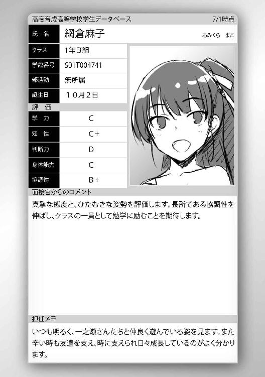
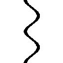

| ようこそ実力至上主義の教室へ 7 <ようこそ実力至上主義の教室へ> (MF文庫J) | |
| 衣笠 彰梧 & トモセシュンサク | |
| KADOKAWA / メディアファクトリー (2017) | |
ようこそ実力至上主義の教室へ７
衣笠彰梧

本作品の全部または一部を無断で複製、転載、配信、送信すること、あるいはウェブサイトへの転載等を禁止します。また、本作品の内容を無断で改変、改ざん等を行うことも禁止します。
本作品購入時にご承諾いただいた規約により、有償・無償にかかわらず本作品を第三者に譲渡することはできません。
本作品を示すサムネイルなどのイメージ画像は、再ダウンロード時に予告なく変更される場合があります。
本作品の内容は、底本発行時の取材・執筆内容にもとづきます。
本作品は縦書きでレイアウトされています。
また、ご覧になるリーディングシステムにより、表示の差が認められることがあります。
○龍園翔の独白
俺が自分自身を異常者だと気づいたのは、小学校に上がった直後のことだ。
遠足の休憩地で見つけた一匹の大きな蛇。
クラスが大騒ぎになったのを覚えている。
遠巻きに歓喜するヤツ、怯えるヤツ、あるいは興味のないヤツ。
反応は様々だったが、一貫して同じだったことがある。
それは誰も蛇を排除しようとはしなかったことだ。
大人ですら冷静さを欠き、誰に助けを呼ぶだのと連絡を取り合うだけ。
その蛇の頭に、俺は手近にあった大きな石を振り下ろした。
嚙まれるかも知れない、という恐怖はなかった。
飛び交う悲鳴、慌てふためく教師。
そんなものはどうでも良かった。
全員が恐れる蛇を駆逐しヒーローになりたかったわけでもない。
ただ、何故こんなにも恐れる必要があるのかと疑問に思っただけだった。
自分自身の中にある未知なる存在とのファーストコンタクト。
そして同時に知った。
相手が屈する瞬間、脳内を満たす大量のアドレナリンが分泌されることに。
これが、俺にとって初めての明確な勝利だった。
『恐怖』と『愉悦』は表裏一体。
紙一重の世界にありやがる。
この世界は『暴力』によって支配されている。
この世界の『実力』は『暴力』の強さで決まっている。
力尽き、ぐちゃぐちゃに肉片を撒き散らした死骸を見て、俺は愉悦を感じた。
だが異質な存在は、多数から敵意を向けられる。
その時以来、内にも外にも敵が大勢出来た。
時には大勢に囲まれ、ひたすら暴力を受け続けたこともあった。
抗えない力の前に崩れ落ちたことも一度や二度じゃない。
それでもオレは恐怖しなかった。
どうやって復讐し、逆転するかだけを考えた。
そして最終的には───全てが俺の前にひれ伏した。
本当の実力者とは、比類なき暴力を持つ人間のこと。
そして『恐怖』を克服した人間のことだ。
だがここで一つの問題が起きる。
それは俺が実力者になるに従って芽を出してきた。
日々愉悦を得ることが難しくなると同時に、退屈を覚えたのだ。
結局、俺に敵うヤツなど存在しない、という退屈。
俺のこの悟りを覆すような、そんな存在。
もしもあるとしたら───それは『死』だけだろう。

○真冬の足音
12月も半ばを経過した。
季節の移り変わりは早いもので、すっかり寒くなってしまった。マフラーや手袋、長い靴下を履く生徒も当たり前のように増え、今日の空は今にも雪が降り出しそうな曇り空。
思えば、オレは生まれてから一度も雪を見たことがない。
もちろんテレビや本の世界では目にしたことがあるが、実際に手で触れ、肌で感じたことはない。今年この地域に雪が降るのかは定かじゃないが、体験してみたい気持ちはある。
放課後のケヤキモール内の一角。生徒たち御用達の休憩スペースに集まったＤクラスのメンバーはオレと佐倉愛里、長谷部波瑠加、そして幸村啓誠の４人。啓誠の本当の名前は輝彦だが、本人の希望もあってオレたちの間では啓誠と呼んでいる。この顔ぶれは、最近すっかりお馴染みのメンバーになっていた。週に２、３度不定期に集まって何を目的とするでもなく話し込む。時間は日によってまちまちで２時間ほど話すこともあれば、30分ほどで解散することもある。途中で帰りたくなれば帰ってもいい。とにかく気負う必要のないメンバーたちだ。だが、そんなメンバーたちも金曜日の放課後だけは普段よりも長い時間を一緒に過ごすことが多い。
その理由はこの場にいない５人目、最後のメンバー、三宅明人の諸事情にあった。
「結局、どこのクラスからも退学者は出なかったんだな。そろそろＣクラス辺りがやらかすんじゃないかと思ってたんだがな。こっちの作った問題は簡単じゃなかった」
たまたま目の前をＣクラスの女子生徒たちが通ったこともあり、啓誠がそう言った。
「Ｃクラスとか、私たち以上に勉強できなそうだもんね」
携帯を弄りながら波瑠加が即答する。そして報告を入れてきた。
「もうすぐみやっち来るって。今部室出たみたい」
どうやら待ち人とやり取りをしていたようだ。グループの中で唯一部活に所属している明人は、どうしても放課後すぐに集まることが出来ない。
「でも試験で勝てたから良かったんじゃないかな......？ それに、別のクラスでも退学する人が出るのは嬉しくないな」
手荒なことを好まない愛里は、素直な気持ちを口にする。
「まー仲良くやれるに越したことはないけど。学校の仕組み上それも難しいんじゃない？ 上のクラスを目指すってことは別のクラスを蹴落とすってことだしさ」
厳しいようだが、波瑠加の発言は正しい。それを聞いた啓誠は素直に感心した。
「その通りだ。愛里の言いたいことも分かるが、蹴落とさなければ蹴落とされるだけだ。この学校で勝つこととは３クラスを犠牲にすることだ。俺たちが犠牲になる必要はない」
「そう、だね......」
やや口調の荒くなった啓誠の言葉にしょんぼりする愛里。
「例えばさ、裏技的な方法はないの？ 最後の試験でクラスポイントが全て一緒になるとか。それでめでたく全部がＡクラスで卒業。なんてことになったりして」
「それ凄くいいと思うっ」
「残念だがそれは無理だと思うぜ」
波瑠加の奇抜なアイデアに対しそう答えながら明人が合流した。
「なんでそれが言い切れるわけ？」
「先輩たちが話してるのを聞いたことがある。最後の試験で同率になった場合は順位を決定付ける特別試験が追加で行われるらしいってな」
「どんな試験？」
「さあな。あくまで噂だし、過去にクラスポイントが同率になったことはないらしい」
聞きかじった程度のため明人にも詳細は不明か。
だがひとつの有益な情報であることは間違いない。
「そうは問屋がおろさないってヤツね。面白いアイデアだと思ったのに」
「結局、Ａクラスになれるのは１つのクラスだけってことだな」
「それでみやっち。今日の練習はどうだった？」
明人に、波瑠加がそんな風に質問した。
「どうだったって何が」
「んー。弓の調子とか」
「別に普通だ。良くもなく悪くもなく。おまえ興味もないのに聞いてくるなよ」
「別にいいじゃない。友達同士の何気ない会話ってヤツ？」
「だったら弓道に関する知識くらいあるんだろうな？」
疑いながら椅子に腰を下ろす明人。
「知識もなにも、弓で的を狙う競技でしょ？」
「いや、大枠はそうだけどな......まあいい」
細かく説明しようとした明人だったが、断念したらしい。
「なんていうかさ。産まれてから今日まで弓道に興味持ったことないからさ。何をどう間違ったらそっちの方向に進むことがあるのか気になったんだよね」
波瑠加の中では弓道への道は間違った方向らしい。まあ派手な競技では無いと思うが、個人的には興味がある。だが一度も弓を触ったことがない生徒は多いんじゃないだろうか。
「確かにどうして弓道なんだ？ 特にこの学校の花形ってわけでもないだろ」
二人のやり取りを聞いていた啓誠からも質問が飛んでいった。
「中学の時に世話になった先輩が弓道部だった。だから俺もはじめてみようと思っただけだ。それくらいなもんで、特に深い理由はない」
「何かを始めるキッカケって、そういうものだよね」
愛里も、ちょっとだけ遠慮がちに話に入ってきた。ここ最近見られるようになった光景で、喜ばしい兆候だ。そして愛里が会話に加わることに対して誰も驚いたり、からかったりしないからこそ、自然と割り込んでいけるのだろう。
「愛里はデジカメだっけ。今色々流行ってるもんね。私もそっちの方が理解できるかな」
「女子特有のインスタ趣味か。理解に苦しむな」
啓誠にはしっくり来ないのか、やや否定的なことを口にした。
「あ、それ男女差別。今は男子だって結構やってる人多いみたいだけど？」
「......そうなのか。自ら個人情報を発信するのはどうかと思うがな」
「俺もちょっとわかんねーな。清隆は？ やったりしてるのか？」
「いや、オレもそっちの知識はからっきし」
この学校では外部とのやり取りが禁止されているため、ＳＮＳなどメッセージ性の強いものは在校生たちだけで繫がることになる。それで満足なら特に口出しすることはない。
「きよぽんは見るからにそういうのしなそうだもんね。これでインスタを使いこなしてたらむしろ引く感じ。アイス持って上目遣いしたり夜のプールでパリピしてたり。......ある？」
「ない」
即座に否定しておいた。後々変なキャラ付けされても困るからだ。
「そう言うおまえはやってるのか？ インスタ」
「全くやってない。面倒だし、他人様に自分を見せる気もないし」
「全くもって同意だ」
一蹴した波瑠加の言葉に頷く啓誠。それを聞いて愛里が密かにだが、グサッと一撃、クリティカルなダメージを受けているようだった。今は休止しているようだが、自撮りやＳＮＳへのアップを、趣味としてやっていたからな。
「世間ではそういうのが流行ってるわけだし、おかしなことじゃないだろ」
軽くフォローしておく。無意味に愛里が落ち込んでも仕方ないからな。本人は隠しているつもりだろうが、オレの発言を気にしているのは傍目に見ていてバレバレだ。
そんなフォローにも愛里がいちいち表情で反応してしまうものだから、すぐに波瑠加たちも気づいてしまったようだ。
「私も自分が流行に疎いことは理解してるからそれは反論できません。インスタとか好きな人たちごめんなさい」
シュッと手を挙げて謝罪する波瑠加。
「自分が嫌いなものだからって、流行っていたり他人が好きなものを頭ごなしに否定するのは、確かにバカのやることかもな。考えが及んでなかった」
そして啓誠も謝った。主に愛里に対して。
愛里はホッとしたように胸を撫で下ろしていた。
「話を変えるようで悪いんだが、少し気になることがあった」
少し話題が落ち着いた頃、そんな風に明人が切り出した。
その口調は僅かに苛立ちを含んでおり、周囲を睨みつけるようにしてこう口にした。
「最近Ｃクラスの様子がおかしくないか」
「Ｃクラスの様子？ いつもおかしいけど、なに、どういうこと？」
クリッとした大きな瞳の波瑠加が、不思議そうに首を傾げる。
オレは明人の視線が何を差しているかを理解した。
ここ数日、オレたちを付け回す連中のことだ。明人も気がついていたらしい。
今も一人の男子が、気配を殺しながらこちらの様子を遠目に窺っている。
Ｃクラスの生徒で龍園の取り巻きの一人でもある『小宮』だ。
ほぼ間違いなくオレたちグループの監視だろう。
だが距離もそれなりにあり、問い詰めたところで見張っている証拠があるわけでもない。偶然が数回重なっただけだと言い張られたら、それ以上の追及は出来ない。
むしろ、突っかかって行ったこっちが悪者にされるかも知れない危険性を孕んでいる。
あえて明人がそのことを口にしなかったのは、まだ確証がないからだろう。
それよりも問題なのは、このグループを見張っているのが『Ｃクラス以外』にもいることだ。明人もその存在には気づいていない。
「この間の勉強会の時、Ｃクラスの奴らが俺たちに絡んできただろ」
ペーパーシャッフルによる筆記試験、その対策のために勉強会を開いていた時のことだ。公共の場であるカフェにＣクラスの生徒たちが現れ、突然こちらのグループに突っかかってきた。
そして今日に至るまで、その突っかかりは尾行という形でずっと続いている。
「龍園くんや椎名さんたちだよね。もしかしてまた？」
「ああ。メンツは以前と少し違ってたけどな。今日弓道部に石崎や小宮たちが顔を出してきやがった。見学ってことで先輩たちは快く認めてたけどよ、四六時中俺のほうを睨んでたせいでやりづらかったぜ」
なるほどな。つまり明人の後を追ってここまで小宮が付け回してきたってことか。
石崎がいないのは、大人数が尾行に適さないからだろう。
明人は人一倍、龍園の監視によって迷惑を被っていたようだ。
「部活に興味持った、とかじゃないのかな？」
龍園の考えなど知る由もない愛里がそんなことを言う。
「だったらいいんだけどな。とてもそんな雰囲気じゃなかったぜ」
明人は肩が凝ったことをアピールするようにぐるっと腕を回して見せた。
連日龍園によるプレッシャーを与える行動は繰り返され、その勢いを強めていた。
直接話しかけられたわけじゃないが、龍園の不敵な笑い声が聞こえる気さえする。
じわりじわりとおまえを追い詰めてやる。そんな龍園の強い意志が出ている。
「何かされたりとかはなかった？ 野次飛ばされたりとか、矢を放つ瞬間にくしゃみされて妨害されたりとか。あるいは小石投げられたり」
「流石に顧問や上級生がいる前じゃ何も出来ないだろ。練習が終わる頃には帰ってた」
あの日以来オレ個人に特別変わったことは起きていないが、当たりを付けられているのは明白だ。軽井沢にも何かしらのマークがついていると見るべきだろう。
既にヤツの中ではオレを含め数人にまで、ターゲットを絞り込んできているはずだ。
あと一つ決定的な何かを摑めば、オレまでたどり着くと思っている。
そしてその決定的な何かを握っているのは『軽井沢恵』だ。
だが、軽々に行動に移さないのは慎重に考えている証拠だろう。
軽井沢にオレの存在を聞きだそうにも、正面からでは成功するはずもない。
では龍園はどうやって最後のピースを埋めてくるのか。
これまでのヤツの行動パターンを見れば、想像は難しくない。
問題はそれが『いつ』なのかだ。
オレがそのことを考えている間にも、明人たちの会話は進んでいた。
啓誠はＣクラスがちょっかいを出してくる理由をこう結論付ける。
「Ｄクラスの成長に関係があるんじゃないか？ 入学早々クラスポイントが０ポイントになった俺たちが、気がつけばＣクラスの背中を捉えるところまで来ている。今回のペーパーシャッフルの結果もあって、３学期からはついに俺たちがＣクラスに上がるかも知れない。相当焦ってるはずだ」
啓誠が冷静にＣクラスの行動理由を推測する。
「そういえばそうだよね。あれだけ馬鹿にしてた私たちに追い抜かれそうだとねー」
「でも......本当なら追い抜けなかったんだよね？」
愛里がクラスポイント発表時のことを思い返しながら聞くと、啓誠が答えた。
「ああ。12月頭に発表されたクラスポイントはＤクラスが２６２ポイント。Ｃクラスが５４２ポイント。その差はまだ２８０ポイントあった」
ペーパーシャッフル試験でオレたちＤクラスは、直接対決することになったＣクラスとの戦いに勝利し、見事クラスポイントを奪取した。Ｃクラスの１００ポイントがＤクラスに移動し、合計２００ポイントの差が詰まった。差は僅か80ポイント。
だが、それでもこの段階ではＣクラスがリードしていた。
ところが───ここに来てＣクラスに試験とは別のアクシデントが起こった。
「Ｃクラスに重大な違反行為があったみたいだな。その詳細は発表されていないが、マイナス１００クラスポイントという大きな罰則が与えられた」
つい先日、学校側からざっくりとした説明を受けたのを覚えている。
「何やらかしたらそんな大事になるんだか。Ｃクラスらしいっちゃらしいけどさ」
呆れかえる波瑠加だが、Ｄクラスは残念ながら他クラスを笑えない。
試験だったとはいえ、入学当初に一月で１０００クラスポイントを失っている。
「どんな理由にせよ自滅の影響は大きい。これからを何事もなく終えることが出来れば、冬休みを挟んで３学期からはＣクラスへと昇格する可能性が高いだろうな」
驕ることなく啓誠が話を締めくくる。
「それが、みやっちに絡み始めた原因？」
「否定する材料は無いな」
Ｃクラスを束ねる龍園にしてみれば、普通に考えて降格は面白い話ではない。
何とかして今の位置をキープしようとＤクラスの弱点を探している。
そう考えれば辻褄が合う。この場に居るオレ以外の皆の考えは一緒になった。
「クラスの変動はこの学校にとって避けては通れない問題だが、そう頻繁に起こるものでもないと思う。となれば、最初大きく転んだＤクラスが成長してきたことはＣクラスにとって焦る理由になるし、成長してきた理由を探ろうとしていると考えれば頷ける」
「普段偉そうにしてるって言うか、リーダーだもんね龍園くん。メンツ丸つぶれかぁ」
「なるほどな。あいつらの必死さも分からなくはないか」
プライドがズタズタに引き裂かれて悔しがる龍園の姿でも思い浮かべて、少し溜飲を下げたのか、明人も同意した。
「でも、さ。私たち別に変わったことはしてないよね？ 気がついたら差が詰まってきてるって言うか。なんで？ やっぱりＣクラスが勝手に転んでるから？」
確かにクラス内の多くの生徒は水面下でのバトルを知らず、普通に試験に挑んできた。
差が詰まっていることに理解が追いつかないのは無理も無い話だ。
「Ｄクラスだけに絞って考えれば、無人島の試験では他クラスに勝利している。干支試験では龍園にしてやられたけど、先日のペーパーシャッフルでは俺たちが盛り返したからな。それに対してＣクラスはクラスポイントを軽視してる節があるだろ？」
「無人島でも、早々に支給されたポイント全部使ってたらしいしな」
「つまり......Ｃクラスの自滅？」
「そういう見方も出来るな。今回の違反行為だって自滅なわけだし」
夏休みの始めに実施された無人島特別試験。各クラスにはそれぞれ平等に試験専用の３００ポイントが支給され、１週間をその与えられたポイントを使いクリアするというものだった。そして残ったポイントは全て、試験終了時にクラスポイントへと還元される。Ｄクラスを含め、他クラスが１ポイントでも多く残そうと知恵を絞っている中、波瑠加の言うようにＣクラスは早々に３００ポイントを全て使い切った。
「だから、結果的に俺たちＤクラスには大きく差を詰められたんだろ」
オレたちＤクラスは紆余曲折ありながらも、２２５ポイントを残すことに成功した。
「そうなんだけどさ。それに見合ってたのかなって思うことはあるわけよ。Ｃクラスは散財した分バカンスを楽しんだみたいだし。あの苦労を知らないで済んだのはちょっとだけ羨ましいかも」
「バカバカしい。龍園は無茶を......いや、人がしないような行動を取ることが格好いいと勘違いしている子供だ。それでクラスが負けてたんじゃ意味が無い」
Ａクラスに上がるためにクラスポイントを増やしていく。そういう強い意志のある啓誠にしてみれば、クラスポイントを放棄する行為など到底理解できない奇行に見えるだけのようだ。
だが無人島の試験で、龍園もただ無意味に与えられたポイントを浪費したわけではないはずだ。事実龍園は全てのポイントを使ったが、使いまわせるトイレやテント、余った食糧などの全てをＡクラスに引き継がせていた。あの龍園が無償で提供したとは考えられない。つまり、クラスポイントを失った代わりに得たものは必ずあるはずなのだ。
もちろん、信頼や友情といった目に見えないものを受け取ったはずもない。クラスポイントを失ってでも得られるもの。それはプライベートポイントに他ならないだろう。
その事実を知っている生徒は少なく、啓誠には分かりようのない部分ではあるが。
「男子はいいよね、色々楽そうだし。そうは思わない？ 愛里」
「う、うん。そうだね。凄く困ってた子も何人かいたし。もう少し遅いタイミングだったら私も大変だったかなって......」
そう言って愛里は顔を赤らめながら俯いた。ある程度女子に対しては配慮のあった無人島試験だが、それでも男子より遥かに大変だったことは事実だろう。
「何故もう少し遅かったら大変だったんだ？」
女子の事情を全く理解していなかった啓誠が不思議そうに愛里の顔を覗き込む。
「そ、それはっ」
愛里はとても女の子の日が関係しているとは口に出来ず視線を逸らして逃げた。
その状況を見ていた波瑠加が啓誠に対して辛辣なコメントを送る。
「なんていうかさ、ゆきむー。そういう天然っていうか、無知なところは意外と可愛いポイントなんだけど、この件に関しちゃ空気読んで？って感じ」
「......どういうことだ」
察しが悪いのか本当に知らないのかはさておき、明人が優しく啓誠の肩を叩いた。
「人には色々あるってことだ」
「さっぱり理解できない。色々とはなんだ」
空気を読めない啓誠が女の子事情に更に踏み入ろうとしたので、明人が話題を変える。
「堀北が龍園の捨て身作戦を見抜いたからこそＤクラスは勝ったんだよな？ もし誰も気がつかなかったら、Ｄクラスもリーダーを当てられてた可能性が高いんだろ？」
オレのほうに確認をして来た明人に対して、素直に頷いて答える。
「そうなってたら、今のこの状況はなかっただろうな」
「豪遊するだけして、最後に美味しいところだけ取ろうとしたのよね？ 全員リタイアしたと見せかけて。でもあれって島に残るのが龍園くんである必要ってあったの？ Ｃクラスのリーダーだし、もっと目立たない人を残した方が確実だったんじゃない？」
その波瑠加の推理も全く的を射ていないわけじゃない。
しかし、それは全てのクラスに当てはまることでもある。目立つ人間がリーダーであるとは最初に考えることだが、誰でもリーダーに指名できる以上疑ってかかるのは当然だ。
そもそも島に残っている確信がなければ、龍園をリーダーだと指名できる生徒は存在しない。仮に残っていたことが判明しても、指名される危険性は高くはならなかっただろう。目立たないＣクラスの生徒が他に潜伏している可能性も排除しきれなかった。指名するメリットより外すデメリットの方が大きい試験。結局決定的な証拠を摑まない限り、誰にも確信を持って指名することは不可能だ。
「なあ清隆。堀北から聞いている情報を俺たちにも教えてくれないか」
啓誠が真剣な表情で訴えてきた。
「どういうことだ？」
「龍園が何を考えていて、どうしていくつもりなのかを知りたい。体育祭やペーパーシャッフルのことを考えれば、これからはもっとクラスで連携を取っていく必要がある」
「俺も石崎たちに張り付かれて気味が悪いしな。それは賛成だ」
どうやら、今まで以上に協力していくことが大切だと気づき始めたらしい。
これまでクラス内の問題にあまり目を向けなかった明人や波瑠加も同意見らしい。
「オレも聞きかじった程度しか知らないからな......」
堀北を呼ぶか提案する前に啓誠が言う。
「まずはそれで十分だ。教えてくれ」
４人が一斉に視線を向けてきた。妙なプレッシャーを感じる。
「わかった。間違ってる箇所があっても責任は取れないからな」
そう断りを入れた上で、オレは堀北と共有する無人島で起こったことを、改めて一からグループに説明していく。もちろん全てはオレ一人で動いたことだが、表向きそれは堀北一人で考え行動したことにしてあるからな。
島に潜伏していた龍園が無線機を使いスパイとやり取りをしていたこと。伊吹以外にも他クラスに潜入したスパイがいたと思われたこと。それから船上試験以降、龍園は堀北に執着し始めたこと。船上では龍園が試験の攻略法を見つけ勝利したことなどを話した。
体育祭で龍園が堀北潰しを画策していたことや田の裏切りは当然伏せる。
「大体こんなところか。啓誠たちが知ってるのとそれほど変わらないだろうけど」
目新しい情報を得られなかった啓誠は深く考えるように腕を組んだ。
「疑問なのは、波瑠加も言っていたがどうしてわざわざ龍園が島に残ってたかだな」
「堀北が言うには、龍園が誰も信用していないから、というのが本命らしい。他クラスからの情報を集めつつ推理するには他の生徒じゃ荷が重かったんだろうな」
スパイの統率を取るための指揮、推理力。数日間最低限の装備で島に残る忍耐と体力、ここでは口にしないが繫がりのあるＡクラスと連携を取れる人物でもなければならない。
そうなると、龍園以外に出来ない作戦といっても過言ではないだろう。
もしリーダーの指名が生徒全員が集合してから行うものだったならば、この作戦を龍園も展開しなかっただろう。しかし無人島に配られたマニュアルには最終日の点呼直後に行われると明記されていた。つまり各クラス集合前に行われる。龍園はその部分に目を付けて作戦を立てたはずだ。
「さすが堀北だな......俺にはそこまで気づくことは出来なかった。最初から他クラスのリーダーを当てることは放棄していたも同然だし、状況を探ろうともしなかった」
淡々と反省をする啓誠たち。
「無理もないんじゃないか？ 食糧問題や衛生面の問題に加えて、マニュアルが燃やされたり下着が盗まれたり、Ｄクラスもバタバタしてたしな。とても他所のクラスを偵察する余裕は無かった」
無人島での出来事を思い出した明人。啓誠も嫌な感じで記憶を掘り起こす。
「ほんとに大変だったよね、思い返せば」
「でもすごいね堀北さん。あの試験でそこまで分かってたなんて」
素直に感心した様子で愛里が堀北を称賛する。
「龍園くんの作戦を見抜いてた堀北さんがマークされるのも頷けるよね」
「事実、今もちょっかいを出され続けてるみたいだ」
ここは否定せず、ありのままを話しておく。
そしてこう補足しておいた。
「干支試験でも同じグループになってひと悶着あったようだしな」
「無人島のことや船のことは何となくわかった。でも、最近龍園たちがＤクラスの他の生徒にも執拗に絡んでくるようになったのはどうしてなんだろうな。わざわざ弓道部まで来て俺の様子をチェックするなんて普通じゃないだろ」
堀北が狙われるのはわかっても、当然その疑問が出てくるよな。
「何かＤクラスの弱点を探そうとしてる、とかかも知れない。堀北には付け入る隙みたいなのがないからな。周りから崩していく作戦とか」
「なるほど。そういう可能性もあるか......」
これで龍園の行動理由も何となく啓誠たちに伝わったんじゃないだろうか。
「きよぽんの彼女やるぅ」
波瑠加が感心しつつ茶化してきた。
「勝手に彼女にするな」
「そ、そうだよ。清隆くんに失礼だと思う、な」
「あはは。ごめんごめん」
勝手に補足させてもらうが、堀北にも失礼だからな。オレなどとカップルにされたら。
たとえ誤解とはいえ須藤が聞いたら怒り出しそうな話題だ。
「彼女じゃないとしても、好きだったりしないの？ もしくは他に彼女がいるとか」
「好きだったりしないし彼女もいない」
「そっか。じゃあ私たち今年は全員ロンリー決定なわけだ」
「ロンリー？」
「周りを見てよ。もうすぐクリスマスでしょ」
ケヤキモールの中にある飲食店前に置かれたベンチに腰掛けたまま、波瑠加が呟く。
確かに言われた通り、学校内の施設とは思えないほどのクリスマス用の装飾準備が進められていた。時折男女のカップルらしい生徒たちも通る。
「別に特別な日でもないだろ。普通の一日だ」
「ゆきむーにとってはそうかも知れないけど、女子の間では意外と大変なんだって」
「う、噂とか色々出るもんね......」
「そうそう。誰々と付き合ってるとか付き合ってないとか。一夜を共にしたとかしてないとか？ 好んで独り身をやってるのに、妙に可哀想な目で見られたりね」
「......高校１年生だぞ俺たちは。学業が本分だ」
「ちょっと想像した？ 顔赤いけど」
「うるさい」
「それにしても、このマンゴージュース甘すぎだろ。やる」
明人がオエッと吐く素振りを見せて、オレへとカップを回してきた。
「美味しいのに」
波瑠加が信じられないと言った様子で驚いた。
「ちなみにだけど、Ｄクラスでも冬休みの間に色々あると思うけどね、私は」
「それは......誰かと誰かが付き合うってこと？」
興味深そうに愛里が波瑠加に聞く。
「多分ね。付き合う男女もいれば、破局する男女も出てくるわけ。クリスマスは色んなことが起こるから」
これまでそんなカップルを沢山見てきたかのように、波瑠加は二度三度頷く。
「付き合う連中はともかく、破局なんてあるか？ 今のところＤクラスで付き合ってるのは、平田と軽井沢くらいなものだろ」
まだ喉にマンゴーの甘さが引っかかるのか、喉元を押さえ話す明人。
ちなみにオレも今飲んでるが、物凄く甘い。
「そうとは限らないわけよ。みやっちの知らないところで、意外なカップルが出来てたり。恋愛はクラス内だけで成立するものじゃないしね。もし好きな子がいるなら、誰かに盗られちゃう前に行動しないと」
「生憎と俺の恋人は弓道だけで十分だ」
「臭っ。そこまで熱上げてるわけでもないのに言うね。かっくいー」
「......うるせえ」
ちょっと恥ずかしかったのか、明人は照れたようで視線をそらした。
そうか。もう世間ではクリスマスが近づいているのか。これまで全く馴染みがなかった分、どうにも浮世離れした話に聞こえてならない。
「とにかく俺は部活だ。冬休み中も休みになるわけじゃないしな。彼女でもいれば話は違うんだろうが、今のところその予定もない」
「作りたい意志はある、と？」
インタビュー風に、手でマイクを握るような仕草をして波瑠加は明人の口元に寄せる。
「池たちのように声を挙げるつもりはないが、男子も女子も似たようなもんだろ」
恋愛そのものに興味が無いヤツなんてそうそういない、ってことを言いたいようだ。
「......ま、理想の男子がいれば否定はしないかな。ゆきむーは割と恋愛そのものが否定派っぽいけど、ゆきむーを好きっていう子が現れたらどうする？」
「どうするって......俺とその相手との関係によるだろ。そんなの」
「あ、可愛いから無条件で付き合うわけじゃないと。ふむふむ、真面目くんですな」
「うるさい」
からかう波瑠加に振り回される男二人。
「清隆くんは、ク、クリスマスの予定とかあるの？」
隣に座る愛里が唐突にオレにそんなことを聞いてきた。
「うわ愛里それってきよぽんを誘ってるわけ？ だいた～ん」
「ち、違う、そういうのじゃなくて！ 違うからね!?」
「だってそれ以外なくない？ きよぽんはさっき彼女はいないって言ったばっかりだし」
「そうじゃなくってえ、ほら、その、どんなことするのかなって。一人でクリスマスを過ごす時、何をしてるのか気になったからっ」
確かに。恋人同士ならデートの１つや２つするだろう。
でも一人の場合はどんな過ごし方をするのかは興味のあるところだ。
「なるほど確かに。みやっちは部活だろうけど、ゆきむーはどうするの？」
「俺は勉強してるかな。３学期、予定通りＣクラスに上がったら、追うだけじゃなくて追われる立場にもなるからな。クラスに学力の低い生徒が多い以上、筆記試験だけでも牽引できるようにしておきたい」
適材適所、自分が一番輝ける部分でクラスに貢献していく考えのようだ。
波瑠加と明人に勉強を教えたことで自信がついたように見える。
「そこまで勉強する努力は俺にはできそうにないな。任せたぜ啓誠」
「任せるのはいいが、もしＡクラスで卒業できて任意の希望先に進めても、地力が高くなければ自滅する未来しかないぞ」
啓誠は、単純にＡクラスに上がることだけを考えていたらダメだと諭す。
「確かにそうだよねー。身の丈にあってないとすぐに崩壊しそう」
「けどそれじゃ、Ａクラスで卒業する意味って薄くなるよな」
理解はしつつも明人にしてみれば、少し不満もあるようだった。
Ａクラスで卒業する頃には、全員がそれに相応しい能力を身に着けている。
という筋書きを学校側は立てているんだろうか。
今のところは何とも言えないが。
「そんで愛里が気にしてるきよぽんは？ クリスマスはやっぱり一人？」
「そうだな。特別なことは何も。部屋で大人しくしてるんじゃないか？」
「クリスマスも普通の休日ってヤツね」
12月22日が終業式。すぐにクリスマスもやって来るだろう。
「ふ......ふふっ」
そんなやり取りを見ていた愛里は、何を思ったか小さく笑い出した。必死に笑いを堪えようとしているようではあるが、堪えきれないらしい。
「なんかおかしかった？」
「ご、ごめんね。ううん、私その、楽しくって......そしたらなんか笑えてきたの」
「楽しくて、笑える？」
よく分からないと首を傾げる波瑠加たち。
気がつけば愛里は少しだけ目の端に涙を浮かべているようにも見えた。
「今までこんな、楽しい時間過ごしたことなかったから。私、今凄く楽しいの」
愛里は素直な胸に秘めていた思いを、そう自然と言葉にした。
「下らない雑談ばっかりだけどね」
「それでいいの。こういう話を皆としたかったから」
「なんかよくわかんないけど、それなら良かったじゃない。私も楽しいし」
そう波瑠加は締めくくった。
そして話題は次に移行する。
「折角集まったんだし、皆で晩御飯食べて帰らない？」
特に反対意見が出ることもなく、オレたちはグループとして移動する流れになった。
そこでオレは皆に声をかける。
「ちょっとトイレ行って来る。先に行っててくれないか？」
「じゃあここで待ってるぜ」
「いや、そろそろ時間的にも混み出す頃だし、並んでた方が効率的かも。席よろしくな」
全員納得したようで、ケヤキモールのレストランへと向かって行った。愛里がオレ抜きでもある程度行動できるようになったからこそ成り立つ状況だ。
小宮はオレがトイレに向かうと判断し、明人たちを追って行った。
グループの背中と小宮を見送った後トイレとは真逆の方向へと歩き出した。
そして、オレたちが談笑していた休憩場所に座り込む一人の女子に近づく。
「ちょっといいか」
一人掛け用の椅子に座る女子に声をかけた。Ａクラスの神室だ。彼女は携帯を操作していて、あたかもこちらに気づいていないように身を硬直させ動かなかった。
「そこのお前に言ってるんだけどな」
改めて声をかける。
「......私？ 何」
僅かに視線を上げ、初めてオレに気づいたというような仕草を見せる。
オレはそのまま数歩足を進め、神室の隣にある別の一人掛け用の椅子に腰を下ろした。
ピリリとした空気が二人の間だけに流れる。
「ここ最近オレを付け回してるようだけど、何か用か？」
「はあ？ 何言ってんの？」
「昨日の放課後の帰り道。２日前のケヤキモール。４日前のケヤキモール。６日前の帰り道。７日前の帰り道。随分と偶然が続くもんだな」
オレは携帯の画面を女子に向け、素早く写真をスライドさせる。
「それ、いつの間に......」
付け狙っている姿を密かに撮影したものだ。
「尾行してる側としては、オレに視線を向けられそうなときはこちらを見れない。その間にこっちが携帯で撮影しても気づかないのは無理もないだろうな」
「後を付け回してたらなんだって言うわけ？ 問題ある？」
「別に。オレは直接被害を被ってるわけでもないし、特に止めろというつもりはない」
「でしょうね。偶然だし」
「ただ、ボスがこの状況を知ったらどう思うかな」
「ボス？ なにそれ、映画の観すぎなんじゃない？」
「なら坂柳に報告するとしようか。あんたの尾行じゃ話にならないって」
「......ちょっと待って」
肘掛けに手を置き立ち上がろうとするオレを神室が呼び止める。
その態度だけで、今の状況を好ましく思っていないことがよく分かった。
「随分とご執心なんだな、坂柳に。毎日毎日長時間尾行させられてもきちんと仕事をする。よっぽど仲がいいんだろう」
「ふざけないで。あんなヤツに従いたいと思ってるわけないでしょ」
「そんなところまで噓をつく必要はないだろ。事実、学生の貴重な時間を使って退屈な尾行をしてるんだ。坂柳のことを信頼し尊敬しているから出来ることだ」
「それは絶対にない。今すぐにでも縁を切りたいくらいよ」
強烈に吐き出すように、神室は苛立ちを見せた。
「なら、どうして坂柳の指示に従う」
「別に何でもいいでしょ」
「もし善意じゃないなら、弱みの一つでも握られてるんだろうな」
「......何が言いたいの」
「おまえの尾行のお粗末さを坂柳に報告する。そうなれば、おまえがアイツの手足として動くことに対する能力不足が露呈する。その握られた弱みが後々影響してくるかもな」
「脅そうってわけ。あんたも私を」
『も』か。坂柳は神室を使う上で何かしらの弱みを握っているようだ。
ただのカマ掛けだったが、こうも見事にかかってくれるとは。
「あんたもなんなわけ。坂柳に狙われてるなんておかしいでしょ」
「さあ。それはオレにもさっぱり」
坂柳の真意は神室にも分からないようだったが、ひとつだけ答えを得たようだ。
「龍園が探してるＤクラスの生徒ってあんたでしょ。それ以外考えられない」
「だったらどうする？」
オレはあえて否定しない。
そもそも、坂柳がオレの過去を知っているならどれだけ取り繕っても意味が無い。
「あたしを脅してるようだけど、こっちだってその気になれば龍園に進言できる」
「脅そうと思ったら、脅し返されたか。ならこうしよう」
オレはひとつの提案を神室に持ちかける。
「今後も好きに尾行すればいい。一切口出ししない。それに坂柳への告げ口も止めよう。代わりといっちゃなんだがオレのことは坂柳以外には伏せてもらいたい」
「交換条件ってわけ」
「悪い話だとは思わないけどな」
「......確かにね。龍園のヤツに興味はないし」
神室は承諾したようで、頷くと立ち上がった。
「今日のところは帰る。疲れたし」
そう言って、神室は真っ直ぐにケヤキモールの出口に向かって行った。
「面倒な弱みを握られてるようだな、あいつも」
だがこれで、迂闊な横槍はなくなるだろう。
ひとまずはこれで良しとしておくべきか。
思わぬところから龍園に正体が漏れる。そんな危惧していた点は問題なさそうだ。

○再会と別れの知らせ
「あーくそ。なんなんだよあいつらはよぉ」
登校してきた須藤は苛立ちを口にしながら自分の席を通り過ぎて堀北の下へと近づいてきた。その表情は険しく怒りを孕んでいるのが見て取れる。
「ちょっと聞いてくれよ鈴音」
「どうしたの」
目の前に来られては無視するわけにもいかないと、堀北が話に付き合う。
「Ｃクラスの連中、つか龍園のヤツだよ。朝から俺にイチャモンつけてきやがった。廊下で歩くのを邪魔してきやがって。マジムカついたぜ」
「暴言を吐いたり手を出したりしていないでしょうね？」
軽く睨む堀北に、須藤が即座に反論する。
「してねーよ。ガン無視して来たっつの」
「そう。私の言いつけ通り上手くやり過ごしたようね」
ひとまず問題を起こしていないようで何よりだ。
「ところで、なんだ言いつけって」
オレは須藤に聞いてみる。
「鈴音に言われてたんだよ。上手い対処が出来ない時はとにかく無視しろってな」
それは的確なアドバイスだな。下手に須藤に反論させると火に油を注ぐことになる。
それなら須藤にストレスを溜めさせてでも、我慢させるのが一番だろう。
「まあ、強引に通る際に肩はちょっとぶつかったけどよ。他クラスの連中も俺が絡まれてるのは分かってただろうから大丈夫だよな？」
「そうね。流石にそれにつけ込んで来ることはしないでしょうね」
向こうも一度学校や生徒会を巻き込んで騒動を起こしているからな。
殴られたりしたならともかく、強引に突破したくらいなら大丈夫だろう。
「それで何を言われたの？」
「猿だのバカだの、ガキみたいなことだよ。喧嘩売りまくってきたぜ」
パン、と自らの拳を手のひらに打ちつけ、怒りを発散させる。
昨日弓道部に顔を見せたことの延長戦だろうか。
「明人の......部活中の三宅の方にもＣクラスの連中が張り付いてたらしい」
「三宅くんにも？ 最近、随分と活発に行動しているみたいね」
「何が狙いなんだよ。また俺をハメた時のように事件を起こすつもりか？」
「さぁ。今はなんとも言えないわね。だけど対策を考えておくわ。また同じように絡まれても絶対に手を出したりしないで」
「わかってんよ。俺はおまえとの約束は破らねえ。仮に殴られても大人しくしとくぜ」
以前Ｃクラスと揉めた時に比べれば、須藤の言葉には相応の重みがついていた。
それを汲み取れたからこそ、堀北も素直に受け入れたようだ。
報告を済ませた須藤は、それだけで満足したのか自分の席に戻り池たちとの何気ない会話を始めた。それを見届けながら堀北が言う。
「須藤くん自身は、やっと人並みになったかしら」
「そうだな。言葉遣いは多少荒いが、それは許容範囲とするべきだろうな」
「彼も、そろそろ次のステップに進んでいく必要がありそうね」
そう言い、何故かノートを取り出した堀北はサッとペンを走らせる。
「なんだよ、次のステップって」
覗き込もうとすると、ノートをパタッと閉じる堀北。
「それはまた追い追い話すわ。やるべきことは須藤くんの問題だけじゃないもの」
彼だけに構っていられないと、そう小さく付け加えた。
何を考えているのかは知らないが、こちらとしてはどうでもいいことか。
最近は堀北自身で物事を考え行動することが多くなった。
須藤や平田たちと少しずつコミュニケーションを取れるようになってきたからだろう。
「それにしても随分と活発ね龍園くん。ペーパーシャッフルの直後だし、もう少し大人しくしていると思っていたけれど。早速新しい何かを仕掛けてきたということかしら」
「でも変じゃないか？ 今は何か特別な試験が行われているわけでもない」
「元々を思い返せば、彼は試験だけに縛られた戦い方をしていないもの。須藤くんに対して暴行を働いたこともそうだし、一之瀬さんたちＢクラスも、試験外で何かを仕掛けられていたようだし。ポイントの奪い合いにならない場外戦が好きなようね」
そんなこと、いちいち聞かないでもわかっているんじゃないの？ とこちらを確かめるような目で見てくる。もちろん気づかないフリをして流しておく。
「だけど今度の狙いは何なんだろうな」
「あなた本当に気づいていないの？ それともフェイク？」
「どういうことだ？ オレは何も分かってない」
「彼はＤクラスを影で動かす人物を探し出そうとしている。そのためになりふり構わず動き始めたということよ」
「つまりおまえか」
そういうと、強烈に睨みつけられた。
「もう私の隠れ蓑は、龍園くんには全く通じていない」
こちらの噓を相手にせず、堀北は真面目に続けた。
「なんでそう言い切れる」
「もし他の生徒のようにまだ私が全てを動かしていると思っているなら、当然私に対して接触して来なければおかしい。だけど今回私は何もされていない」
これまで執拗に堀北に固執していた龍園が、そうじゃなくなったと言いたいらしい。
「それは考え方次第じゃないのか。ペーパーシャッフルの時に見せたおまえの作戦が思いのほか効いてるってことじゃないか？ 下手に仕掛けるのを躊躇ってるってことも考えられるだろ。外堀から埋めていく狙いかも」
「そうかしら。私にはそんな風に思えないわね。私に興味を失った、というか」
「龍園に興味をもたれて満更じゃなかったってことか」
「そういう意味じゃないわ。蹴られたいの？」
「蹴られたくはない」
コイツは本気で蹴ってくるからきちんと拒否しておく。
「このクラスの影の立役者は、間抜けにも彼に目を付けられたんじゃない？ ......はぐらかすのも結構だけど、こんな場所でこれ以上口にさせるつもり？」
田含め、多くのクラスメイトが席についたホームルーム前、オレたちの会話に耳を傾ける者はいないとはいえ、確かにここでするような話ではないな。
「それにしても、随分と龍園のことを理解するようになったな。あぁいや、さっきみたいに茶化す意味じゃなくてだ」
再び睨まれそうになったので、慌てて言葉尻を足しておく。
「彼のやり方は基本的に同じだもの。成功しても失敗しても似た戦い方をしてくる。何度も仕掛けられたら嫌でも学習するわ。だから彼女を───田さんをペーパーシャッフルの時に利用してくることは読めていた。もっとも、そうならないことが理想だったことは言うまでもないけれど......」
誰だってクラス内から裏切り者は出て欲しくない。田がＤクラスを裏切らなければ今までの試験でもここまで苦戦することはなかっただろう。
と、堀北はそう考えている。
だがモノは考えようだ。田という内側の敵を利用できるからこそ、龍園は安心しきっていた部分がある。もし他に使えるコマがなかったなら、恐らく別の手を考えたはずだ。
結果的に田の存在は、良くも悪くも敵の攻撃パターンを狭めてくれたことにもなる。
「唯一の誤算じゃないけれど、ペーパーシャッフルで私は龍園くんの裏を搔いたつもりだった」
「実際にそうだろ」
「ええ。だから試験勉強を疎かにしてＣクラスの誰かが退学になるかも知れない。そう思っていたけれど、流石に甘い考えだったようね」
完璧な問題と回答を入手できれば勉強する必要はない。だから油断していたＣクラスには退学者が出てもおかしくなかった、ということだろう。
啓誠たちもそうだった。やはり考えることは皆同じだな。
「Ｃクラスにも頭の良い奴はいるだろうからな。龍園とは違うサポートをしてたと考えるのが適当だろう」
「そうね。見えないところで努力していたのなら褒めるべきかしら」
なんにせよ龍園は、堀北の背後に潜む存在にたどり着きたくて仕方がないらしい。
そのためになら学校に目を付けられることも厭わない。
そんな覚悟のようなものが見て取れる行動に感じられた。
「これから先、彼の執拗な仕掛けは激化していくでしょうね」
「オレには関係のない話だ。矢面に立つのはおまえの役目だからな」
「それは分かっているわ。あなたに強引に引きずり出されたのも運命みたいなものだし」
「意外と受け入れたんだな」
「受け入れるしか選択肢がないからよ。今更引っ込めないでしょう？」
前向きになったのは良いことだ。元々堀北の持っているポテンシャルは悪くない。平田のように他人とコミュニケーションをうまく取れる能力さえ身に付ければ、今の地位に見合った存在となるだろう。
「それで───手は考えてあるの？」
「なにが」
「龍園くんの探りに対する作戦はあるのかを聞いているの。今のうちに手を打っておかないと取り返しのつかないことになるわよ」
どうやら堀北なりに、オレの正体がバレることを心配してくれているらしい。
しかしそれは不要なことだ。
「何も考えてないさ」
「またあなたはそうやって......」
何も教えてくれないのね、と深いため息と苛立ちを露骨に見せつけてきた。
「じゃあ少し話を変えるわ。あなたはまだ、向こうの集まりに参加するのかしら？」
「向こうって、啓誠たちのことか？ 何か問題があるのか？」
「あまり益のあるグループとは思えないけれど。元々長谷部さんと三宅くんの不得意な教科が偏ったことから発足した勉強会グループでしょう？ 試験の行われていない今は必要ないんじゃないかしら」
「有益かどうかでは判断してない。気楽でいいんだよ、あいつらといると」
堀北といると、どうしてもＡクラスを目指す方向の話にしかならないからな。
もともとそこに興味がない以上、あまり堀北と接点を持っても仕方ない。
もし堀北が、そういったクラスの争いごとを抜きにしてオレに話しかけてくるなら、それこそ啓誠たちと変わらない対応が出来るんだけどな。
「......あなたは私に協力してくれるのよね？」
「してるさ。出来る限りはな」
とても納得がいっている表情ではなかった。
１
午前最後の授業が終わり、昼休みになる。明人や啓誠を昼食にでも誘おうかと考えていると、隣人がジッとこちらを見ていた。
「なんだよ。まさか朝の続きをしようってんじゃないだろうな？」
「違うわ。あなたにお願いがあるの」
「面倒なことならパスだ」
「面倒なことであるのは否定しないわ。でも時間はそれほどかからないことよ」
そう言い、堀北は鞄から一冊の本を取り出した。
「あなた先週、私が読んでいたこれを読みたいと言ってなかった？」
図書館の印が押された本を机の上に置く。
「『さらば愛しき女よ』か」
レイモンド・チャンドラーの書いた名作だ。
以前から興味があって何度か図書館に足を運んでいたが、妙にこの学校では人気があるのかいつも借りられていた。いい加減購入するしかないかなと諦めかけていたところだ。
「よく借りられたよな。もしかして貸してくれるのか」
返却されたらすぐに別の人間が借りていくことは予想がつく。
確実に借りるには、多少ズルだが前の借り手から直接受け取るのが一番だ。
「あなたが望むならそのつもりよ。ちなみに今日が返却日なの。だから一度図書館で手続きを行って、その上であなたが借り直してもらえないかしら」
「返すのが面倒だから、その手続きをオレに引き受けろと？」
「わざわざ私が返しても、あなたが図書館に行かなければならないことに変わりはないでしょう？ むしろ効率性だけを考えれば正しい判断だと思うけれど」
確かにな。堀北が返却する、という手間だけは省ける。
本を借りる時には学生証が必要になるし、オレ名義で借り直してもらうのは無理だ。
逆に返却だけなら提示するものは何も必要ない。
「もちろん、断られたなら私はそのまま図書館に出向き自分で返却するだけ。人気かつ品薄のこの本が次にあなたの手元に来るのがいつかはわからないけれど。惜しげもなく時間を浪費して図書館に通うならそれでもいいわ」
どう考えても非効率でしょう？ というプレッシャーを容赦なくかけてくる。
読みたいと思っていたオレへの、堀北なりの優しさなんだろうか。
「......わかった。ありがたく引き受ける」
「よろしく」
そう言って、堀北は本をオレに手渡してきた。
「今日中なら昼休みでも放課後でも、好きなタイミングで構わないから。でも、必ず処理はして。延滞扱いを受けたら責任を取ってもらうわよ」
「わかってる」
図書館で本を借りたことはないが、仕組みは把握している。
借りること自体は無料だが、延滞時にはプライベートポイントが差し引かれる仕組みだったはずだ。
「善は急げだ。今から行って来る」
その方が堀北も安心するだろうし、面倒ごとを後に引きずらないでいい。
２
昼休みになったばかりの図書館は意外な穴場だったりする。
館内での食事を禁止されているため、昼食場所としては利用できないからだ。今は数名の利用者しかいないようで、返却手続きはスムーズに出来そうだった。
「どうせなら、何か他の本も借りていくか......」
１冊借りるのも２冊借りるのも、返却にかかる手間は変わらない。
返却手続きをする前に、読みたい本を一緒に借りさせてもらおう。
『さらば愛しき女よ』を片手にミステリーコーナーを巡っていく。
どうせなら、もう１、２冊探偵物で固めよう。レイモンド・チャンドラーで固められればなおよしだ。
ミステリーコーナーにたどり着くと、一人の女子生徒を見かけた。
懸命に腕を伸ばし、自分の背より高い本棚にある本を取ろうとしている。
本の位置が絶妙で、届きそうで届かないようだ。
あと僅かで届きそうだからこそステップ台を使うことに抵抗している。
男でも女でも起こる、あるあるだな。
摑もうとしている本は、エミリー・ブロンテの『嵐が丘』だった。
文学史でも名高いブロンテ３姉妹の次女が書いた作品だ。
いや、確かにあらすじ的にはミステリーっぽいが、ジャンルは恋愛になるんじゃないか？
オレは横入りし、女子生徒が手を伸ばしている『嵐が丘』の本を手に取った。
「余計なことかも知れないけど」
その瞬間、見知らぬ女子生徒だと思っていた人物に見覚えがあったことを知る。
「確かＣクラスの......」
椎名ひより。
少し前に龍園と共にオレたちの前に姿を見せた生徒だ。
向こうは静かにこちらの顔を見つめた後、同じようにオレのことを思い出したのだろう。
「確か......綾小路くん、でしたか」
相手もこちらの名前を覚えていたらしい。
妙な接触の仕方だったことも踏まえれば、必然とも言えるが。
「ああ。とりあえずこれ」
本を手渡す。
「ありがとうございます」
「好きなのか？ ブロンテ」
「個人的には好きでも嫌いでもありません。ただジャンルの違う本が置かれていたので正しい位置に戻そうと思ったんです」
「なるほど......」
どうやら同じ感想を抱いていたらしい。
「ところで、その手にしているのは......『さらば愛しき女よ』、ですね。名作ですよね」
椎名の目に輝きのようなものが宿った気がした。
「今日友人から借りることに成功した」
「それはラッキーでしたね。どうも２年生の間でレイモンド・チャンドラーのブームがあったらしく、ずっと争奪戦が続いているみたいです。私も読み返したいと思ってたんですけど、今日も見つけられなくて......」
「それは悪いことをしたな。又貸しの真似して」
「構いません。以前読んでますし、それにその本を探していて、また別の本にも巡り合えていますから。この学校の図書館の蔵書量は相当な規模です。読みふけっていたら、きっとあっという間に卒業ですね」
そう言って、ブロンテの本を手にとって小さく微笑んだ。
「......そうか。そういうものかもな」
ここには確かに、相当量の本が置かれてある。
特定の本が読めずとも時間は幾らでも潰せる、か。
「邪魔したな」
貴重な昼休みだ。昼食よりも優先してこの場所に来ているくらいだ、他クラスの生徒との雑談で時間を取られるのは不本意だろう。立ち去ることを決める。
「あの。何か他にも借りる本を探しに来たんじゃないのですか？ 返却と貸し出しの手続きだけなら受付で済むことですし。ついでに別の本も借りていこうとされたんですよね？」
踵を返そうとしたオレを椎名が呼び止める。
「また今度にしようかと───って、何してるんだ？」
話しかけてきた椎名はこちらから視線を外し、ミステリーコーナーに目を向けていた。
「ドロシー・Ｌ・セイヤーズのシリーズはもう読まれましたか？」
「いや。クリスティは読んだんだが、ドロシーは手をつけてないな」
「であれば───そうですね、是非『誰の死体？』をオススメします。ピーター卿シリーズの一作目で、一度読めばシリーズを読みたくなること必至です」
そう言って本棚から該当する本を抜き出し、差し出してきた。
「えっと......」
謎の展開に困惑したオレは、どう答えたものかと悩んでしまう。
「勝手に話を進めようとしたりして、迷惑だったでしょうか？」
特に興味が強かったわけじゃないが、ここで断るほどの度胸みたいなものもない。
とりあえず借りること自体はタダだし、流されておくか。
「いや。ちょっと戸惑ったのは事実だけど。折角だから借りてみる」
「それがよろしいかと」
どういうつもりか、椎名は凄く嬉しそうな顔をしてから目を細めた。
「恐らく昼食はまだですよね？ もしよろしければご一緒しませんか？」
「......え」
本を薦められた時よりも、更に理解できない展開だ。
偶然の遭遇にしろ、龍園からの指示が飛んでいると見た方が良いかも知れない。
だが、ここで承諾しようと断ろうと、椎名が抱く結果に違いはない。
どちらを選んでもグレーと判断されてしまうのがオチだ。
「Ｃクラスの中には小説を好む人がいなくて、話し相手がいないんです」
こちらの返答がなかったことに耐え切れなかったのか、椎名はそう言う。
「色々問題じゃないか？ 今Ｃクラスは躍起になってＤクラスの誰かを探しているんじゃなかったか？ オレも含めて容疑者みたいな扱いだったと思うんだが」
この椎名は、恐らくオレや啓誠が堀北の裏に潜んでいる人物の候補者であると聞かされ、そして探りを入れるよう依頼されているはずだ。
そうでなければ、あの場で突如現れ接触などしてこない。
ここでも深く立ち入ってくるのは、それが関係している可能性が高い。
ある意味龍園よりも不気味な存在だ。椎名ひよりに関しては完全な未知数。
これまでの試験では存在すら認知していなかった。
軽井沢を使えばある程度の情報収集は可能だろうが、龍園に目をつけられている今は下手に動かすことも出来ない。こちらの手持ちカードのメンバーは全員が小さなコミュニティーしか持っていないため椎名の詳細を探りようが無いのだ。
啓誠や波瑠加、もちろん堀北も他クラスの情報収集を苦手としている。
平田を使うことも出来るが、あいつは基本的に中立であるし、そしてオレのことをどう感じ、どう思っているかまだ読みきれないため不用意には頼りたくはない。
少なくとも、今このタイミングでは。
「ご心配なく。あれは龍園くんのために形式上動いただけです。私は元々、争いごとのようなものに興味はありません。それとも私と話すことが問題になってしまいますか？」
「いや別に。そっちが問題ないなら特に言うことはないけどな」
「良かったです。そのようなつまらないことで、無意味にクラス同士に亀裂が入るのは嬉しくありません。皆さん仲良くするのが一番いいことなんですから」
亀裂ね。元々競い合う学校の仕組み上、避けられないことだとは思うが。
それでも大多数の生徒は当たり前のように普通に接している者が大半か。平田や田が分け隔てなく人気があるように、本来『友達』というものに壁など出来ることはない。
「それじゃあ参りましょう。時間は刻一刻と過ぎていっているようですし」
図書館に設置された時計に目を向けた。
「受付で手続きだけさせてくれ」
たまたま訪れた図書館で、こんな展開になると誰が予想できただろうか。
３
二人で学食に移動する。既に昼休み開始から20分以上経っているため、大勢の生徒で賑わっていた。しかし生徒のほとんどは食べている途中や食べ終わったばかりのようで、券売機に並ぶ生徒はほぼいない。適当に日替わりを選んだのだが、ここからが長かった。
椎名は選びきれないのか、ボタンを押す指を上下左右させて迷っていた。
「ちょっと待ってくださいね......」
そう言われ大人しく待つこと２分ほど。やっと決心したのかオレと同じものを選んだ。
「少し迷ってしまいました」
「いいさ。後ろが並んでたわけでもない」
それからすぐ、カウンターから定食二つが用意され出てきた。
椎名は食事の乗ったトレーを持つのが難しそうだ。
図書館に持ち込んでいた学校の鞄を、椎名は食堂にまで持ち歩いていたからだ。
「鞄邪魔だろ。オレが持つ」
「いえ、そのような大変なことをお願いするわけには......」
「大丈夫だ。トレー持ったまま転ばれる方が大変だしな」
「すみません......」
申し訳なさそうに差し出してきた鞄を受け取ると、随分と重たかった。
教科書でも持ち運んでいるのか？
「重たいですよね。ありがとうございます」
極力密集地を避け、空いている席に向かい合わせで座った。
それから二人でゆっくりと遅めの昼食を始める。
「普段から学食を使うのか？」
「いえ。基本的には朝コンビニで昼食を買って、それを教室で食べることが多いです。綾小路くんはよく学食を利用されるんですか？」
「コンビニは味気ないし、やっぱり出来たてがいいからな」
手間もコストパフォーマンスも悪くない。
椎名は箸を手に取り、行儀よくオカズを口元に運んだ。
その動作を見ていて感心する。箸の持ち方が非常に綺麗だ。
「ん、なるほど......学食、確かに美味しいですね。しっかり覚えておきます」
「もしかしてここで初めて食べたのか？」
「バレましたか」
「券売機の前でも悩んでたし、もしかしてと思ったんだけどな......」
２学期ももう終わりで、学食を使ったことがない生徒は珍しいな。
「前々から興味はあったんですが、最初に行くキッカケを失うと足が遠のいてしまうものですね。折角と思って勇気を出してみたんです」
そういう気持ちは、何となく分かるかもしれない。普段顔を見せない施設にいきなり行くのはちょっとした勇気がいる。その場の勝手が分からないから戸惑う。常連たちに対して何も知らない自分を見せたくないという自尊心が心にストップをかける。
オレも最初は、コンビニでドリップのコーヒーを買うにも抵抗があった。
氷だけが入ったコップからスムーズにコーヒーを作れる自信がなかったからだ。
しかし、蓋を開けてみると案外大したことないケースがほとんどだ。
「じゃあこれをキッカケに来れるようになるかもな」
「はい」
それからオレたちは会話もそこそこに、学食での食事を終える。
後発組だったため、食事を食べ終わる頃には学食の生徒はほとんどが立ち去った後だった。一部雑談に華を咲かせていたり、ゆっくり食べる生徒たちもポツポツとは残っているが。
「先ほどの図書館での話に戻るんですが、良かったらこちらを読んでみませんか？」
そう言い鞄を持った椎名が、それをテーブルに置く。
ドン、と見た目からは想像できないような重低音が響く。
「綾小路くんは、この中のどれか読んだことありますでしょうか？」
鞄から４冊の本を取り出した。道理で鞄が重たいわけだ。
ウィリアム・アイリッシュにエラリー・クイーン、ローレンス・ブロックにアイザック・アシモフとは。
「中々良いチョイスだな......」
どれもが、往年の名作ミステリー小説だ。
「分かります？」
「オレもミステリーは結構好きなんだ」
「そうなんですかっ」
嬉しそうに手のひらを合わせ、椎名が笑う。
そこでふと、本に違和感を覚える。
「これ、図書館の本じゃないな」
「全部私物です。いつか似た趣味で話し合える人が現れたときに貸そうと思って持ち歩いてるんです。最初は一冊だったんですが、貸す相手が見つかる前にどんどん増えてしまって」
「そう、なのか」
何とも少し抜けた子だ。
「遠慮せず、どれでも持っていってください」
「じゃあ......読んだことのないエラリー・クイーンを」
「どうぞどうぞ」
これが演技なら大したもんだが、どうもそういう感じじゃないな。
純粋に本が好きだからこその行動や仕草としか思えなかった。
しかし妙なところで、妙な縁が出来てしまったものだ。
もちろんＣクラスサイドが仕組んだ罠であれば警戒すべきところだが、今回の件は完全なる偶然といえるだろう。
後日返すことを約束したところで、昼休みの終わりを告げるチャイムが響いた。
４
放課後になると、いつものように携帯のグループチャットに連絡が入った。
『ケヤキモールに来れるなら来て。いつもの場所』
波瑠加からの、そんな気楽なチャットだった。
返事をするべく携帯を打とうとした瞬間、隣人から言葉の刃が飛んできた。
「顔がニヤついていて気持ち悪いわよ」
「誰が」
「あなたよ。わざわざ言われなくても自覚くらいあるでしょう？」
「少なくともオレだけはニヤついてなかった自信がある」
口角が上がった記憶がないからだ。
「私以上に真面目なのか、逆にボケているのか......あなたの内面のことを言ってるの」
どうやら堀北は、オレが友人からのチャットを見て喜んでいると悟ったらしい。
「あなたも随分溶け込んだものね」
そんな捨て台詞を残し、堀北は鞄を手にして一人帰っていく。
「ニヤついている、ね」
もちろん友人からの連絡に悪い気がしていなかったのは事実だが、オレの表情から勝手に推測した解釈が『にやけ』だとすれば、思いのほか堀北にとっては喜ばしいことではないらしい。
そんなにボッチ同盟を築き続けたかったのか......。
せっせと帰り支度を済ませ、教室を出る。
普通のグループなら教室内で声を掛け合い目的地に向かうだろうが、強制力を持たないオレたちのグループではあまりそれをしない。
あくまでも来たい人間だけが来たいタイミングで集まる。
ケヤキモールのいつもの場所にたどり着くと、全員集合していた。
「明人、部活は？」
「......今日はサボりだ」
「またＣクラスのヤツらが弓道場に現れたらしい。見たところ殴ったり殴られたりはないようだが......」
どうやら多少の揉め事は起こったようだ。
「ちょっと気が乗らないから休むって先輩に言っておいた。ウチは結構緩いからな」
休むにしても正直すぎる申告だな。
まあ、体調不良なんて噓をつけばこの場にはいられないか。
「マジでそろそろＣクラスの暴挙を止めないとまずいかも知れないな。部活にも支障がでるぜ」
「一度先生に相談してみたら？」
波瑠加がそう助言するが、明人は首を左右に振った。
「Ｃクラスに見張られてます、なんて言ったところで何も出来ないだろ。立ち入り禁止の場所ならともかく、弓道部の見学に来るのは自由だしな」
たとえそれがほとんど噓だとしても、繰り返し見学することに問題性はない。
「そりゃそうか。Ｃクラス、ほんと鬱陶しいことするよね。あ、Ｃクラスといえばさ。見たよ見たよー。よっ、憎いね大統領っ」
いつの時代か分からないような言葉をかけ、オレの脇腹を肘で突く波瑠加。
「見たって、何を」
「何って、きよぽんがＣクラスの椎名さんと二人で食べてるところよ」
......なるほど。学食で見られたか。
広いとは言っても後半はほとんど人がはけていたからな。おかしなことじゃない。
「愛里がそのことをずっと気にしてて、ポロポロご飯こぼしてたんだから」
「わあ！ それは言わない約束だったはずだよ、波瑠加ちゃん！」
「そうだっけ。じゃあ今のは無しで」
無しで、と言われて忘れられるほど単純な脳のつくりはしていない。
だがこれで一つ合点がいく。
今日集合がかかったのは、この話がしたかったからに違いないと。
「まさかクリスマス目前で、駆け込み恋愛ってヤツ？」
「そうなのか清隆。おまえはそういう俗世間的なことはしないと思っていたんだが」
やや怒ったように啓誠が言う。
「甘い、甘すぎるゆきむー。男女ってのは結局恋愛に行き着くわけ。っていうか俗世間的って発言がダサすぎる。今時の若者は思ってる以上に早いんだから」
「早いってなんだ早いって。俺たちは高校１年生だぞ」
「あのね、高校１年で初恋愛なんて遅すぎるくらいだって。私が小学生の時、同級生の中には中学生や高校生と付き合ってる子だっていたんだから」
そんな波瑠加の衝撃発言に啓誠が大きく口を開けて啞然となる。
「き、聞いたこともないぞ」
「それはゆきむーが周りを見て無かっただけ。同級生の子供っぽい男の子には興味ないって女の子が多いからね」
小学生に子供っぽいも何も無いと思うが、オレも啓誠同様世間を知らないだけかも知れないな。ただ訂正すべきところは訂正しなければならない。
「勝手に盛り上がってるところ悪いが、オレにそんな浮ついた話は全くないぞ」
「そうなの？ 照れ隠ししてるわけじゃなくて？」
「ほ、ほらね。私はそう言ったんだけど波瑠加ちゃんは信じてくれなくてっ」
「昼休みに図書館に行く用事があった。そこでたまたま椎名に声をかけられたんだ。明人が部活で石崎たちに目を付けられてたのと同じだと思う。オレも色々と聞かれた。変に断って余計に目をつけられるのも嫌だったからな......」
ちょうど話の流れ的にも、そう言ったほうが真実味が増す。
それにあながち、噓ではない。
偶然の出会いではあったものの、探りを入れてきた可能性は大いにあるだろう。
「ついに綾小路もマークされたのか。Ｄクラスに抜かれそうなことがそんなに気に入らなかったのかよ、龍園のヤツは」
自分以外にも被害が広まっていることを改めて実感し、憤慨する明人。
だが啓誠は別方向で今回の尾行問題を考え始めていた。
「いや、そうじゃないかも知れない。最近、Ｄクラスに潜んだ策士がいるって噂が広まっているだろ？ 今まで気にも留めていなかったんだが、龍園が俺たちを尾行する理由はそれかもな。綾小路、実際椎名にはどんなことを聞かれたんだ？」
「おまえの言う通りだよ啓誠。オレが一人でいたから話しかけやすいと思ったんだろうな。多少別の話を織り交ぜてはいたけど、策士がどうとか、そんなことをいくつか質問してきた」
「そ、そうだったんだ。デートとかじゃなかったんだねっ」
全然関係ないことで、ホッと胸を撫で下ろす愛里。
「けど思い当たる節もないし、何度聞かれても答えようがない。正直大変だったんだ」
「それにしては、結構楽しそうにしてた気がしたけど？」
「露骨に嫌な顔も出来ないだろ。同級生であることに変わりはないんだ」
波瑠加はまだ怪しんでいる様子だったが、啓誠はすぐに頭を切り替えたようだ。
「波瑠加の言う恋愛はさておき、確かにＣクラスの言ってることは少し気がかりだな。盗み聞きしたことで悪いが、須藤も絡まれたことを堀北に相談していたようだし」
どうやら今朝の須藤の会話を啓誠は聞いていたらしい。
「おまえは大丈夫なのか？ 啓誠」
心配する明人に対して、啓誠は考えるような仕草を見せた。
「今のところ直接は何も。ただ、気になることがなかったと言えば噓になるか」
思い返すように、啓誠は気になることを口にした。
「最近Ｃクラスの生徒を見かける機会は多いかもしれない。気にしていなかったが、誰も彼も龍園の取り巻き連中だ。もしかして俺もつけられてた、のか」
そうである可能性は極めて高いだろう。
「そうなんだ......でも、私は何もされてないよ？」
身に覚えがないと控えめに手を挙げる。
「あたしも」
波瑠加も愛里に合わせるようにして手をあげた。
普通は自分が誰かに尾行されているなんて考えもしない。
まして全員身に覚えが無いのだから当然だ。
「啓誠みたいにまだ気がついてないだけで、誰かに見張られてるのかもな」
「えぇ～。それストーカー？ 気持ち悪っ」
もちろん、男子が女子を付け狙うのは色々問題も生じる。
龍園が対策を万全にするなら女子を動かしているかもな。
「見張られてる、か。もしかしたらありえるかもな......」
話を聞いていた明人が、手を口元に持っていき何か思い当たる節があると口にする。
「俺の部活が終わっておまえらと合流する時間は、大体遅いだろ？」
「そうね、６時過ぎとか７時過ぎとか？」
「やけにＣクラスの生徒が多い気がしてたんだよな。先日ケヤキモールで合流した時も、小宮がいたんだよな。そして今もな」
グループの中でも明人は頭ひとつ抜けて、観察力が鋭いな。
波瑠加が露骨に周りを見回そうとしたので、それを明人が止める。
「やめとけ。狙いも分からないし反応しない方がいいぞ」
明人が止めなければオレが止めていた。
余計な火種が増える行動は極力避けたほうがいいだろう。
「はー気持ち悪」
隠すこともなく、見張っているであろう小宮に向けて波瑠加が毒づく。
「てかさ、本当なわけ？ Ｄクラスに隠れた策士がいるって話」
波瑠加も本気にしていなかったのか、未だに半信半疑なようだ。
「気にするだけ無駄だ波瑠加。龍園は平気で噓をつく。本当にそんなヤツがいるのかどうか分かったもんじゃないぜ」
明人は、そう言って話の根本から否定する。
しかし啓誠は違う形で物事を考えていたようだ。
「龍園だって考えてはいるはずだ。そんなヤツがいると思うからこそ、俺たちの後を追いかけてるはずだ。龍園の言うようにＤクラスの策士が本当にいるとしたら、誰だろうな」
「なんだそんな人物がいると思ってるのか」
「そう考えなきゃ、今回の行動の意味が分からないだろ」
明人はイマイチ納得いっていないようだった。
「龍園の考えることに意味があればいいけどな」
これまで何度か因縁をつけられているからか、明人は疑っているようだ。
「きよぽんはどう思う？」
飛んでくると思っていた質問が、やはり飛んできた。
「実際に探してる人物がいるかどうかは別としても、尾行する理由はそれだろうな」
それぞれの意見を聞き終え、波瑠加が腕を組みながら話す。
「堀北さんじゃなくて、これまでの試験で活躍した人ってことでしょ？ ゆきむーとか？ 頭良いしさ。実際テストなんかじゃいつも上位だし」
「俺は何もしてない。無人島も干支試験も振り回されてばかりだった」
情けない話だ、と反省しながら啓誠がため息をつく。
「だったら高円寺くんとか。性格はあんなだけど、頭脳明晰運動神経抜群だし」
「それこそないだろ。波瑠加の言うようにあの性格だぞ。クラスのために動くようなヤツに見えるか？」
協調性のなさは堀北よりも遥かに上、雲を突き抜けるくらいだからな。
「でも、だからこそのフェイクだったりして」
「破天荒な性格が、キャラ作りだと？」
「本当の姿は冷静沈着な策士。......ない？」
全員が一斉に首を左右に振る。
「絶対ないな。あいつはガチの素だ」
付き合いも長くなっているからこそ、高円寺という生徒はアレが素なのは間違いない。
「そもそも、性格を抜きにしても高円寺が策士の可能性は極めて低い」
根拠があるような含みで、啓誠が言う。
「あいつは無人島の試験を初日にリタイアした。つまり戦局は全く見えてなかったはず。もし無人島の時点で堀北以外に策士がいたのなら、成り立たないことになるわけだ」
「おーなるほど。説得力あるねゆきむー」
「ただ、この話は完全な憶測だ。龍園の言うように策士が本当にいることが前提になっているからな。それに全ての試験にかかわってるならの話。仮に実在したとしても、無人島の試験では絡んでなかったのかも知れない。全部憶測の話だ」
「そっか。確かにそうよね」
「けど俺は何となく、その策士ってヤツはクラスにいると思うけどな」
「どうしてそう思う啓誠」
疑い続ける明人に対して、啓誠が続ける。
「何となくだ。強いて言うならここまでＤクラスが躍進してきたから、ってところだな」
「でもさー。どうしてその策士が堀北さんじゃない、って龍園くんは言い切れるんだろ」
誰にも分からないことのため、一瞬会話が止まる。
「もしかして平田くんだったりしない？ 確か無人島の時、堀北さんからアドバイスを受けたみたいなこと言ってなかったっけ」
「実は裏で平田が指示していたことだったと？」
「そんなことをするヤツには見えないけど、絶対にないとも言えないか」
最終的に有力候補として周囲から出てきた人物は平田だった。
「でも間違いなく平田は龍園に目をつけられてるだろうな」
「大変そう......10人くらいにマークされてたりして」
普通そんな大人数に監視されてたら気の休まる瞬間もないな。
きっと明人が石崎に付け回されているように、平田にも誰かが張り付いてマークしているだろうが、不干渉で済ますのが平田という生徒だ。
倒さなければならない相手にも気を使っているであろう姿が目に浮かぶ。
そんなオレは、最近平田とはほとんど接触していない。
龍園たちが探りを入れている状況では動きが制限されるのも事実だ。
無意味に餌を与えてやる必要はない。
「ね、ねえ清隆くん」
みんなの話を聞いていた愛里が、遠慮がちに口を開いた。
「ん？」
「気を悪くしないで聞いて欲しいんだけど......もしかしてその策士って、実は清隆くんのことなんじゃないかなあ？」
そんな言葉に、残る３人も一斉にオレを見てきた。
「どうしてそう思ったんだ？」
「だ、だって、その......清隆くんっていつも冷静だし、頭良いし......頼りがい、あるから......堀北さんに色々助言とかしてるのかな、って思ったんだけど......」
「きよぽんってテストの点数良かったっけ？」
「可も無く不可もなくと記憶している」
クイッとメガネをあげる啓誠。
天然というか、クラス同士の裏事情まで知らない愛里に悪気はない発言だろう。
「ご、ごめんね。何となく、そう思っただけなの......気づかないうちのアドバイスのせいで、龍園くんに狙われてるんだとしたら可哀想だなって......」
「残念だが、オレはいつも堀北からアドバイスを受ける側だ」
「まーきよぽんは、ちょっとミステリアスな要素もあるしね。堀北さんの近くにいたこととか踏まえると、状況が状況だけに疑われてもおかしくないか」
「そういうこと......なのかもな。椎名に直接声をかけられたのも」
これまで策士の存在そのものに否定的だった明人はひとつの結論に達する。
「確かに綾小路を疑っている節はあるっぽいしな。実際に策士がいないにしても、堀北の傍にいることで、いるはずのない策士がいると思いこんだ線はあるんじゃないか？」
「だとしたら災難だねきよぽん」
「......本当にな」
「勘違いした龍園からの徹底マークか。想像しただけで鬱陶しいな。もし困ったことがあったら遠慮なく相談しろよ」
明人がそう言って、オレの肩に手を置いた。
「ああ。そうする」
しかし、いつまでもこのまま尾行され続けるだけ、というわけがない。
必ず龍園は、好機と判断したタイミングで総攻撃を仕掛けてくる。
５
翌日の放課後。変に凝った肩をほぐしながら誰にも悟られないようため息をついた。
肩が凝った原因は、クラスのある人物の行動が不可解だったからだ。
そんなこちらの気苦労など知る由もなく、思わぬ来客がオレに近づいてきた。
ひらりとスカートが風に揺れ、目の前で歩みを止める。
「ねえ綾小路くん。今日って暇？」
そう声をかけてきたのは、Ｄクラスの女子佐藤だ。
「もし良かったら、一緒にお茶でもして帰らない？」
左手の人差し指でくるくると髪の毛をパスタのように巻きつけながら言う。
何というか、大胆......積極性のある生徒だと言わざるを得ない。
この佐藤という生徒は、以前オレに告白？のようなことをしてきている。
つまりデートの誘いのようなものだろう。
隣の住人堀北は気にした様子もなく帰り支度を済ませ教室を出て行くが、綾小路グループのメンバーからは何となく様子を窺っているような気配を感じる。
どうしてイケイケ女子の佐藤が、綾小路と話しているんだ？ と。
特に波瑠加辺りは他の女子の例に漏れず興味津々なんじゃないだろうか。
「あー......」
今日は特に予定が入っているわけじゃない。グループの集まりも強制参加じゃないため気にしないで良い。メンバーからの視線も気になるが、それは些細なことだ。
「都合悪かった？」
良い返事がすぐに返ってこなかったことに、佐藤が少し不安げに聞き返してきた。
「悪いな佐藤。今日はちょっと」
少し悩んだが、結局断ることにした。
その理由は、肩が凝ることになった原因にある。
今日の朝から放課後に至るまで、時折向けられていた視線が不快だったのだ。
佐藤と話しているこの瞬間も視線は常にオレへと向けられていた。
放課後になった教室に残り続ける茶柱先生。
本人は淡々と残った事務処理をしている風だったが、フェイクを入れつつもオレを見ていることは明らかだった。
何かしらこちらに接触したいような意図を感じさせる。
「そ、そっか。またね綾小路くん」
落胆させてしまった佐藤には悪いが、運が無かった。
佐藤に送り出される形で、オレは帰るため廊下へと出た。
これで問題は解決される......どころかすぐさま危険は目前へと迫ってきた。
ほぼ同じタイミングで教室を出た茶柱先生が後を追ってきたからだ。
やはりオレに用事があったか。
佐藤の誘いを断って正解だったようだ。
あえて目立つ教室の廊下を避け、玄関に向かう一つ遠回りの階段へと向かった。
「......綾小路」
人気が少なくなったところで茶柱先生は距離を詰め声をかけてきた。
「オレに何か用ですか」
「ああ。私についてこい。話がある」
「それは難しい相談ですね。今から堀北と約束があるんですよ」
適当な噓をついて逃れようとする。
「私も教師として不用意なことはしたくないが、そうはいかない事情もある」
いつも感情を見せようとしない茶柱先生が、珍しく弱気な表情を見せていた。
「良い予感はしませんね」
「残念だが断る権利はない。非常に大事な話だ」
ついていきたくはないが、教師の指示じゃ従わないわけにはいかないか。
多少の抵抗も虚しく、茶柱先生の後を追うことにした。
生徒たちのいるエリアを離れ、やって来た場所。
「応接室？ わざわざこんなところで話ですか。進路相談には早いでしょう」
「すぐに分かることだ」
茶化しを交えてみたが、たかだか生徒の質問には答えてくれないらしい。
しかし気にかかるのは扉の向こう側よりも、まずは茶柱先生のほうだ。
落ち着きがなくどこか焦っているというべきか。
扉の向こうにいる相手がオレの想像通りの人物だったとしても、ここまで露骨に態度がおかしくなるのは変だ。普段から冷静さを欠く教師ならともかく、茶柱先生はそのカテゴリには当てはまらない。
こちらの疑問に気づくこともなく、茶柱先生は室の扉をノックした。
「校長先生。綾小路清隆くんをお連れしました」
校長、か。オレのような生徒には入学から卒業まで無関係そうなもんだが。
「入ってください」
柔らかくも、年齢の貫禄を感じさせる声が聞こえ、茶柱先生が応接室の扉を開いた。
60前後の男性がソファーに腰掛け座っていた。入学式や終業式で何度か見たことがある、間違いなくこの学校の校長だ。だがその表情に余裕はなく、額に汗を浮かべていた。そしてその向かいにももう一人。オレは確信する。
何故ここへと呼ばれたのかを。
「では、後はお二人でお話していただく、ということで......構いませんか」
「無論です」
「私は席を外しておきますので、どうぞごゆっくりと。失礼致します」
校長の向かいに座る男は40代。明らかに二回り近く年齢が低いにもかかわらず、校長は徹頭徹尾物腰低く接し、逃げるようにして自らのテリトリーを後にした。
「では私もこれで失礼致します......」
茶柱先生も、男に一礼し校長と共に部屋を後にしていく。
最後にこちらを見た視線が泳いでいたことを、オレは見逃さなかった。
扉を閉じると、暖房の動く音だけが小さく耳に響く。
こちらが一言も発さず動かないでいると、男は静かに言葉を吐いた。
「まずは座ったらどうだ。わざわざ俺から出向いてやったんだぞ」
１年、いや......１年半ぶりに聞く男の声。
その口調もトーンも、以前と何も変わらない。
こちらも何かが変わることを望んじゃいなかったが。
「座るほど長話する予定はないんだけどな。この後友人と約束があるんだ」
「友人だと？ 笑わせるな。おまえにそんな存在が出来るはずが無いだろう」
オレの生活を見ていたわけでもないのに、決め付けてくる。
自分が絶対正義だと確信しているこの男らしい。
「ここでオレとあんたが会話するかしないかなんて、この先に何も影響しない」
「なら俺の望む答えが返ってくると思っていいのか？ それならば話し合う必要はない。こちらも忙しい合間を縫って来ている」
こちらに目を向けることもなく、男はそう結論を導こうとして来た。
「あんたの望む答えなんて知らないな」
「既に退学届は用意させてある。校長とも先ほど話がついた。後はおまえがイエスと言えばそれで終わりだ」
こちらが誤魔化そうとしていると、男はすぐに本題を切り出した。
「退学する理由はどこにもない」
「おまえにはそうかも知れん。だが俺にとってはそうではない」
ここで男は、初めてオレの方へと視線を向けた。
その鋭い眼光は衰えるどころか、年々鋭さを増しているようだった。
研ぎ澄まされた刃のような瞳に、心の奥まで見抜かれそうな感覚に襲われた者は少なくないだろう。それをこちらは真っ向から受け止める。
「子供の希望を、仮にも親の一方的な都合で捻じ曲げるのか？」
「親だと？ おまえが一度でも俺に対し親だという認識を持ったことはあるのか」
「確かにないな」
そもそもの問題として、この男もオレを息子と思ったことがあるかどうか怪しい。
恐らく互いに書類上だけの親子、ということでしか記憶していない。
血が繫がっているかいないかなどどうでもいいことだ。
「大前提として、おまえは勝手な行動を起こした。俺は待機だと命じたはずだ」
もはや座れと促すこともなく男はそう切り出した。そして続ける。
「その命令を破りこの学校に入学した。即座に退学を命じるのは当然だ」
「あんたの命令が絶対だったのはホワイトルームの中での話だろ。そこを出た今、命令を聞く必要もない」
簡単なロジックの説明。しかし男は当然納得しない。
「少し見ない間に、随分と饒舌になったものだ。やはりくだらない学校の影響か」
頰杖をついたまま、男は汚物を見るような目でオレを見た。
「それより、さっきの質問に答えてもらおうか」
「命令を聞く必要がない、という無駄な質問のことか？ おまえは俺の所有物だ。所有者が全ての権利を持っていることは言うまでもない。生かすも殺すもこちらが決める」
この法治国家において、男は本気でそう言っているのだから性質が悪い。
「どれだけ粘るつもりか知らないが、オレは退学するつもりはない」
辞めろ辞めないで言い合いをしてもずっと平行線なのはわかりきっている。
無駄話を嫌う男が、それを分かっていないはずがない。
ならどうするか。当然次の手を打ってくる。
「この学校の存在をおまえに教え、入学するよう入れ知恵をした松雄がどうしているか気にならないか？」
「別に」
聞き覚えのある名前だ、すぐに顔も思い出す。
「ヤツは１年、おまえの管理を任せた執事だったが、最後の最後雇用主の私に逆らった」
一気に内容を話さずあえて区切りをつけて話す。
そうすることで相手に深く内容を刻み付けると共に、重要性の高い会話が始まるという意識を植えつける。
重い口調、重い視線を混ぜることで、話を聞かされる側は、何のことかと勝手にマイナス方向に考える。どんなひどいことをしたのだろうと。
「私の管理下から逃げ出す方法として、この学校の存在をおまえに教え、そして実の父親の意向を一切無視して入学の手続きを勝手に進めた。実に愚かなことだ」
学校側に出されたお茶の入った湯飲みを手に取り、一口含む。
「言語道断、許されざる行為だ。当然報いを受けなければならない」
脅し、というわけではなく、ありのままに起こったであろう事実について、感情を交えず話している様子だ。
「既に想像はついているだろうが、ヤツは俺の手で懲戒解雇されている」
「雇用主に逆らったなら妥当な判断だな」
オレの執事をしていた松雄という男は、60歳近くの人物だった。
非常に面倒見がよく、愛想が良い。どんな子供にも好かれるような男だった。
松雄は若くして結婚したが中々子供を授かることが出来ず、40歳を過ぎて初めての子供を授かった。だがその代償として不幸にも妻を失った。男手一つで育てた子供の年齢はオレと同い年で、誰よりも自慢の息子だということを繰り返し口にしていたことを覚えている。
その息子に直接会ったことはないが、偉くなって父親に恩を返すのだと、日々勉強に励んでいると松雄が言っていた。あの時の笑顔は今でも記憶に焼きついている。
「おまえも知っているだろう。松雄自慢の息子の存在を」
こちらが勝手に先まで思いを巡らせていると、見抜いたようにそこを突いてきた。
「おまえがこの学校に入学が決まったように、松雄の息子も難関の試験をクリアして見事に有名私立高校に入学した。一人でよく努力したものだ」
一言間を置き、こう続ける。
「が、今は退学している」
その言葉が意味することは単純だ。
直接の表現は避けたが、罰として息子の入学を取り消したということだ。
この男にはそれだけの力がある。
「それで？ あんたほどの男がそれだけで済ませたのか。随分と優しいもんだな」
「松雄の息子は芯の強い子供だった。念願だった進学校を退学になっても、性根が腐ることはなかった。すぐに別の高校へ入学することで再起を図ったようだ。だから同様に私も手を尽くすことにした。息子の行く先々の進学先を徹底的に潰し、進学を諦めさせた。松雄自身も同様だ。ヤツの悪評を垂れ流し再雇用を徹底して封じた。結果的に息子は行き場を失い無職となった」
オレが勝手なことをしたせいで、松雄とその息子が路頭に迷った、という話だ。
作り話ではなく全て事実だろう。
だがそんなつまらないことを報告するだけなら実に拍子抜けだ。
「ここまでならおまえもそれほど驚きはしないだろう。雇用主に逆らったのだからある程度の償いは必然だ。だが松雄は想像以上に思い詰めたようだ。元々責任感のある優しい男。妻を若くして亡くし、男手ひとつで息子を育ててきたヤツは、自分の軽率な行動が息子の将来までもを奪ってしまったことに苦悩したんだろう。息子を救うため一つの結論を導き出した。償いとして、これ以上息子には手を出さないでくれと私に懇願した末に、先月焼身自殺している」
それが長々と語った男の言いたかったことのようだ。
オレの勝手な行動が、他人の命を奪う悲劇に繫がった、と。
「今息子は、明日の保証すらないバイト先で日々を生きるためだけの賃金を稼いでいる。夢も希望もなくな」
「あんたのせいで一家は悲惨な目に遭ったわけだ。息子はさぞ恨んでることだろうな」
「死んで許される問題でもない」
それで？ とオレが次の言葉を待っていると、男は僅かにだが口角を上げた。
「おまえを世話し、助けてくれた男が死んだというのに、まるで興味がないようだな。自らの進退を懸けて尽くしたお前の、その態度を見れば松雄も後悔することだろう」
ネタか何かだろうか。
松雄とその息子が路頭に迷ったのも、死を選んだのもこの男に原因がある。
そもそも死んだ人間に後悔も何もない。
だが男の狙いはオレの罪悪感を駆り立てることではなかった。
そして、同情を引きたいわけではなかった。
ただ示したかったのだろう。
自分を怒らせると容赦しない。そのことを伝えたいだけに過ぎなかったのだ。
「まず大前提として、あんたの話が本当だという証拠はない」
「既に松雄の死亡届書は受理されている。必要なら住民票を取り寄せよう」
いつでも言ってくれ、と強気だ。
「もし本当に死んだのだとしたら、尚更学校を去るわけにはいかないな。あんたに罰を与えられると分かっていてオレをここに入学させた松雄の遺思を継ぐ」
ふざけた内容にはふざけて返す。
「随分と変わったものだな清隆」
そう男が言いたくなる気持ちも分からなくはない。
この男の指示......正確にはホワイトルームの指示には常に従ってきた。
そうすることがオレにとって世界の全てだったからだ。
だが、男の唯一の失敗は１年間の空白が出来てしまったことだろう。
「空白の１年の間に何があった。おまえの何がこの学校に入る決意をさせた」
それに男も気づいているからこそ、追求してくる。
「あんたは確かに最高の教育を施して来たのかもしれない。それが世間に顔向けできないようなやり方であったとしても、オレはホワイトルームそのものを否定はしない。だから他人に対して過去の話をするつもりもないし、陥れる真似もしない。ただ、あんたは理想を追い求めすぎた。その結果が今のオレの姿ってことだ」
オレは高校１年生。年齢にして16歳。だが知識という面においてオレの学習量は、人の一生をかけて習得していく量を遥かに超えてしまっている。だからこそ気づいてしまったこと、気づけたことがある。人の探究心は無限に湧き出て来るものなのだ。
「あんたは様々なことをオレたちに教えた。純粋な学問学術は言うに及ばず、武術や護身術、処世術と枚挙にいとまがない。だからこそ、オレはあんたがくだらないと切り捨てた『俗世間』ってヤツを学びたくなった」
「その末、導き出した結論が家を飛び出したことに繫がると？」
「ホワイトルームの中に居続けることでこの学校と同じことが学べたか？ 自由とは何か、縛られないことの意味とは何か。あの場所でそれが学べるはずもない」
この部分だけは、この男にも否定できないものだ。
ホワイトルームは世界の中でも、最も効率よく人間を育成する施設の一つかも知れないが、この世の全てを学べるわけじゃない。不必要とされているものを極限まで切り捨てた施設だ。
「松雄はオレに言った。日本で唯一、この学校ならあんたの手から逃れられると」
もしこの学校を選ばず指示通り待機、あるいは別の選択を選んでいれば、オレは再びホワイトルームに戻されただろう。強く退学を拒否する。
「理解しがたいことだが、状況を受け入れざるを得ないようだな。やはり計画が完了する前に施設を一時中断したことは失敗だった。僅か１年で16年越しの計画が頓挫しそうになるとはな。そして忌々しいことに、この学校に逃げ込み俺の手から逃れるとは」
男としても、ホワイトルームの一時中断が断腸の思いだったことは知っている。
だからこそこうして、強くオレを引き戻そうとしているのだ。しかし、半年以上も経って接触してきたのには何か裏がありそうだ。大物がこの学校のバックにでもいるのか。
「おまえがここに来た理由は理解した。しかしそれで解決したと思っているのなら甘い話だ。松雄の息子のように、力ずくでこの学校を辞めさせることも出来るのだぞ」
「政府の息がかかったこの学校に、今のあんたが介入できるとは思えないな」
「何故そう言い切れる。根拠のない発言だな」
「まず第一に、あんたが常に連れ歩く複数のボディーガードの姿がない。あちこちから恨みを買ってるからこそ、あんたはその存在を手放せないはずだ。だがこの部屋にも廊下にも見える範囲に奴らはいなかった」
再び男は湯飲みを手に取り、既にぬるくなったであろう残りのお茶を飲み干した。
「たかだか高校を訪ねるのにボディーガードも何もない」
「トイレにまで護衛を連れ歩く男がそんな怠惰なことをするはずがない。連れて来ようにも連れて来られなかったと見るべきだ。この学校の権力者が許可しなかった、ということだ」
そしてそれに従わなければ、男はここに入ることを認められなかったのだろう。
「根拠には欠けるな」
「次に、もし力ずくで辞めさせられるなら四の五の言わずに実行しているはずだ。なのにそれをせず、わざわざ対話でオレを退学させようとしている。おかしな話だろ」
松雄の息子には、直接会うこともなく鉄鎚を下しているはずだ。
「そしてもう一つ。少なからず敵地だと予想できるこの学校で、あんたが強引に動いたと世間に知られれば、あんたの野望......カムバックも永久に消えるんじゃないか？」
「......それも松雄の入れ知恵か。死んでもなお私にまとわりつくか」
「松雄の口ぶりじゃ、それだけでもないようだったけどな」
もっとも、松雄からこれ以上詳しく聞かされたわけじゃないが、勝手に推察することは出来る。
生半可なことではこの男は止められないことを、松雄も分かっていたはずだ。
「施設中断の影響もそうだが、もうひとつおまえの問題を見つけた。どんなに完璧に躾けたつもりでも反抗期と呼ぶに相応しいものが人間には起こるものなのだとな」
たかだか15年弱の教育じゃ、太古から刻まれてきたＤＮＡには抗えない。
「おまえほどの個体が何故道に外れたことをする。不要なものを学ぶことに意味などないと最初から分かっているはずだ」
「飽くなき探究心、そして自分の道は自分で決める。そう思ったからに過ぎない」
「くだらん。私が用意した道以上のものなどこの世には存在しない。おまえはいずれこの私を超え日本を動かしていく存在となるべきだ。何故それが分からない」
「それはあんたの中での話だろ」
「やはり話にならないようだな」
「ああ。同じ意見だ」
どこまで行っても平行線なのだ。納得の行く落としどころなど存在しない。
「既にホワイトルームは再稼動している。今度は邪魔の入らない完璧な計画だ。遅れを取り戻せるだけの準備もしている」
「なら既にあんたの意思を受け継ぐ者たちは大勢いるってことだろ。なんでオレにこだわる」
「確かに計画は再開し順調だ。だがおまえほどの逸材はまだ現れていない」
「噓でも親子だから、という言葉は出ないみたいだな」
「そんなつまらん噓を言ったところで、おまえの心に響くわけもないだろう」
そりゃそうだ。
「最後の言葉だ清隆。熟考した上で答えるといい。自分からの意志でこの学校を去るのと、親の手で強制的に去る。どちらが希望だ？」
どうやら、この男は本当にオレを手元に引き戻したくて仕方がないらしい。
どんな手を使ってくるつもりかは知らないが聞き入れる気にはなれないな。
「......戻るつもりはないか」
沈黙を貫くと、男は早々に結論に達した。
「あんたに救いがあるかは知らないが、オレは学ぶことを放棄したつもりはない。方針は違えど、この学校だって人材の育成をしていることに変わりはない。そこに期待するんだな」
「バカバカしい。この学校がどんな場所なのかおまえは全く理解していない。ここは烏合の衆の小屋に過ぎない。おまえのクラスにもいるはずだ、救いようのない底辺共が」
「底辺？ そうでもないさ。人間が平等であるか否かを問うひとつの答えが見つかるかもしれない場所だ。なかなか面白い方針だと思う」
「無能が天才と同じ土俵に立つことが出来るようになる、とでも？」
「そうあってほしい」
「どこまでも俺の方針に逆らいたいようだな」
「もう話は終わりでいいだろ。この話はいつまでも平行線を辿ると気づいているはずだ」
そろそろ切り上げたいと意志を示したタイミングで、応接室にノックが響き渡った。
「失礼します」
そう声が聞こえ、ゆっくりと扉が開いて40代と見られる男が姿を現した。
予期せぬ来客を前に、男の表情が僅かに険しくなった。
「お久しぶりです。綾小路先生」
そう言うと現れた男は深々と頭を下げた。その様子はさながら部下と上司だ。
「......坂柳。随分と懐かしい顔だな。７、８年ぶりか」
「父から理事長の座を引き継いで、もうそれくらいになりますか。早いものです」
坂柳？ 目の前にいる理事長と名乗った男の名字にひとつの違和感を覚える。
Ａクラスに在籍している坂柳有栖と結び付けてしまうのは無理のないことだろう。
「君が綾小路先生の......確か清隆くん、だったね。初めまして」
こちらに声をかけたところで、立っていたオレに少し首を傾げた理事長。
「どうも。こちらの話は終わったんでオレは戻ります」
「あぁ少し待ってもらえるかな。綾小路先生と君を交えて少し話がしたくてね」
第三者に、ましてこの学校の理事長にそう言われてしまっては断ることも出来ない。
「さ、座って」
そう言ってソファーへと座らされる。オレの隣には理事長が腰を下ろした。
「校長から話は伺いました。彼を退学させたいとの意向でしたね」
もし理事長が権力に屈する存在であれば、オレは窮地に追い込まれるかも知れない。
「そうだ。親がそれを希望している以上、学校側は直ちに遂行する必要がある」
男の言葉を受け、坂柳理事長はどう返すだろうか。
そんな心配を他所に、男の目を捉え坂柳理事長は言いきった。
「それは違います。確かに生徒のご両親には大きな発言力があります。両親が退学を切望された場合、お子さんの意見が尊重されないこともあるでしょう。しかし、それは様々な理由を考慮しての話です。例として言えば、極端にひどい虐めを受けている、などの事実があれば話も違うでしょう。そういった事実はありますか、清隆くん」
「一切ありません」
「茶番だ。こちらが問題にしているのは別のものだ。親の許可なく入学した高校を辞めさせると言っているだけだ」
「高校は義務教育ではありません。お子さんがどの学校に進学するかは自由です。無論、進学に伴う教育費等を親が払う必要があるのであれば、それも通りませんが。少なくともこの学校では政府が全額を負担しているので金額による不安材料はありません。あくまでも生徒の自主性が最優先されます」
当たり前のことのようだがありがたい言葉だった。
と同時に一つの合点がいく。松雄が言っていた『この学校ならホワイトルームから逃れられる』という発言はこの男の存在が関係しているんだろうと。父親に対して物怖じせず思ったことを口にしている。そして効力を発揮している。
権力の前に屈していた校長とはまるで違う頼もしさがあった。
「変わったなおまえも。以前俺に賛同していた時のおまえはどこに行った」
「今でも綾小路先生を僕は尊敬していますよ。ただ、僕は、僕の父が作ったこの学校の考えに賛同したからこそ、跡を継いだつもりです。それは綾小路先生が一番分かっているのでは？ 父の時から方針は何も変わっていません」
「俺はおまえのやり方を否定するつもりはない。父親の意志を継ぐのもいい。だが、そうであるならば何故清隆をこの学校に入学させた」
男には疑問があるらしく、坂柳理事長を追及し始めた。
「何故、ですか。面接と試験の結果、合格に値すると判断したからですよ」
「はぐらかすな。この学校は一般のそれと違うことは聞き及んでいる。本来清隆は合格対象にはなりえなかったはずだ。面接や試験が飾りであることは知っている」
その言葉に、今までさわやかな笑みを浮かべていた坂柳理事長の表情が変わった。
「......一線を退いたとは言えさすが綾小路先生。よくご存知ですね」
「秘密裏にこの学校への推薦がなされる決まりのはず。そしてその時点で確実に合格することが決まっている。裏を返せば、推薦がなされていない生徒は如何なる存在であろうとも全て不合格にならなければおかしい。違うか？」
本来、生徒であるオレが絶対に聞き及ぶことのない話をしていることだけは確かなようだ。
「清隆の存在は選定の中にあるはずもない。つまり不合格にならなければおかしい」
「ええ。そうです。元々彼の存在は入学予定のリストにはありませんでした。本来リストにない生徒からの予期せぬ願書があった場合は全て不合格にしています。そのためのカモフラージュとして、面接と試験を行っています。しかし彼だけは僕の独断で判断し入学を許可しました。彼を連れ帰りに来たのかも知れませんが、今はこちらで預かる大切な生徒です。私にはこの学校の生徒を守る義務がある。いくら先生の頼みとは言え聞けないことはあります。あくまで彼自身が辞めると口にしない限りは」
ふざけたことを、と男は吐き捨て坂柳理事長からオレに視線を向けた。
しかし坂柳理事長は言葉を続ける。
「ご両親の意見も無視することはしません。退学を望まれるのであれば、清隆くんと学校サイドを交え繰り返し三者面談を行い、納得がいくまで話し合いましょう」
事実上の退学完全否定。
これ以上、この場で男にどうにかする術はなくなったと見ていいだろう。
「確かにおまえのフィールドで無理を押し通すことは出来ない。しかし、そういうことならこちらも考えを変えるだけだ」
「何をなさるおつもりです？ あまり手荒な真似をされますと───」
「分かっている。何らかの圧力をかけるつもりは毛頭ない」
その点に能力特化したこの男がそれをしないのは、それが出来ないことの表明でもあった。
「学校のルールを元に清隆が退学する分には問題が生まれるはずもない」
「ええ、それは約束します。先生の息子さんだからと特別扱いは致しません」
「なら話は終わったようだ。これで失礼する」
男はソファーから立ち上がる。
「次はいつお会いできますか」
「少なくとも、二度とここで会うことはないだろう」
「見送らせます」
「不要だ」
見送りを拒否する男に、オレは声をかける。
「親を語るなら、何度か学校に足を運ぼうとは思わないのか？」
「こんな場所は一度きりで十分だ」
そういい残し、男は応接室から立ち去って行った。
「ふー。相変わらず先生がいると場がピリピリするね。君も苦労するんじゃないかな？」
「いえ別に」
相変わらずだなという感想しか出てこない。
二人きりになったところで、少し落ち着いた坂柳理事長が暖かい目を向けてきた。
「僕はね、君のことを昔から知ってるんだよ。直接話したことはなかったけど、いつもガラス越しに観察させてもらってた。先生が君の事をよく褒めていたよ」
「そうですか。それでカラクリが解けました」
「カラクリ？ ......どういう意味だい？」
「いえ。それよりも坂柳理事長。ひょっとしてＡクラスに在籍しているのは───」
「有栖のことかな？ 僕の娘だよ」
「やっぱりそうですか」
「あ、娘だからってＡクラスにしたわけじゃないからね？ 審査は公平にしているよ」
「そこは疑ってません。一応聞いてみただけです」
これで、あいつがオレを知っている理由も少し謎が解けた気がする。
この男の娘なら不思議じゃない。
「答えられる範囲でいいんですが、先ほどあの男が───父親が言っていたことで気になったことがあります」
「ひょっとして、君が入学に至った話のことかな？」
「そうです」
「うん。綾小路先生の言う通りさ。この学校は全国の中学生に対して、こちらが事前調査をして『当校に所属するに値する』と判断した生徒にだけ入学を認める。毎年各中学校の管理者と連携して取り組んでいるんだ。そうした結果、集まってくるのが今の生徒たちなんだよ。面接や入学試験なんてものは、形式上だけのお飾りに過ぎない。面接でふざけようと、試験で０点を取ろうと生徒の入学は確定している。当然全国からは入学希望の生徒が入学願書を出してくるけれど、全て振るい落とすための見せかけの試験なんだよ」
そこで１００点を取ろうと、面接を完璧にこなそうと落とされるわけか。
落とされた生徒側に真実を確かめることは出来ないしな。
これで納得がいく。須藤や池たちのような学力で劣る生徒や、軽井沢や平田のように過去に問題を抱えている生徒たちが入学できたのにも。
一般常識や学力は、この学校にとって二の次の評価ってことだ。
「君の場合も僕が入学させると決めた時点で、何をしようと合格は確定していた。全ての筆記試験で50点を取ったことも合否には何ら影響はなかったんだ」
非常に特異な学校だ。
恐らく今まで、そんな学校は日本にひとつだって存在しなかっただろう。
「君や綾小路先生は疑問に思っているだろうね。国主導で動くこの学校が、何故総合力の高さで判断していないのかを。だけど、それはこの先きっと分かってくる。僕らが目指す育成方針がどんなもので、どんな効果を生み出していくか」
坂柳理事長からは自信が溢れていた。
「......つい喋りすぎてしまったね。でもこれ以上は教えられない。君はこの学校に入学した生徒で、僕はそれを監督する身だから」
それでも話して聞かせたのは、オレがあの男に狙われている特殊な立場だからだろう。
「僕は学校の責任者としてルールの中で生徒を守る。言っている意味は分かるね？」
ルールの中で守れなくなれば、助けられないということだ。
「もちろんです。これから先、あの男のやりそうなことは大体分かりますから」
この学校からオレを追い出すには、取れる選択肢は非常に限られている。
「ではこれで失礼します」
「うん。頑張って」
そうエールを送られ、オレは応接室をあとにした。
応接室を出ると、そこから少し離れたところで話し合いが終わるのを待っていた茶柱先生の姿が見えた。会釈して前を通り過ぎようとすると、歩調を合わせて歩き出した。
「父親との対面はどうだった」
「下手な探りを入れても無駄ですよ。もう全て理解しました」
「......理解した、とは？」
「茶柱先生。あなたがオレに言っていたことはほとんどが噓だった、ということですよ」
「何を言っている」
「動揺、隠してるつもりかも知れませんけど態度に表れてますよ」
視線のブレや言葉の選び方が、僅かにだがいつもと違う。
外見は極限まで感情を押し殺しているが、それでも動揺を隠しきれていない。
「あの男は茶柱先生に接触などしていない。当然、退学にするよう迫ってもいない」
「いいや、おまえの父親は私に協力を求めてきた。事実、私がおまえに教えたように退学を迫ってきたはずだ」
確かに父親はオレに退学を迫ってきた。だが、この学校に足を踏み入れたのが初めてだったことや、態度を見ていれば分かる。確証がなかったため反論できなかったが、一教師に接触するというのがおかしな話ではあるのだ。
「もう化かし合いは止めましょう。坂柳理事長は全て話してくれましたよ。オレが入学してくることが決まった段階で、あなたに話を持っていっていたことを」
「......話したのか、理事長が」
オレは薄く笑う。
その瞬間茶柱先生は、不覚を取ったことを理解する。
「綾小路、カマをかけたな......？」
「ええ。理事長は茶柱先生に関しては何も言いませんでした。が、繫がっているのは明白になりましたからね」
全教科50点だったことを知っていた坂柳理事長を見て確信した。
「今からオレの推理を聞かせますよ。まずオレが入学希望をこの学校に出したことで、昔からオレのことを知る坂柳理事長が独自に動いた。そして入学を決定すると同時に、Ｄクラスへの配属を決めたんでしょう。他のどこでもなくＤクラスに入れることを決めたのは、茶柱先生が表向きクラスの抗争に強い関心を示さない教師だったから。これまで見てきた各クラスの担任は、クラスを一つでも向上させる意欲を強く持っていましたからね」
下手にオレが目立つクラスに配属されれば、それだけ注目を浴びる機会が増える。
「ところが、坂柳理事長にはひとつだけ誤算があった。それはもっともクラスに対して愛情がなく無気力に見えるＤクラスの担任が、実は人一倍Ａクラスに上がりたいという欲望を胸に秘めていたことです」
「............」
茶柱先生は何も答えることが出来ず、黙って聞き入っている。
不用意に反論したところで、論破されることが分かっていたからだろう。
だからオレは遠慮せず言葉を乱暴にした。
そこでもう一つ確かめるために。
「あんたはＡクラスに上がることに対して異様にこだわっている。だが、これまでは生徒に恵まれずその機会を得ることが出来なかった。だからその感情を表に出すこともなく淡々と日々を送ってきた。違うか？」
茶柱先生は先ほどまでと違い目を合わそうともしなくなっていた。
「おまえの憶測だ綾小路」
否定する茶柱先生の言葉は覇気がなく、弱々しい。
「偶然オレというイレギュラーが現れた今年は、例年と状況が違った。性格に難のある生徒は多いが粒が揃っていた。堀北に高円寺、平田に田。上手く運べば上のクラスを狙える生徒たちだ。期待もしたくなる。となれば、封印していた野心を再び燃えあがらせてもおかしくはないだろう。入学して間もない頃、あんたに絡んで来た星之宮の発言を思い起こせば分かりやすい」
昔なじみの星之宮にはＡクラスに上がりたいという茶柱の本心が分かっていた。
『下克上を狙っているんじゃないの』という彼女の言葉がそれを物語っている。
「そして今、どんなにオレが無礼な言葉や態度を取ろうとも、あんたはこの場で飲み込み処理してしまうしかない。理事長にオレを見守るように言われていること、そしてＡクラスに上がるための武器にしたい気持ちを思えば、ここでの暴言には目を瞑るしかない」
事実、こうして聞き入ることしか茶柱先生には出来ない。
「Ａクラスに上がりたいと願いながらも、万年Ｄクラスを担当するあんたにはこのチャンスは手放せない。父親に接触したという噓をついてまで、オレの存在を利用することを決めたんだからな。それがオレへの接触理由であり、堀北はそのために利用されたコマに過ぎなかった。ところが、物事はそう単純にはいかない」
元々オレには向上心がなく、Ａクラスを目指すつもりは最初からなかった。
ほとんど行動を起こさないオレという存在を持て余したまま、無人島での最初の特別試験が幕を開けてしまったということだ。
「もし、特別試験が始まって以降も他クラスに水を開けられる事態が続けば、追い抜こうにも追い抜けなくなる。焦ったあんたは、理事長に秘密にしておくよう言われた話を持ち出した。苦肉の策ってヤツだ」
そこからは、ある程度順調にＤクラスは勝ちあがってきた。
しかし誤算が起こる。オレの父親が学校に対してついに接触をしてきてしまった。
そして今日のこの瞬間、全ての真実と噓が露呈した。
「あんたはオレを抑え込んでいるつもりだろうが、もう逆に抑え込まれてるんだよ」
「......なるほど。理事長が特別視するはずだ。おまえの器は高校一年生のそれじゃない。発想が既に年齢の域を遥かに超えている、というわけか」
一呼吸置き、頷いて認めた。
「......認めよう。確かに私はおまえの父親との面識はない」
ここまで懸命に守り続けてきた姿勢を崩した。
「しかし私がその気になればおまえを退学に出来るという事実はどうする。重大なルール違反を犯したことにして、学校側に突き出すことも出来る。退学だけは絶対に避けたいのだろう？」
ここに来て更に脅しを強めてくるとは。
「過程はどうあれ、結果は変わらないと言いたいわけだ」
「そうだ」
「残念ですけど、オレは確信しましたよ。あんたはオレを退学に出来ない」
「......その結論に至る理由を聞こうか」
荒らげていた口調を、オレは落ち着かせ元に戻す。
元々感情は一切揺れ動いていない。
茶柱先生の真意を確かめるために荒らげて見せていたに過ぎないからだ。
「今の状況ですよ。恐らく今のＤクラスは近年稀に見る好成績を維持しています。堀北や他の生徒も、少しずつですが力をつけ始めている。オレの協力がなくなったからと言って絶対にＡクラスに上がれないわけじゃない」
ここまでＤクラスは上位クラスを猛追し、Ｃクラスを追い抜けるところまで来ている。
いや、現時点では内部的に逆転している。
だが退学者を出せば当然目標は遠のいてしまう。
茶柱先生がどうしようと手出し出来ない状況になっている、ということだ。
「オレが舞台から降りても、茶柱先生は希望がある限り戦い続ける」
自らの手で希望を捨てることなんて、人間には出来やしない。
「ということで、解放してもらいますよ」
「全てを知った今、おまえはＡクラスを目指すことを放棄すると？」
当然放棄する。Ａクラスに上がるためにオレを利用していたい先生が、学校を辞めさせたがっている父親と裏で繫がることは今後も絶対にない。つまり臆する必要は皆無だ。
「少なくともオレの出番は終わりだと思ってますけどね」
だが、あえて完全否定はしないでおいた。
希望があれば人はついてくる。
限りなく０に近いと分かっていながら、可能性を信じたくなってしまうものだ。
茶柱先生が歩みを止める。
「とりあえず、今は大人しく見守って下さいよ。これ以上個人的な感情に基づく理由でオレに接触されると学生の本分に差し支えますから」
念を押してそう伝える。
「私が無茶と知りつつも、おまえを解放しなければどうする」
「それは野望を抱いて死ぬ、という選択肢ですか。賢い選択じゃありませんよ」
「ならば問いかけを変えよう。私から希望がなくなったとき、おまえを道連れにしない保証はどこにもないと思わないか？」
「確かに、これから先クラスポイントを急激に落とす可能性はありますね。そうなれば希望はなくなる。だったら構いませんよ。仕掛けるならどうぞご勝手に」
止めたって聞くものじゃないなら好きにすればいいことだ。
「ただし教師という立場が保証された絶対のものではない、ということを思い知ることになりますけどね」
ただの脅しだが、少なくとも内情を知る茶柱先生には一定の効果をもたらすだろう。
その場から去るオレに対して、投げかけてこられる言葉は何もないようだった。
父親との再会に感動なんてものは無かったが、収穫の大きな一日だった。
これ以上Ａクラスに上がる手助けの必要性はなくなった、ということだ。
この先龍園が何をしようと、オレがＤクラスに関与していく必要性はない。
その上で軽井沢がどうなったところで、こちらに不利益はなくなったと言うことだ。
もちろん、軽井沢が篭絡、あるいは裏切ればオレの存在は露呈するが、それまで。
龍園に追及されたとしても、以降オレがＤクラスのために何もしなければ、際どいグレーの判定で終わっていくことだろう。
６
夕暮れの並木道。
首を上げ息を吐くと、白い煙が頭上を越え淡く消える。
「寒い」
口や鼻から息を吐くたび、面白いように白息が出ては消え出ては消えを繰り返す。
温度差の激しい日が続くため忘れがちだったが、もうすっかり冬だな。
去年の今頃は、ずっと室内にいたからな......。
見知らぬ女子生徒が一人、寒そうにしながらオレの横を抜けていく。
手には携帯電話が握られていて、誰かと楽しそうにお喋りをしているようだ。
「ほんと生徒会長になった途端に付き合いが悪くなったよね雅。あはは、冗談冗談。別に怒ってるわけじゃないけどさ。今度色々奢ってもらうから覚悟しておいて」
寒空の下から覗かせる太ももはとても寒そうだった。
肩口のセミロングから香ってきた、シャンプーの残り香。
「生徒会？ 悪いけどそれはパス。私その手のには興味ないし。それに雅はまだ元生徒会長との決着がついてないでしょ？ って、ちょっと何いきなり告白してくるわけ？ あっちもこっちも手を出してるのは知ってるんだからね」
あまり盗み聞きするつもりはないが、こう大きな声で話されちゃ嫌でも内容が聞こえてくる。会話の内容から察するに２年生の女子だろう。
「まぁ......もし堀北会長に勝ったら、その時は考えてあげてもいいけどね。それじゃまたね」
女子生徒は通話を終えると、ふーっと白い息を吐いた。
そして一度立ち止まり携帯をポケットにしまう。
「調子に乗ってるなあ、雅のヤツ。にしても堀北生徒会長も使えないって言うか、雅を止めてくれると期待してたのに。結局、ゲームは雅の勝ちで終了かな」
先ほどまで楽しそうに会話していたのに、通話を終えた途端トーンダウンしていた。
すれ違ったオレの存在など気がついていいのか、そのまま歩き去って行く。
「うわっと!?」
しかし、ちょっとしたハプニングが起こった。
各学年の寮へと分岐する分かれ道で、躓いたのか盛大にすっ転ぶ。
「ったた......」
すぐに起き上がると、少しだけ顔を赤くしながら辺りをキョロキョロする。
そして後方にオレが歩いているのが見えたのか、初めてこちらに気づいたようだった。
ちょっと恥ずかしそうに苦笑いした。
様子からして怪我をしたってほどではなさそうだ。
逃げるように駆け出し、２年生が住む寮へと消えて行った。
「やっぱり２年生、か」
この学校では、生徒会や部活動を通じて以外ではあまり学年を飛び越えての交流はないらしい。だから顔を覚える機会なんてほとんど無いんだよな。
「女子は寒いよな」
時々、教室ではスカートの下にジャージを穿きたいと口にする生徒もいる。
履かせてやればいいと思うが、校則では禁止事項らしい。
女子も色々大変だな。
初めて体験する『冬』。
こんなにも肌寒く、そしてどこか儚げに景色が見えるとは思わなかった。
犬が雪を見て、興奮して駆け回るなんて歌があるが、よく分かる。
雪が降ってきたら、オレも興奮するんじゃないだろうか。
ふーっと息を吹きだし、今日の出来事を回想する。
父親の接触や坂柳理事長の存在、学校の方針なんてものはどうでもいい。
茶柱先生の噓が見抜けたことが大きな収穫だった。
これだけでオレは大きく前に進むことが出来る。
「......終わりにさせてもらうか」
これまで極力裏方に徹していたが、試験の結果が公表される仕組み上、Ｄクラスが活躍すればそれだけ注目の的になることは避けられない。
必然的にマークは厳しくなり、誰が中心となって行動しているのかを調べられる。
事実堀北をその中心人物に仕立てたものの、龍園はそれがフェイクだと気づいた。
坂柳もオレの過去を知っているし、一之瀬も疑い始める頃だろう。
引き返すなら今しかない。
もちろん早計なジャッジは身を滅ぼすことに繫がりかねないが、前進後退の両方を視野に入れた動きが必要とされていく。
となれば、目下の問題は龍園にどう対処するかだ。
オレはポケットから携帯を取り出し、アドレスを直接手打ちする。
そしてある人物に一通のメッセージを送る。
通話できる状態になったら連絡をくれ、と。
するとすぐに既読がつきメッセージが戻ってきた。
どうやらその人物は、珍しく友人と遊ぶこともなく、早々に寮へと戻っていたらしい。
オレはすぐに通話ボタンから手動で11桁の番号を入力しコールする。
「もしもし」
ややけだるそうな声の主は、１年Ｄクラス軽井沢恵。
本人はまだ知る由もないが、今現在龍園に目をつけられている存在の一人だ。
堀北以上に、オレが裏でＤクラスに対し行動していることを知る人物。
もっとも、どこまで関与し何をしているか具体的に知らない部分も多い。現状言えることがあるとすれば、軽井沢から見たオレは非常に不気味に映っているということ。
「何してるかと思ってな」
「冗談でしょ。あんたが意味もなく電話なんてするわけないじゃん」
フットワーク軽めの切り出しだと思ったが、軽井沢にそれは通じなかった。
「もう少し話を楽しもうって気にはならないのか？」
「そう言ってる当人に、楽しむ気がないなら無理でしょ」
「......ごもっとも」
伊達にＤクラスの女子を束ねているわけじゃない。よく相手のことを理解している。
「真鍋たちからの接触はないか？」
「うん。それは今のところ問題なし。......その確認するために連絡してきたわけ？」
驚いたというより、呆れたような反応が返ってきた。
「あれから随分経ったが、ここまで何もなしか。これ以上の心配はなさそうだな」
「そうだといいけど。でもいつどうなるかなんて誰にもわかんないでしょ」
軽井沢にしてみれば、卒業するまでは本当の安息は訪れないと考えているようだ。
風が吹き、むき出しの顔を冷たく刺していく。
「まだ外なんだ」
電話越しに風の音が聞こえたんだろうか、そんなことを言う軽井沢。
「今帰ってる途中だ。おまえこそ今日は早かったみたいだな。いつもはもっと遅いだろ」
「あたしにだって早く帰りたい日くらいあるわよ」
ちょっとツンとした反応が返ってくる。
「あ」
オレはあるものを見つけ声が漏れた。
「なに」
話しかけられたと思った軽井沢が反応する。
「いや、なんでもない」
寮への道の分岐点、さっき上級生が転んだところに赤いお守りがひとつ落ちていた。
さっきの上級生が落としたものだろうか。放っておく方が良いのかも知れないが、夜からは雪が降る予報になっているため、このままだと水浸しになる。
気づいて戻ってくる気配もないし、寮の管理人にでも渡しておくか。
「あのさ。あんたにどうしても確認しておきたいことがあったのよね。ついでだから聞いていい？」
「確認したいこと？」
お守りを拾い、２年生の住まう寮に足を向けながら軽井沢との会話を再開する。
「どうしてあんたは頭良いのに誰にもそれを見せないって言うか、言わないわけ？ バカばっかりのＤクラスなんだからさ、洋介くんみたく前に出てけば支持されるんじゃないの」
どうしてそんなことを確認してきたかは想像に難くない。
「頭が良いって、何をもってそう思ったんだ？」
「何をって......」
「テストの点数は平均そこそこ。クラス内でも特別有益な発言するわけじゃないし、おまえが評価するような部分はどこにもないだろ」
「あたしが言ってるのはそういうとこじゃなくってさ」
もちろん、軽井沢の言いたいことは分かっている。
オレはこれまで、幾つかの裏方作業で軽井沢に協力を求めてきた。
盗撮阻止だったり、ペーパーシャッフルでの田の件。
それらを総合して不思議に思っても仕方のないことだ。
「そういうのをさ、もっと前に出してけばあんたのクラス内での評価も上がるんじゃない？ それどころか学校から注目されるようになるかも。体育祭の時みたいに」
自分には一切関係のないことのはずなのに、軽井沢はテンション高めにそんなことを言った。
「オレがそういうことを望むタイプじゃないって分かるだろ？」
「だったらどうして色々するわけ？ 望まないなら最初からしなきゃいいじゃん」
「もっともな意見だな」
オレだってしたくてしているわけじゃない。
「元々オレは何もするつもりはなかった。ただ、しなきゃならない理由があったからＤクラスに手を貸していただけに過ぎない」
本来なら絶対にしないような話だが、今日は少し特別だ。
気分がいい。
「なんだか勿体無い気もするけどね」
「これまでもこれからも、オレは表に出て何かするつもりはない」
この点だけは、軽井沢に対しても念入りに言っておく必要があるだろう。
今後Ｄクラスに問題が起こったとき、オレを頼りにあれこれ動かれても困る。
「やっぱりあんたなのよね？ 今龍園が血眼になって探してるヤツって」
須藤や明人だけじゃない。尾行の範囲は日々広がっていて、その噂はＤクラスの垣根を越えて広がっている。龍園がＤクラスの中の誰かに敗れ、復讐のために探している。なんてことまで口にする生徒も増えてきた。
軽井沢がオレだと理解するのに、時間は必要なかっただろう。
「今日の本題はその件にも関係する。おまえにひとつ謝罪をしようと思ったんだ」
「謝罪？」
「これまでは明確な理由があったから、オレはＤクラスがポイントを取れるように手を貸していた。でもその必要性がついさっきなくなった」
「ふうん？ じゃあこれからは大人しくしてるわけ？」
「ああ。堀北や平田たちに全て任せるつもりだ。龍園に正体を悟られて面倒ごとに巻き込まれるのはごめんだからな。不用意に目立つ可能性があることは前回でお終いだ。おまえにはカラオケでの手伝いといい、田への接触といい、色々面倒をかけたな」
「そっか、じゃあやっと解放されるわけね。あんたに付き合わされてたあたしも」
「そういうことだ」
これまで軽井沢は、こちらの想像以上に働いてくれた。
だから遠慮なく切り出すことが出来る。
「オレからおまえに連絡するのはこれが最後になるだろう」
そう、はっきりと伝えた。
「え？」
だが、軽井沢の反応は鈍かった。
「ごめん。今、なんて......？」
風が吹き荒れていたわけでもないのに聞き逃したとでも言うのか。
「おまえに連絡するのはこれが最後だ」
もう一度伝える。
今度こそ軽井沢の耳にもしっかりと言葉を送り届けることが出来たはずだ。
「頼みごとがなくなるんだから自然なことだろ。元々オレと軽井沢に接点が生まれてることは誰も知らない。意味もなく接触を繰り返せば怪しまれるからな」
「そう、ね。それは、まぁ、確かにその通りだけど......」
言葉を詰まらせる軽井沢。
引っ掛かりを覚える軽井沢だが、オレは勝手に話を続ける。
「もちろん万が一不測の事態があれば約束通り助ける。それは守る。念のため非常用のアドレスは前に教えた通り残しておいて構わないが、基本的なものは証拠を残さないよう完全に消してくれ。こっちはもうおまえの連絡先は消去してある」
「ちょ、ちょっと待ってよ。なによ、なんで急にそんな言い方になるわけ？」
「なにがだ？」
「幾らなんでも、その、冷たすぎるっていうか......」
「冷たいもなにも、元々オレと軽井沢の関係なんて冷え切ったものだったはずだ」
真鍋たちの虐めに関与しなければ接点など生まれるはずもなかった。
根暗な生徒とイケイケ女子なんていう天と地の差がある。
「おまえだってオレに使われるのは嫌だったんじゃないのか？」
「それは、そうだけど......」
軽井沢の歯切れの悪さはなくならない。
それどころか沈黙まで増えてきた。
「もう話は終わりなんだが、何か言うことはあるか？」
あまり引っ張っても良いことはない。
オレは混乱する軽井沢に対して強引に言葉を催促した。
「......わかった」
到底納得とは程遠いテンションの返事だったが、返事は返事だ。
だがどうにもならないことをやっと悟ったのか言葉を続ける。
「清隆とこうして電話するのも最後か」
「名残惜しいのか？」
「そんなわけないでしょ」
「なら問題は何も無いな」
淡々と、粛々と話を進める。
そこに感情の一切は挟まない。
挟むことはない。
「じゃあもう切るから......」
軽井沢も、それを電話越しからも強く感じ取っただろう。
自ら通話を終わらせると口にする。
「じゃあな」
「ぁ......」
最後に何か言いかけた軽井沢だが、その後は何も続かなかった。
数秒待ったところで、オレは通話を切る。
そして履歴を消去し携帯をポケットに仕舞い直した。
軽井沢はオレという寄生先に身を寄せ多くの安心を得ていた。
そんなオレに突き放されれば、心は強く揺れ動く。
電話越しに伝わってくる不安や孤独感は、恐らく日増しに強まるだろう。
もし、そんな不安定な状態で龍園につけ狙われれば───
ほぼ間違いなく、軽井沢恵の心は崩壊する。
「色々遠回りしたが、これで入学した時の状況への軌道修正は始まったか」
堀北も、軽井沢も、龍園も坂柳も関係ない。
オレはもう、ここから先の試験に積極的に参加することはないだろう。
残る問題を片付ければ、それで終わりだ。
ただその問題を片付けるためには、どうしても『協力者』が必要になる。
その後寮の管理人に２年生の物と推測されるお守りを託し自分の寮へと戻った。
７
ゴミを吸着させたウェットシートをヘッドから取り外し、ゴミ袋へと捨てる。
手を洗ってからベッドに座ると、僅かにスプリングが軋む音が響いた。
年末が近づいて来たこともあり休日を利用して大掃除をしていた。
元々部屋には余計なものがないため、半日ほどで全ての工程が終了した。
「部屋が綺麗ってのはいいもんだな」
初めてこの部屋に足を踏み入れたときと遜色ない輝きを取り戻したんじゃないだろうか。
湯沸しポットの電源を入れ、憩いのひと時を求める。
ピカピカに磨いたばかりのカップを使うのは多少躊躇われたが、止むを得ない。
オレは携帯を取り出し、学校のアプリへとアクセスを試みる。
クラスポイントや個人残高などが表示され、意味もなくそれを眺める。
お湯が沸くまでの間と決め、自分自身のこれからのことを整理してみることにした。
そもそもの順を追う。
何故オレがこの学校に入学したのか。
それは以前の環境に戻らないためだ。
ホワイトルームでの生活に不満があったわけじゃない。
人権的観点から見れば問題は山積みだが、少なくとも最高の教育を受けられる場所であることは事実だ。そのお陰で、オレはオレという人格を形成し何不自由ない能力を手に入れることが出来た。
しかし、父親が最高傑作だと称する自分自身に、言いようのない不満を覚えたのだ。
もしもオレが最高の人間と呼ばれるものであるとして......それは本当に喜ばしいことなのだろうか？と。
常に学ぶべき存在があるという前提で生きてきたからこそ、学習することにも意味があった。にもかかわらず、上がいなくなったとしたら？ それはひどく退屈なものだろう。
まあそんなことはどうでもいいことか。
今後どうしていくべきなのかを考えるべきだな。
いずれ父親が接触してくることは分かっていた。夏の時点で茶柱先生が退学を臭わせて来た時点で覚悟は決めていたことだ。もっとも、あの時から半信半疑ではあった。
もしも本当に父親が接触してきたのなら、茶柱先生が庇う庇わないの問題では済まされないからだ。クラスの担任ごときで相手に出来るような男じゃない。
だが、父親のことを知っている点から全くの噓だと決め付けることも出来なかった。
そのためにあえて協力姿勢を見せ、Ａクラスに上がるために幾つかの手を打ってきた。
ポットから湯が沸騰する音が聞こえ始める。
しかしここに来て、茶柱先生の発言が噓で塗り固められていたことが判明した。
奇しくも父親が登場することによって。
ここで一番大切なことは、彼女が父親と接点を持っていなかったこと、ではない。
『オレが服従しない場合に退学させる』と脅してきた点が噓だと確信できたことだ。
茶柱佐枝は自身の過去に強いトラウマを持ち、Ａクラスに上がりたがっている。
堀北や啓誠と変わらない。いや、それ以上にＡクラスにこだわりを持っている人間。
そんな人間にクラスから退学者を出すような勇気はないだろう。
いや、当初は自爆覚悟の行動をとっていたとみてもいいか。無人島試験で差を詰めるまで、Ｄクラスは非常に苦しい立場に立たされていた。まだ希望を抱くには薄すぎた。
オレが利用できないならいっそ、という気持ちは少なからずあっただろう。だからこそ、その迫真の言葉に隠された噓を見抜ききれなかった。
メッキが剝がされた今、オレに対して命令する力は急速に衰え失われた。
ＡクラスだろうとＤクラスだろうと、普通の学生として３年間過ごすことが目標のオレにしてみれば、これ以上のクラスへの深入りは面倒なことを増やすだけだ。
事実、一之瀬や坂柳といったメンツがオレに興味を持ち始めている。しかし今フェードアウトすることに成功すれば、すぐに興味を失ってくれるはず。
問題が残っているとすれば、龍園翔ただ一人だけ。
ヤツはオレまでたどり着けば、それこそ周囲に騒ぎ立て事実を触れ回るかも知れない。
だからこそ、正体を知られずに済むのがベストだ。
しかし、それはもはや不可能だろう。
軽井沢恵との関係を切ろうと、見えない『糸』は繫がったままだ。
放置しておけば、龍園は『いつか』その糸を必ず摑み取りたぐり寄せてくる。
１週間後？ １ヶ月後？ １年後？
そんな不確定な『いつか』ではこっちも困る。
ボコボコと音を立て沸騰を知らせると同時に、ポットの電源が自動的に落ちた。
「......紅茶でも飲むか」
以前は色々と来客が多かったせいで、うちの戸棚はティーバッグで溢れている。
コーヒーや紅茶、緑茶にほうじ茶まで無駄に幅広いバリエーションが備蓄されている。
カップに紅茶のバッグを投入したところで、一階からの呼び出しがかかった。
「一階？」
もしクラスメイトの誰かなら、直接玄関のチャイムを押すはずだが。
仕方なく確認しに行くと、意外な顔がそこにあった。
居留守を使うことも出来たが、オレは素直に応対する。
こちらから出向くことを考えていた人物が、向こうからやって来たからだ。
「少し時間を貰いたい。それとも出直した方がいいか？」
「......別に。今は大丈夫ですよ」
しかしなんとも珍しい客人が訪ねてきたもんだ。
モニターに映し出されたのは、この間まで生徒会長を務めていた堀北の兄だった。
オートロックを解除し、寮の中へ招き入れる。その間にオレは沸騰したばかりのお湯を紅茶のバッグと共に新たに用意したカップに注ぐ。
程なくして、玄関のチャイムが鳴らされた。
「立ち話は避けたいから上がってくれ」
「同意見だ」
こんなところを堀北にでも見られたら、いろいろと文句を言われかねない。
そして他の生徒にも、元生徒会長と一緒にいるところを見られるのは極力避けたい。
堀北兄を部屋に招き入れる。
室内に招き入れると、堀北兄はすぐに紅茶の存在に気づいた。
「丁度飲もうと思ってたから、ついでですよ」
「１年目とは言え、随分綺麗に使っているものだな」
「物がないだけです」
わざわざ今日綺麗にしたことは言わないでもいいだろう。
残念なことに、ゴミ袋から薄く見えているウェットシートたちを見て、昨日今日掃除したのだとバレたかも知れないが。
「わざわざ１年の寮にまで出向いて、元生徒会長がオレに用件でも？」
「来週で２学期も終わる。俺に残された学校生活もそう長くはない」
実質学校に通うのは休日を差し引けば２ヶ月とちょっと。あっという間だろう。
「俺がこの学校を去る前に、お前に話しておきたいことがある。南雲雅に関してだ」
南雲雅。説明は不要だと思うが、２年Ａクラスにしてこの学校の現生徒会長だ。
体育祭のやり取りや新任挨拶しか知らないが、色々と濃い人物に思える。
しかし南雲だの何だの、そんなことはオレには関係のないことだ。
「たかだか１年の生徒に話すようなことがあるとは思えないけどな。オレは一之瀬のように生徒会に属しているわけでもない」
そう説明するも、堀北兄は全く気にすることなく話を続けた。
「俺もこんな話を誰かにするつもりはなかった。だが少し事情が変わった」
事情が変わった、ねえ。
「俺はこの学校が築き上げてきた伝統を固持してきた。それはこの学校の仕組みやルールに納得出来ているからであり、それが正しいものだと思ってきたからだ。しかし南雲はその根底を覆そうとしている。恐らく来年、この学校は前代未聞の数の退学者で溢れかえることになるだろう」
今はまだ表立って生徒会の活動はしていないが、それも時間の問題ということか。
「南雲が１年の時、あんたは既に生徒会長に就任してたんだろ？ だったら、南雲を引き入れた責任はあんたにもあるんじゃないのか？」
「そうかも知れんな」
否定せず、堀北兄は受け止める。
「俺は生徒会に入って一つミスを犯した。それは後継者の育成に失敗したことだ。唯一才能を感じさせたのは南雲だったが、俺の方針とは違う形で大きく成長してしまった。他の２年も、ほぼ全てが南雲の支配下にあると言ってもいい」
「おかしな話だな。２年のＡクラスが全員南雲を支持するのは理解できるが、それ以外のクラスにしてみれば敵のはずだろ」
「ヤツは既に学年全体を取り込んでいるということだ」
どんな戦略を打っているのか知らないが、相当無茶なことをしているらしい。
「今年の１年で、生徒会の門を叩いたのは２人。城と一之瀬だった。どちらの生徒も将来性のある優秀な生徒だが、俺はあえて採用を見送ろうとした。純粋な優秀さだからこそ、南雲の支配下に置かれ影響を受ける可能性を危惧したからだ。だが、南雲は水面下で情報を集め一之瀬に接触し、結果として一之瀬を強引に生徒会へと招き入れた」
「そんな内情をオレにベラベラ話して何を狙ってるんだ？」
「おまえが表舞台に立つことを拒否するなら鈴音を利用しろ。これまでの試験のようにお前が裏で鈴音を動かせばいい。生徒会への橋渡しは俺がする」
「中々に無茶な話だな。あんたが生徒会にいるなら妹も喜んで引き受けるだろうが、生徒会長を退いた今、あいつは生徒会に興味を持たない。それに妹が生徒会に入ろうと入るまいとオレは何もしない」
少し間を置き、紅茶を口に含む。
「あんたや先代たちが守り続けた伝統とやら。それが変えられるのもまた時代の流れや運命なんじゃないのか」
そんなこと、オレが言わなくてもこの男なら分かっているはずだ。
「そうだな。そうかも知れん」
話の流れには摑みきれない部分も多いが、見えてきたものもある。
堀北学はこの学校に在籍した生徒の一人として、来年から行われていくであろう生徒会の行動を何としても止めたいと考えている。
そしてそのために都合よくオレを利用したいと思っている。
だからこそ、こんな１年生の寮にまで押しかけているのだ。
「邪魔したな」
何の武器もなしにオレを篭絡出来ないことなんて、分かっていそうなものなのに。
そうさせるほど、堀北兄の心に余裕はなかったのかも知れない。
「一応あんたの連絡先を聞いてもいいか？」
「なに？」
オレは携帯を充電器から抜き取り、手元に持ってくる。
「妹を生徒会に入れてオレが裏で操る件、少しだけ考える時間を貰いたい」
「検討する、と？」
「断られることを前提で訪ねて来たんだ。考えるくらいしないと悪いだろ」
こちらが思いのほか前向きな態度を見せたことに、堀北兄は逆に不信感を抱いた。
だが、下手に聞き返すこともなく連絡先を教えてくる。
それだけ南雲雅の生徒会を注視している証拠でもあるのだろう。
「協力してもいいと思ったら連絡する」
「期待せず待つことにしよう」
結局堀北兄は一度も座ることなく、紅茶に口をつけることもなく部屋を後にした。
「そこまで生徒会にこだわる必要なんてなさそうなもんだけどな」
あと数ヶ月で卒業する人間のことを考えても仕方ないのだが、少しだけ気になった。
８
土曜日の深夜、この地方に初雪が観測されたニュースが流れた。僅かに降った雪は明け方には溶けてなくなってしまったようだが、その名残りは濡れたコンクリートに水溜りとなって残されていた。しかも不思議なことに、前日に雪が降ったにもかかわらず最高気温は24度と夏日近いものとなった。半袖で出かけても問題ないほどの天候だった。
「いよいよ来週で２学期も終わりかー。なんかちょっと実感薄いかも」
日曜日。午前中部活に励む明人の様子を皆で見学に行った。そしてその帰りに明人を誘い、オレたち綾小路グループはケヤキモールで夕暮れまで遊び倒した。適当にショッピングしたり、カフェで雑談。昼食を取ったりカラオケで盛り上がったり。普通の学生たちが普通にすることを満喫した一日だった。
「ちなみに......こほん。あー喉が痛い」
「５連続は歌いすぎだったよねゆきむー。意外に上手くてびっくりだけど」
「......喉を痛めた原因は罰ゲームにあるけどな」
啓誠は喉元の違和感と戦いながら波瑠加を恨めしそうに睨み付ける。
カラオケにはフードメニューも色々あり、罰ゲームを前提としたものもあった。
６つのたこ焼きの中に１つだけ激辛が入っているという分かりやすいものだ。
それを引き当てた人物が残さず激辛を食べ切り直後に歌わなければならない、という謎のゲーム。しかも歌いきるまでは水を飲むのは禁止というオマケ付き。
意味こそ不明だが、盛り上がったからゲームとしては成立していたんだろうな。
ただし、ゲームというには過酷で『罰ゲーム』と呼ぶべき代物ではあるだろう。
立て続けに啓誠が激辛たこ焼きを引き当てるのが面白く、どこまで連続して引くのか試そうということになったのだ。結果は５連続。
それだけなら意外と起こりそうな気もするが、確率にすると７７７６分の１だ。
「ついてない......」
「むしろラッキーなんじゃない？ 今年の厄を全部落とせたと思ったらさ。今年はこれから良いことが一杯待ってるって」
「厄も何も、あと２週間ほどで今年も終わるだろ......わざとだな波瑠加」
腹を抱えて笑う波瑠加だったが、不満げな啓誠に謝罪する。
「ごめんごめん。そんなに辛かったんだ？」
「口から火が飛び出るかと思った......激辛にも程度ってものがあるだろ」
まだ舌に辛味が残っているのか、ウォエっと舌を出した。
「ちなみに、最後に引き当てた俺が擁護しておくとマジで辛かったからな」
６連続という大偉業を阻止したのは明人。
「じゃあまたカラオケ行ったらやろっか」
再びの提案に、愛里を含め３人が嫌そうな顔をする。
「いいけどよ、おまえが当たっても最後までちゃんと食えよ？」
「分かってるって。言いだしっぺが卑怯なことするわけないじゃん」
明らかに激辛を引くことを恐れていない。
自分が引くわけないなんてことは流石に考えていないだろう。
「辛い物には相当自信があるみたいだな」
そんな余裕綽々の態度を見せ続ける波瑠加にオレは核心を突いて見る。
「あ、バレちゃった？」
「隠す気もなかっただろ......」
「超激辛ラーメンも余裕で食べれちゃうんだよねえ。むしろ好み？」
もはや一人だけ罰ゲームのフィールドに立っていない気がするが......。
「私食べきれるかなあ......」
ゲームの前からずっと不安を口にしていた愛里。
「大丈夫大丈夫。もし苦しかったら吐き出しちゃえばいいから。愛里に無理に食べさせようなんて男の子はいないはずだし」
それはごもっともだ。明人も啓誠も無理強いさせることはしないだろう。
「ゆきむーもだけどさ、愛里も歌上手いよね。カラオケ初めてってホント？」
「う、うん。その、凄く恥ずかしかったけど......」
「後はもうちょっと声量があったら完璧ね」
多少もじもじしながらも、愛里は頑張ると意気込んだ。
「そろそろ帰ろうか」
９
そんな充実したカラオケからの帰り道。
時刻はまだ５時前だが、既に夕日は沈み始めている。
「日中は凄く暖かかったから、今日は薄着の人が多いよね」
「昼は半袖でも通用したしな。無理もない」
今日は暖かいこともあって全員軽装だったからな。
あと１時間もすれば完全に冷え込んでいくことだろう。
「寒いの苦手なんだよねー」
空を見上げて波瑠加が憂鬱そうに言う。
出来れば今日のような気温が続いて欲しいと願っているんだろうか。
「私も苦手だな......」
「俺は少しくらい寒い方が、部活でも汗かかなくて楽だけどな」
この中で冬派と呼べそうなのは明人くらいなものらしい。
「また明日からは寒くなるらしいぞ」
「そうなんだ。色々用意しとかないとなあ。出費がかさみそう」
年末に近づくに連れ本格的に雪も降り出すかも知れない。
雑談しながらのためグループの歩みが遅くなっていると背後から声が聞こえてきた。
「今日は付き合ってくれてありがとう、坂柳さん」
「いえいえ。私も楽しかったです」
そんなやり取り。振り返ると一之瀬と坂柳という、珍しい組み合わせの二人を見かけた。
こちらのグループに気がついた一之瀬が、手を挙げて声をかけてくる。
坂柳はオレに対して視線を向けることもなく、あくまでもこちらのグループ全体を見てやり過ごしていた。宣戦布告のような真似をしておきながら、体育祭以来動きを見せている気配はない。だが、なんにせよこれから先坂柳の希望が叶うことはないだろう。
「随分と珍しい組み合わせだね綾小路くん」
「......そうか？」
どう考えてもそのセリフはこちら側のものなんだが。
ＡクラスとＢクラス。敵対する関係のリーダー同士が仲良く休日に一緒とは。
「私が見る限り大体堀北さんと一緒にいることが多かったから。少し新鮮に見えてさ」
ぐるっとメンバーを見渡して一之瀬が言う。
「そう言えばこの間の試験、Ｃクラスに勝ったみたいだね、おめでとう」
ペーパーシャッフルの結果は全クラスに発表されている。
もちろん、ＡクラスとＢクラスの対決の結果も同様だ。
「私たちは負けちゃったけどねー」
「点差は僅か２点でした。ほぼ変わらない実力だと思いますよ」
結果に対して、補足するように坂柳が言った。
好勝負を繰り広げた上位２クラスだったが、Ｂクラスは僅かにＡクラスに及ばなかったようで、Ａクラスは単独トップを維持。差を確実に広げた。
「Ｄクラスが勝ったということは、３学期からはＣクラスに上がるかも知れませんね」
「私たちＢクラスも気を引き締めないと、すぐ追い抜かれちゃうかも」
「もちろん、追いつき追い抜くつもりだ」
冗談交じりに笑って話す一之瀬に啓誠が真面目に突っ込む。
「そしていずれはＡクラスになる」
啓誠の言葉に、坂柳は目を閉じ薄く笑うだけだった。
その態度を快く思わなかった啓誠だが、今はまだＤクラス。
ここで強く出たところで無意味なことは分かっているはずだ。
しかしメンツがあまりよくないというか、こちら側のグループは全員一之瀬と仲が良いわけじゃない。オマケに愛想笑いや世間話を無駄にするタイプでもないため自然と会話が止まる。一之瀬はそれで十分、この場に自分たちが不要だということを悟る。
「あはは、私たちはお邪魔かな。またね皆」
「失礼します」
坂柳はオレに声をかけることも目を合わせることもなく一之瀬に続き去っていく。
この場で下手に何かを匂わせるような不用意な真似はしないらしい。
「ライバル同士、よね？ あの二人って」
「表現が正しいかはさておき、敵同士なのは間違いないな」
怪しむように啓誠はメガネをクイッとさせながら二人の背中を見送る。
「流石は一之瀬ってところなんじゃないか？」
どんな生徒とも仲良くする一之瀬の存在は既に周知の事実だ。
「なんていうか、一之瀬さんは私たちとは住んでる世界が違うよね......」
ポツリと愛里が漏らす。
「同じ女としてはちょっと気に入らないかな」
「なんだ、一之瀬が嫌いなのか波瑠加」
「別に嫌いじゃないって。好きでもないけど。ただ何ていうか全てにおいて完璧すぎるっていうか理想的過ぎるっていうか。少しくらい欠点が無いと可愛げないじゃない？ 内面は腐ってて欲しいっていうか......」
「確かに弱点らしい弱点を持たないってのは、逆に不気味かもな。ただ腐ってて欲しいってのは言いすぎだろ流石に」
明人もその点には同意なのか、一部波瑠加に合わせるように頷いた。
「そうだけどさ。完璧完全な善人なんて、漫画の世界でもお寒いって」
ポケットに手を突っ込み、波瑠加は一之瀬の背中を見つめる。
「私は......そういう人がいて欲しいと思っちゃうな。一之瀬さんが、今波瑠加ちゃんが言ったように嫌な人だったら誰も信じられなくなりそうだから」
そんなのは嫌だというように、愛里は不安げな瞳を見せる。
「そうね。世の中には信じられないくらい完璧で優しい人も、きっとどこかにはいるんだろうけどね。それが身近にいるのが実感無いだけかも」
フォローするように、波瑠加はそう付け加えた。
「俺たちはもうすぐＣクラスに上がる。そしたら次は一之瀬が敵になるんだ。そういう意味じゃ何としてでも倒さなきゃいけない相手になるんだ。変に肩入れしない方がいいぞ」
その啓誠の言葉は正しい。一之瀬が善人であればあるほど、戦いづらい相手になる。
龍園のような分かりやすい悪であれば、誰もそこに不要な感情を抱かない。
しかし一之瀬の場合、オレたちのクラスは遠慮なく向かっていけるだろうか。
「......前途多難、か」
上のクラスに上がれば、そういう戦いを必然的に強いられることになる。
背後からは逆襲に燃える龍園たちが襲ってくることだってあるだろう。
堀北が一之瀬と結んでいる協力関係も、今後はどうなるか不透明だ。
理想論だけを言うなら一之瀬たちとは手を取り合い続け、Ａクラスを攻略する。
そしてオレたちと一之瀬がＡクラスとＢクラスに上がったところで協定を破棄する。
もちろん、そう単純にことが運ぶとも思えないが。
○非常識
冬休みが目前に迫ったある日。
Ｄクラスに大きな台風が上陸しようとしていた。
それは茶柱先生がホームルーム終了の合図を行った直後のことだった。
教室の扉が開け放たれ、龍園たちＣクラスの生徒がＤクラスへと姿を見せたのだ。
思わぬ生徒たちの来訪に、教室の中は一気にざわつく。
茶柱先生は一瞬龍園たちの方に視線を向けたがすぐに教室を後にした。即座に大乱闘でも起きれば別だが、他クラスの生徒が訪ねてくることには何の問題もない。
これまで遠まわしにＤクラスを観察していた龍園たちは、探し求める答えを得ることのないまま、ついに正面から乗り込んできた。
あるいはオレの想像も及ばない戦略が裏で動いているのか。
どちらにせよ強攻策を打ち出してきたことに変わりはない。
帰り支度をしていた堀北も手を止めＣクラスの生徒たちを見つめる。
現れたのは龍園の他に石崎、山田アルベルト。そして小宮、近藤だ。
武闘派の連中がここまで集まってくればクラスの空気が重くなるのも当然だ。
「なんだオイ。ここはＤクラスだぞ」
真っ先に龍園に反応したのは須藤だった。元々喧嘩っ早いところも多少影響しているだろうが、以前のように振り回されまいとする純粋な防衛反応だったかも知れない。
何より堀北を守らなければ。そんな思いが先行したんじゃないだろうか。
即座に立ち上がり龍園に詰め寄っていく須藤。
それを見た平田が、暴力沙汰を恐れてか慌ててその間に入った。
「うちのクラスに何か用かな？ 龍園くん」
事態を理解できない平田が聞き返すと、龍園は身振り手振りも大げさに話しだした。
「同級生のクラスを訪ねちゃいけない理由があるのか？ どこの学校でもあることだろ。友人を訪ねて自分のクラス以外に出向くことは。何をそんなにビビッてやがる」
開口一番、挑発するような発言と強面の面々を連れ回した明らかな高圧的態度にも平田は冷静に切り返す。
「確かに普通はそうだね。だけどこの学校では少し事情も変わってくるんじゃないかな。少なくとも今まで、君たちがこうやってＤクラスを訪れたことはなかったはずだよ」
あくまでも今回の件は非常時の扱いだと、平田が極力丸く治めようとする。
「今までが疎遠過ぎただけだ。これからはもう少し積極性を見せようと思ったのさ」
手近な女子の机に手の平を置き、龍園が白い歯を見せる。
「ペーパーシャッフルの試験じゃ上手く立ち回ったな。お陰で俺たちＣクラスは敗北した。まだ結果こそ出ちゃいないが、３学期からお前らはＣクラスに上がるかも知れない。大したもんだぜ」
「へっ。おまえが顔だけデカイ無能なボス猿だからだろ。Ｄクラスに落ちやがれ」
横槍を入れる須藤に、平田は若干慌てながら手で制する。
「地道に努力を積み重ねたからね」
「努力か。その努力とは無縁そうな須藤も未だに生き残ってやがるから分からないもんだ。真っ先に退学すると思ったんだがな」
「やっと名前覚えたかよ」
視線が交錯し、バチバチとやりあう二人。
帰ろうとしていた数人のクラスメイトも、まさかの事態に硬直したまま立ち尽くす。
「本当の用件を聞かせてもらえるかな」
一刻も早く事態の収拾を図りたい平田にしてみれば、龍園にだらだらと話され続けることだけは避けたいようだ。ただ、そういった態度は見透かされていると思った方がいい。
「俺は今、おまえらＤクラスに対して丁寧に警告をしてやってるのさ」
「警告？ どういう意味かな」
「理解してないヤツに説明するつもりはない。それとも理解してないフリか？」
それは一見平田への挑発にも見えたが、実際はそうではなかった。
龍園は平田にほとんど目を向けることもなく、ぐるっと教室内を見渡した。
狙いが平田でないとしたら、オレや啓誠、あるいは明人たちだろうか。
だが、実際にはその全てを軽く見るだけでスルーする。
最終的に龍園が視線の先が捉えたのは、意外な人物だった。
その人物は自らが視線を向けられているなどとは思わず、いや、気にすることもなく帰り支度を済ませ立ち上がると、教室を出て行こうとする。
誰一人龍園の登場に動けない中、まるでいつもと変わらない様子だった。
薄く笑った龍園は少し後ろに控える仲間に目で合図を送り教室をすぐに出て行く。
どうやら目的の人物は、あの生徒らしい。
龍園たちが去り扉が閉められると、一気に重苦しい空気から解放されクラスの面々が騒ぎ出す。
「なぁなぁ、なんか龍園のヤツすげぇことやりそうなんだけど！ ついていかね!?」
「ってか、あいつら高円寺に何するつもりなんだろうな!?」
そう。龍園の求めていた相手はＤクラスの異端児、高円寺六助だった。
池と山内が中心となって、あれこれ勝手に妄想話を始めた。
しかしここ最近、本当に田が大人しい。
堀北との勝負に負けたことが原因なのは分かっているが、あまり前に出なくなった。
もちろん、ただ静かになったわけじゃない。今も他の女子と龍園たちのことで会話をしているが、一切絡んで行こうとはしていなかった。
堀北は堀北で、田について何かをオレに言うこともない。
「さすがにまずいんじゃない？ 今の」
龍園とは関係のないことを考えていたオレに堀北が声をかけてくる。
出来る限りＣクラスとかかわりあいを持ちたくない堀北としても、放っておけない案件のようだ。
「かもな」
龍園は高円寺に用件がある様子だったが、それも少し引っかかる。
高円寺は確かに謎多き生徒に見える。
しかし、高円寺がＤクラスに何かしている可能性は外から見ても低いはず。大勢を監視しておきながら、今、露骨に高円寺に接触を図ろうとしているのには理由があるんだろう。
「清隆、ちょっと様子を見に行ってみないか？」
そう声をかけてきたのは明人だった。
「幾らなんでも人数が多い。もしかしたら何かするつもりかも知れない」
「そうだな......監視の目が多いと言っても絶対じゃないしな」
万が一にも高円寺が暴行でも受ければ、それを防ぎえたＤクラスには重く責任がのしかかる可能性がある。何も学校からペナルティを受けることだけが問題じゃない。助けに行っておけば良かった、と後悔の念で埋め尽くされてしまうだろう。
明人と廊下に出ると、啓誠もついてきた。
「俺もいく。少人数だと危険だからな」
少し遅れて堀北が一人で、それを追う形で須藤も出て来る。
更に平田も心配そうな表情で教室から出てきた。
どうやら、今日は荒れる日になりそうだな。
啓誠と明人に少しだけ待つよう頼み、オレは平田に声をかける。
「平田。おまえは教室に残った方がいいんじゃないか？ もしかしたら他にもついてくる生徒がいるかもしれない。池や山内たちといった賑やかしの生徒たちまで来ると、騒ぎも大きくなりやすいんじゃないかと思う」
「......確かにそうだね。でも、高円寺くん大丈夫かな......」
「堀北も向かったし、啓誠や明人もいる。最悪暴力沙汰になりそうなら連絡する」
「啓誠くん？ うん、分かった。くれぐれも無茶はしないようにね」
啓誠の名前に引っかかりを覚えた平田だったが深く突っ込んでくることはなかった。
平田はすぐに落ち着きの無いＤクラスの教室へと引き返した。
「正しい判断だな清隆。これ以上人数が増えるのは手間が増えるだけだ。それに平田の場合はクラス内を落ち着かせてもらう方が適任だろう」
啓誠も大勢で行くことには否定的なのか、判断に納得した様子で頷く。
次の問題は高円寺たちがどこに向かったかだ。
校内では龍園たちも不用意なことは出来ない。もし仕掛けるとすれば外ということになるが、高円寺がどこに向かうかなんて想像もつかないな。
「高円寺っていつも、放課後はどうしてるんだ？」
「......さぁ」
「俺も分からないな」
明人も啓誠も全く心当たりがないのか首を傾げる。
「高円寺の行動パターンを知ってるヤツなんていないんじゃないか？」
クラスメイトのほとんどが満足に会話したこともないしな。
「彼は真っ直ぐ寮に帰ることが多いわ」
「なんでそんなこと分かるんだよ」
「よく帰っているところを見かけるもの。ともかく校舎の外に出たら色々大変よ。まずは玄関に向かうべきね」
そう言い、オレたちを抜かし玄関へ向かっていく。
靴が残っていれば校内にいることが確認できるし、その場合は大事になるまで時間も稼げるってことだろう。
オレたちも遅れないように歩調を合わせる。
「マジで戦争みたいなことが始まるかもな」
拳を握り締めた須藤が鼻息を荒くしながら堀北に言う。
「冗談はよして。ＤクラスとＣクラスの集団暴力事件なんて笑えないわ。というかなんであなたまでついてくるの」
「そりゃ鈴音が心配だからに決まってるだろ。龍園は女にも手を出すって噂だからな」
「あなたに守られるほど柔な鍛え方はしていないわ」
「そう言うなって」
自分の身は自分で守れると、堀北は強気な姿勢を変えない。
なまじ武道経験があると男泣かせだな。須藤の男気も虚しく空回り。
しかし須藤は須藤で、堀北が強いとは微塵も思っていないだろうからいいか。
「それと、余計なお世話だけれどもう一つ。部活動の心配もしたらどう？」
「大丈夫だって。練習までは少し時間もあるしな。さっさと高円寺を探そうぜ」
追い返そうとするも、須藤は堀北について離れないようだった。
「全く......トラブルの種を抱えて動くのは嫌なものね」
そう小さく毒づいた。
単身乗り込んだことで堀北が傷つけば、須藤は間違いなくキレる。
そうなれば前回とは比べ物にならない大きな騒動に発展するだろう。
似たようなメンバーで二度目の騒動ともなれば、学校側や生徒会も容赦しない。
そういう意味じゃ須藤の同行は最善と見るべきだ。
１
学校を出て、寮への帰り道にある並木道へと差し掛かる。
まだ放課後を迎えたばかりのそこに、生徒はほとんど姿を見せていない。
しかし、その帰り道の途中に目的の男子、Ｃクラスの生徒たちがいた。
教室では見かけなかったが、Ｃクラスの伊吹も合流しているようだった。
更にその前には一人寮を目指す高円寺の後姿も見える。
本気で高円寺たちに仕掛けるつもりらしいな。
距離を詰めていた龍園は、石崎に指示を飛ばし高円寺の前に石崎を向かわせる。
「鈴音の読み通りこっちだったな。すぐに止めようぜ」
その光景を見つけた須藤が堀北に指示を求める。
「少しだけ様子を見ましょう。まだ龍園くんの狙いも分からないわ」
龍園自身が言っていたことだが、他クラスの生徒に声をかけることは当たり前のことであり違反はどこにもない。
この段階で不用意に飛び込んで行っても得られる成果はないだろう。
龍園たちに近づきながら様子を窺う。
「おい待て高円寺。ちょっと顔貸せよ」
「なんだい君たちは。私は呼び止められるようなことをした覚えはないがね」
石崎に進路を妨害された高円寺の顔は見えないが、口調はいつもと変わらない。
「それを判断するのはおまえじゃない」
「ふむ。確かに君ではないのだろうね」
高円寺はぐるりと龍園たちＣクラスのメンツを見る。
その目に焦りや不安は全く見られなかった。
「俺のことは覚えてるな？」
両ポケットに手を入れたまま、龍園が高円寺と相対する。
「もちろん覚えているよ。Ｃクラスのヤンチャくんだろう？」
「この間は見逃したが今日は付き合ってもらうぜ変人」
「すまなかったね。あの日は多忙だったのだよ」
髪をかきあげるように謝罪する。とても謝罪には見えない。
「しかし一つ聞き捨てならないねえ。変人、とは私のことかな？」
「おまえ以外にいないだろ」
「理解に苦しむ発言だがこの場では聞き流そうじゃないか。私は寛大だからね。しかしこれからデートの約束があるんだ、手短に済ませて貰えるかな？」
「悪いがその用事は後にしてもらおうか」
「帰さないつもりかい？」
「だとしたらどうする」
少しだけ考えるように腕を組んだ高円寺だが、すぐに組まれた腕は解かれた。
「あっちで用件を伺おうかな」
寮への帰り道を塞いでいては他の邪魔になる、という考えなのか、あるいは逃げ切れないと判断したのか、高円寺は少し先にある休憩スペースを指差した。
「俺としちゃどこでもいいぜ」
「ではついてきたまえ」
先頭の高円寺は誘導するように、少し道から外れ休憩スペースへと移動した。
往来ならともかく、人目から離れるとなれば静観するにも限界がある。
「私たちも行った方がよさそうね」
それを聞いて須藤が小走りに駆け出そうとするが、堀北が一度止める。
「不用意な暴言、行動は避けること。分かっているわね？」
「お、おう」
改めて注意を受けた須藤と堀北が先陣を切って龍園たちの下へ向かう。
そして少し遅れてオレたちも追いついた。
すぐさま堀北は龍園に対して声をかける。
「龍園くん。ここで何をするつもりかしら。安易に手を出せばすぐ大問題になるわ」
「クク。釣られてノコノコやって来たか」
最初から誰かしらついてくると分かっていたように、龍園が振り返る。
そしてこちら側のメンツをじっくりと観察していく。
高円寺狙いだったことは一つの事実だろうが、恐らくは探し求めている相手を絞り込むための罠でもあるのだろう。
そうでなければ、わざわざ武闘派を連れてＤクラスに乗り込んだりはしない。
煙で炙り出すように、狙いを定めていく。
「綾小路に三宅、そして幸村か。まぁ無難なところだな」
「俺もいるぜ龍園」
拳と拳を重ね合わせる須藤を龍園は流すように無視する。
「平田はどうした」
「さあ、知らないわ。興味ないんじゃないかしら」
「抜かせよ。正義感の強いあいつならこの場にいてもおかしくはないはずだがな」
「全てがあなたの思惑通りに物事は進まない、と言うことよ」
「まぁいいさ。今日のところはな」
龍園は顎で指示し、石崎たちに高円寺を取り囲ませる。
その様子を見ていた明人が嫌悪感を隠そうともせず呟いた。
「まるで王様気取りだな。クラスメイトを顎で使うなんて」
「悪いな三宅。俺の育ちの悪さは昔からだ」
両ポケットに手を突っ込んだまま、龍園は高円寺に詰め寄っていく。
「待ちなさい」
「待つ？ 何を待つってんだ？ ご覧の通り俺たちは何もしちゃいないぜ」
今のところ、誰一人高円寺には指一本触れていない。
「戯れるのは構わないが、それなら私は不要じゃないかな？」
呼びつけておいて他人と話をする龍園に対し高円寺が指摘する。
堀北の忠告を聞くはずもなく、龍園は高円寺と向き合う。
「そうだったな。今日の主役はおまえだ高円寺。おまえにはひとつ借りもあったからな」
「借り？ 生憎と覚えは無いのだがねえ」
「干支試験じゃ、おまえがクリアしたせいでポイントを取り損ねたんだよ」
よく知ってるな。どこでその噂を聞きつけたんだか。
「ああ。あの噓つきゲームか。君の邪魔をしたのならそれは悪かったねぇ」
謝罪しつつも、悪いとは微塵も思っていない高円寺。
堂々とした佇まいで懐から手鏡を取り出す。
Ｃクラスの連中にはイマイチ理解できない行動だっただろう。
怪しむような目を向けるＣクラスに対し懇切丁寧に高円寺は答えた。
「今日は少し風が強い。私のナイスでクールなセットが崩れていないかの確認だよ」
何度か顔を左右に動かしながら、自分の状態をチェックする。
「ふむ......やや乱れ気味で美しさに欠ける。悪いが少し鏡を持っていてくれるかい？」
そう言って、高円寺は手鏡を目の前にいた龍園に差し出した。
龍園は笑みを浮かべながら手鏡を受け取る。
「こちらに向けておいてくれたまえ」
そう言い、高円寺は鞄からコンパクトサイズのハードワックスを取り出すと、指先にそれをつけ両手で髪のセットを始めた。
呆気に取られたＣクラスは、その異常な光景に突っ込めないでいた。
しかし次の瞬間、強烈な音が響き渡る。
龍園が高円寺から受け取っていた手鏡を強く投げ付けたのだ。地面に叩きつける様に。
いつもの笑みを浮かべながら、龍園は高円寺の腕を摑んだ。
「その変人面、いつまでそのままにしていられるかな？」
高円寺は両手で髪を整える体勢のまま、静かに息を吐いた。
「ヤンチャをするねえ。その手鏡は結構値が張る物なのだよ？」
「悪いな、手が滑ったんだ」
「フッフ。それなら仕方がないか。では私の腕を摑む手を放してもらおうか。上手くセットが出来ない。もっとも、髪が乱れたままでも良い男だがねえ」
ピリピリとした空気の中、龍園がゆっくりと高円寺を摑む手を放した。
この場で派手な行動を起こすには、リスクが高すぎる。
だが極限まで相手を攻めて行く龍園のスタイルにブレは見られない。
「いい加減にして龍園くん」
「黙ってろよ鈴音。今は高円寺と遊んでるんだ」
「あなたが一方的に仕掛けているだけでしょう？ 彼はそれを望んでいない」
割れた手鏡の破片を慎重に回収しながら、堀北は龍園を睨み付ける。
「俺がやる。手ぇ怪我するかも知れないだろ」
「私は別に構わないわ。部活をしているあなたが怪我をするほうが問題よ」
そう言って堀北は須藤の申し出を断る。
「バカ言ってんじゃねえよ。女に怪我させるようなこと出来るか」
強引に堀北を押しのけるように須藤が破片を拾い始めた。
「怪我をしても治療しないわよ」
突き放すように堀北が言うも、須藤は気にせず拾い始めた。
「何事かと思えば、随分と面白そうな組み合わせの集まりですね」
そしてこの騒動は、ＤクラスとＣクラスの枠だけに収まらなかった。
騒動の噂を聞きつけたようで、Ａクラスの坂柳たちが姿を見せた。
その中には神室真澄の姿もあったが、残る２人の男子生徒は顔しか覚えていない。
「坂柳か......まるで計ったようなタイミングだな」
立ち止まると、カツン、と少女は手にした杖をコンクリートに軽く打ちつける。
何とも、大所帯な集まりになってしまったな。
オレたちＤクラスが高円寺を含め６人。Ｃクラスが５人。Ａクラスが４人。
合計15人の集まりが出来上がる。
「私がここに来たのは偶然ですよ」
「笑わせんな」
どこからどうみても偶然でないことは龍園にも一見して見て取れる。
「それにしてもＣクラスの主要なメンバーに、Ｄクラスの生徒。これからクリスマスパーティーに関してのご相談でもなさるおつもりですか？」
「引っ込んでろよ、まだおまえに用はない」
「そう仰らなくてもいいじゃありませんか。パーティーなら大人数の方が面白いですよ？ 私もお仲間に加えていただけません？」
坂柳からの挑発にも似た誘いを、龍園は全く相手にする様子は無かった。
「ここに留まるつもりなら邪魔すんじゃねえぞ」
「もちろんです。パーティの主催者の顔に泥を塗るような真似は致しません」
少しだけ距離を置いた坂柳は、休憩スペースのベンチに腰を下ろした。
その前にＡクラスの生徒３名が鎮座する。まるで坂柳を守るように。
ま、この空気じゃ暴力事件が起こってもおかしくなさそうではあるが......。
休憩スペース付近に監視カメラはない。
とは言え、少し視線を移せば帰路に就く生徒たち。
いつ誰が何人ここにやって来るかもわからない。
殴りあいが起こるとは、考えにくい。
ここまで不敵な笑みを浮かべていた集まりの中心人物、高円寺六助が口を開いた。
「ギャラリーが増えるのは構わないが、そろそろ話を進めてもらえるかな？ そうでないなら帰らせてもらうよ」
「待てよ高円寺。今回は逃がさないって龍園さんが言ってんだよ」
「悪いな。色々邪魔が入って話が遅れた。そろそろ本題に入ろうか」
高円寺はうっすらと笑った。
「状況から察するに───恐らく君は、Ｃクラスの邪魔をする者、あるいは他クラスをまとめる人間を倒すことに夢中になっているように見えるが、違うかな？」
「そうだな。目障りな人間は全て敵だ。潰す」
「そして今、Ｄクラス内から君の邪魔をする存在が現れた。君はその邪魔者が誰なのかを探している」
龍園が話すまでもなく、高円寺は理解しているようだ。
普段自分の興味の対象以外には関心を示さない男にしては珍しい。
「そういうことだ」
「なら私は君のお眼鏡には適わない。何故なら私はＤクラスの行く末にも、他のクラスの行く末にも全く興味がないんだよ。これまでの試験でも特に何かを成してきたつもりはないしねえ。そしてこれからもそのつもりはない。そんな人間を相手にして面白いのかな？」
「それはおかしな話だ。干支試験はどう説明する。ネタは上がってんだよ」
「おやおや。随分と物知りなようだねえ」
干支試験。猿グループに配属された高円寺は優待者を見事に見抜いた。
結果からＤクラスが勝ったことは摑めても生徒の特定は難しいはず。
それをよく調べ上げたもんだ。
あるいは高円寺が猿グループに配属されていることからの推測か。
否定しなかった高円寺の発言で、確信を得た可能性もある。
「アレは単なる暇つぶしだよ。面倒な集まりに何度も参加する気にはなれなかったからね。終わらせることが自由への近道と判断したに過ぎないのさ」
携帯を取り出した高円寺は、カメラモードに切り替え自分の顔を映し出す。
どうやら即席の手鏡に利用するつもりらしい。
「だったら、干支試験以外にも参加していた可能性は排除できないってことだ。つまりおまえがＤクラスを支配していない、という保証はどこにもない。だろ？」
「確かにそうだねぇ。けど、もし君がそう結論付ける人間であれば、それは君がその程度の頭脳しか持っていない間抜け、ということにもなるねえ」
石崎が暴言に突っかかろうとするが、龍園は笑ってそれを制止する。
しかし見事な言葉の返しだと感心した。
無関係な人間を黒幕と位置づけるなら、それは確かに間抜け以外の何者でもないからだ。
「クク、確かにな。真実を語っているのなら、おまえは人畜無害な存在ということか」
「イエス。物分りが良くて嫌いじゃないよドラゴンボーイ」
ドラゴンボーイが引っかかったのか、坂柳が笑った。
だが、龍園はそれを無視し違うベクトルへと話を移行させた。
「俺がここでコイツらにおまえを突然リンチさせたらどうする？ 干支試験の件を逆恨みして、なんの利もなく、無意味に暴力で支配しようとしたら？」
不穏な空気に堀北が反応しそうになるが、その前に高円寺が笑った。
「それこそナンセンスな質問だね。君はこの場ではその選択を選ばない。ギャラリーも多い中での暴力とは。あまりにメリットがないだろう？」
「生憎と、俺はそんな不都合な場所でも暴れられるんだよ。利は度外視だ」
「なるほど。ではお答えしよう。仮に君がその選択を選ぶのだとしたら、私は私自身とプライドを守るため、向かってくる者全員をノックアウトするだろうねえ」
「おまえ一人にやれると？」
「やれない理由を考える方が難しいねえ」
面白いやり取りを聞かされ、遠巻きに坂柳が微笑む。
「どうやら推理を張り巡らせるまでもなく、高円寺はＸじゃないみたいだな。コイツは俺とは違う方向に狂った人間。ただそれだけのようだ」
「誤解が解けたようで何より」
「だがひとつ聞かせろ高円寺。Ｄクラスが着実にクラスポイントを増やしている。その役目を担っている頭のキレるヤツが必ずいるはずだ。それがおまえじゃないのなら誰だ？ 間抜け面してここについて来たこの中にいるのか？」
高円寺はここで初めて、Ｄクラスのオレたちに一度だけ目を向けた。
しかし鼻で笑うと肩をすくめ、すぐに興味を失ってしまう。
「その質問に答えてあげてもいいが───」
「少しよろしいですか？」
高円寺の言葉を遮るように、ベンチに腰掛けていた坂柳が口を開いた。
「面白いお話をされていますね。Ｄクラスの中にＣクラスの邪魔をする生徒がいるとか。ドラゴンボーイさんが探しているという噂は聞き及んでいましたが、本当のことなのですか？」
「黙ってろと言っただろ坂柳。それとおまえが次にその呼び方をしたら殺すぜ？」
「ふふっ。気に入りませんでしたか？ 素敵なネーミングだと思いますけど。すみません。どうにも私の理解が及ばないことが起こっているようでしたので。つい」
小さく笑い、坂柳は気にすることもなく続ける。
「あなたは自分のプランがＤクラスの何者かに見抜かれ敗れてしまった。それだけのことではありませんか。この学校はクラス同士の戦いが基本です。他クラスの邪魔をするのは不思議なことではありませんよね？ 事実私もあなたも、そうやって幾度か戦ってきています。どなたかは存じ上げませんが、正体を隠して戦略を練るのも立派な戦い方です。それをわざわざ、こうして関係のない生徒を問い詰めて聞き出すようなことをするべきなのでしょうか。正直見苦しい行為にしか見えないのです」
「俺の計画がＸのせいで狂ったことは認める。だが問題はそこじゃない。裏でコソコソ動いているヤツを表に引きずり出すためにやっていることだ。そういうゲームなのさ」
「なるほど。こうして恐喝まがいの行動をするのも、あなたのプランの内だと？」
「そうだ。必要なら暴力も辞さない。俺は俺のやり方で楽しんでんだよ」
「だとすれば、見苦しい上に無能であることを曝け出してしまうだけですよ？ 真澄さんや橋本くんから色々聞き及んでいます。無人島であなたが仕掛けた作戦、そしてどのようにして敗れたのか。きちんと分析すれば彼が無関係であることは明白なはずでは？ そもそも無人島でご活躍されたのは、そこにいらっしゃる堀北鈴音さんだとか。あなたの探している正体不明の人物は、本当に実在する人なのでしょうか？」
鋭い坂柳の瞳と言葉が龍園を攻撃する。
「......計画が狂った言い訳、ではないのか......？」
坂柳に歩調を合わせるように、Ａクラスの生徒の一人が低い声で呟く。
「それは言いすぎ鬼頭。龍園もそんな間抜けじゃないでしょ」
橋本、だったか。がそう言って龍園をフォローする。
だが龍園は坂柳たちの挑発に一切の怯みや動揺を見せない。
『そんなことは』最初から龍園が一番分かっているからだ。
「おまえこそ間抜けだろ坂柳。俺に城を利用され契約を結ばされたんだからな」
龍園はあえてその部分での反論をせず、別の論点へと話をすり替えた。
今度はこっちから仕掛けてやる、という意図が見え隠れしている。
「契約ですか。確か『Ａクラスは無人島でＣクラスからの援助を受ける代わりに対価としてプライベートポイントを支払う』というものでしたか。具体的には『卒業までの間、毎月一人につき２万ポイントをお支払いする』という内容でしたね」
それに対し、坂柳も臆することなく応戦する。
「はあ？ なんだよそれ、おまえら裏で何やってんだよ！ いいのかよ！」
須藤が不平不満を吠える。
「ルール上は問題ありません。お互いのクラスが納得した上で契約したことですし。Ｃクラスが得るはずだったクラスポイントを我々が貰い、それによって得る対価......つまりプライベートポイントをＣクラスにお支払いするだけのことです」
無人島の試験でＡクラスとＣクラスが組んでいたことは分かっていたが、その見返りまでは不明だった。これなら確かに、成立しうる取引だな。全てのポイントを使ってＡクラスに無人島で使える２７０ポイント（坂柳の欠席によるマイナス30ポイントを差し引く）を残させる代わりに２万プライベートポイントを要求した。一見するとＣクラスが得なようにも見えるが、試験終了後クラスポイントでリードできる面は大きい。クラスの順位を決定するのはクラスポイントだからだ。プライベートポイントは付随で支給されるポイントに過ぎないとも言える。結果的に城はポイントを失ってしまったが、そうならなければ対等以上の成果がＡクラスには出た可能性があったということだ。クラスポイントのリードはそれだけ大きい要素だ。もし普通に無人島生活を送っていたならば、クラスポイントはほぼ残らず、今よりＢクラスとの差は縮まっていた。
しかし、何故このタイミングで明かされていなかったことまで話したのか。
それは恐らく龍園に対する坂柳からの弄り、みたいなもののように取れた。
龍園が坂柳を馬鹿にし、坂柳もまた同様に龍園にやり返した、というところか。
「内情をバラされて困るのは俺じゃなくお前らだ。毎月延々と２万ポイントを取られ続けるのが他クラスに知れ渡ったんだぜ？」
「あなたが口にしようと思えば、すぐに広まることです。気にしても仕方ありません。そもそも契約を結ぶ考えを示したのは城くんですし」
自分は無関係だと言い切る。無人島に不在だった坂柳には防ぎようの無い話だ。
いや、予め余計なことをしないようクラスに指示できた可能性はあるが、対立する二人のことを考えればあえて泳がせていたのだろうか。
事実今や城派は鳴りを潜め、坂柳がクラスを支配しているように見える。
「クソ。Ｃクラスは毎月の小遣いが保証されてんのかよ」
「惑わされないことね須藤くん。本来Ｃクラスが得られる可能性のあったクラスポイントを完全放棄しているのよ。必ずしも得しているわけじゃないわ」
「本当にそうか鈴音。俺たちはあの無人島で、実質クラスポイントを２００ポイント得たも同然なんだぜ？ しかもそのポイント収入はＡクラスが完全に失脚しない限りは永続的に続く」
「違うわ。似て非なるものよ。あなたが得ているのはプライベートポイント。クラスポイントとは全くの無関係よ」
確かにＡクラスを目指すのなら、龍園は一切得をしていない。その点では堀北の主張の方が正しいと言えるだろう。
だが一月に80万ほどのポイント、つまり金がＡクラスからＣクラスに流れているのは大きな事件だな。
これから先Ｃクラスがクラスポイントを失い続け０になっても、最低限の収入は保証される。坂柳派に追い詰められていたとはいえ、城は上手く乗せられたな。
「話し合いは終わったかな？ 君たちはじゃれ合いが好きなようだね。それを否定するつもりはないが、これ以上私の邪魔をすることだけは止めてもらえないだろうか。無意味なご高説を聞いて時間を取られるのは不愉快なのでねえ」
「待てよ高円寺。まだおまえの答えを聞いてないぜ」
思い出したように、高円寺は少し空を見上げた。
「Ｄクラスの中で頭のキレる存在、だったねえ。正直考えたこともなかったが......どちらにせよ私は答えない方がいいんじゃないかな？ リスクを冒してでも、君はその答えを追い求めているのだろう？ 楽しみを奪ってしまう行為はできればしたくないんだ。私はこの学校で青春を謳歌している。それだけなのだよ。この学校が私を高ぶらせてくれるのなら話は別だが、どうにもそれは期待できそうにない。であれば、美しき女性たちと様々な恋に落ち、互いを高めあう。そして己の美を追求し続ける。それだけさ」
「つまり、おまえはクラス同士の抗争には参加しないと？」
「これまでもこれからもね、そう最初に伝えたつもりだがね。ＣクラスもＡクラスも私にしてみれば同じことさ。ここにいる君たちでは退屈なのだよ」
「なんだと!? 龍園さんコイツさっきから俺たちのこと舐めてますよ！ 懲らしめてやりましょうよ！」
馬鹿にされ、石崎が高円寺に拳を向ける。
だが、龍園よりも先に高円寺の言葉に感化された存在がいた。
これまでにこやかに茶々だけ入れていた坂柳だが、高円寺のある一言には少し引っかかりを覚えたようだ。
「やや聞き捨てなりませんね。ドラゴンボーイさんはともかくとして───」
そう発言しかけた直後、龍園は素早く坂柳へと距離を詰めた。
そして遠慮なく蹴りを繰り出す。
「っと───!?」
慌てて坂柳と龍園の間に割り込んだ橋本が左腕でそれをガードする。
だが強烈な一撃に橋本は横に吹き飛ばされ、コンクリートの地面へと倒れる。
もし橋本が間に入らなければ、本気で坂柳の顔を蹴り飛ばしていた可能性が高い。
龍園に対して、先ほど橋本に鬼頭と呼ばれたＡクラスの男子生徒が、白い手袋に手をかけながら戦闘態勢に入った。
「気に障ってしまいましたか」
「もう一度呼んだら殺すと言ったはずだぜ？」
「いい加減にしなさい。今のあなたの行動は大問題よ」
暴行が行われた瞬間を目撃した堀北が警告するが、それを止めたのは坂柳だった。
「今、何か問題行動がありましたか？ 橋本くん」
「いえ。自分が一人で転んだだけです」
服についた汚れを払い落としながら、橋本がゆっくりと立ち上がった。
「だそうですよ、堀北さん」
「っ......。龍園くんもあなたたちもどうかしてるわ」
暴力行為に対して、坂柳率いるＡクラスは不平不満を漏らすことはなかった。
それどころか、一戦交えても構わない空気さえ出している。
「ごめんなさい龍園くん。からかいが過ぎましたね」
そう謝罪した上で視線を高円寺に向けた。
「話を戻しますが、私も含めて退屈、とはどういうことでしょう？」
坂柳にとっては目の前の龍園よりも、高円寺の発言が気になっているようだ。
龍園もしらけた様子で坂柳から離れる。
「全く、なんて人たちなの......」
堀北が動揺し、呆れるのも無理はないな。
ここに集まったメンバーは一癖も二癖もある連中ばかりだ。
「それほど私の一言が気に入らなかったかな？ リトルガール」
ベンチに腰掛ける坂柳に向かい、高円寺は手のひらを広げ指先を向けた。
「クク。リトルガールか。中々良いネーミングセンスじゃねえか」
ドラゴンボーイのお返しとばかりに龍園が鼻で笑う。
「高円寺さん、でしたか。あなた英語の使い方を間違えていますよ？ 私は幼女ではありません」
「ふっふっふ。それを決めるのは君ではなく私なのだよ。間違った用法ではないさ。君がガールと呼ぶに相応しい年齢と体型になれば、そう呼ばせてもらうだけだからねえ」
「それこそ誤りですよ。用法としてはリトルガールは小学生の女の子にしか使わない言葉ですから。この世界はあなたの好き勝手が許されるように出来ているわけではありません」
「常識に捉われないのが私の流儀さ」
ふぁさっと髪をかきあげる。
「......いい加減にしろ、高円寺」
鬼頭が一歩歩みを進めた。
改めて白い手袋のようなものを外そうとする。
最初は寒さを凌ぐために付けていると思っていたが、どうやら違うらしい。
「んだよアイツ。手袋外したら鬼でも出てくんのか？」
「なんだそれ」
突然、須藤から鬼なんて単語が出てきて思わず聞き返してしまう。
「しらねーのかよ。昔流行った漫画であんだよ。白い手袋を外すと鬼が出てきて悪魔と戦う漫画がよ」
全く聞いたこともない話だが、そもそも漫画を読んだことがなかった。
「Ａクラスに用はない。今はすっこんでろよ」
「彼の言動、その訂正くらいさせてもらえませんか」
「ふふふ、私を巡っての争いは悪いものではないがねえ。残念だが、男にしろ女にしろ、私は年上にしか興味がないのだよ」
坂柳、龍園といったクラスを代表する生徒が、高円寺一人に振り回されている。
常識が通用しないっていうのは、ある意味最強だよな。
暴力と噓に並ぶ新たな強みは『非常識』だったりするのかも知れない。
「おまえは今日片付けておいてよかったようだ。もう行け」
龍園ですら高円寺の相手は相当体力を使うんだろう。
これ以上情報を引き出せないと分かったのか、高円寺に立ち去るよう促す。
「では遠慮なく。シーユー」
台風だったのは龍園ではなく、高円寺の方だったかも知れない。
騒動は途端に終息を見せ静寂が訪れる。
「どうやら見物は終わりのようですね、戻りましょうか」
「３学期を楽しみにしとけよ坂柳」
「あなたがＤクラスを倒したと確信したなら、いつでも相手になりますよ」
そう言い残し、Ａクラスの生徒たちも引き上げていく。
「俺たちも引き上げるか？ 堀北」
「そうね......これ以上は付き合いきれないわ」
ほとんどの破片を須藤が拾い集め、ひとまず元に戻ったと言ってもいいだろう。
「でも、彼は思ったより高円寺くんに興味がなさそうだったわね......」
堀北も龍園の行動に不可解さを感じたようだった。
一方その疑念はＣクラスにも伝播していた。
「......すんなり行かせて良かったんですか？」
「ヤツが俺の探してる相手なら、行かせたりしねえよ」
「私には怪しかったように見えるけどね。何考えてるかわかんないやつだし、言ってることが噓だって可能性もあるんじゃないの」
「ヤツの考えと俺の考えはマッチしない。Ｘのヤツは俺と似た思考をしてやがるからな。高円寺が裏で糸を引いていたとは思えない。そもそも、ヤツが堀北と組んで行動を起こすように見えるか？」
「それは、確かに想像しづらいけど。だったらなんで高円寺を狙ったの」
「よう。おまえらは高円寺をどう思う」
高円寺の背中から視線を外した龍園が、不気味な笑みを浮かべこちらを見た。
「さっきからおまえら何ごちゃごちゃ言ってんだ。意味不明なんだよ」
龍園の行動を理解できない須藤が、拳で挑発しながら睨み付ける。
「バカは引っ込んでな」
「んだと!?」
堀北が目と手で須藤を制止する。
「龍園くん。あなたの行動は常軌を逸してる、理解に苦しむことは事実よ」
「だったら、俺の行動は正しいってことだな」
責め立てられても、龍園は全く気にしない。
それどころかどんどん状況を楽しんでいるように思えた。
「俺は今日でだいぶ候補を絞り込んだぜ鈴音。おまえの後ろに潜む存在に」
「あなたが何を言っても聞く耳はないわね。付き合わされるだけ時間の無駄だもの。それよりも今後、クラスメイトに近づくのはやめてもらっていいかしら」
「近づくも近づかないもそれは俺の自由だ。違反はどこにもない」
ルールをすぐに破る人間がルールを盾にする。
「だがもうすぐこの遊びも終わりだ。フィナーレを楽しみにしてな」
そう締めくくり、龍園は坂柳たちを軽く見ただけで立ち去っていく。
「ようやく帰ったようね。私たちも戻りましょう。一応事の成り行きは平田くんの耳にも入れておくわ」
「けど、なんなんだよ龍園のヤツ。何がしたかったんだ？」
「さぁ。彼が何がしたかったのか分かっている人なんて、どこにもいないはずよ」
どうやら龍園の中で全ての準備が整ったようだな。
オレはそれを実感しつつ、龍園たちの背中を見送った。
○決着の刻
「以上で、ホームルームを終了する。冬休み中も当校の生徒としての自覚を持ち、節度ある一日を送るように。以上だ」
坂上のありがたくも無意味な言葉を聞き流し、俺は携帯を取り出す。
ついに仕掛けるべき日がやって来た。
それは２学期の終業式。この日は午前で全ての行事が終わり、放課後となる。
部活動は休みであり、学校側も生徒に早く帰るよう促す日だ。
つまり校内にほとんどの生徒が残らない。
「消せるヤツを消したが、それでも10人近くは可能性のある候補が残ったか」
俺が一度も口を利いたことのない連中も数人混じっているが、それは仕方ない。
軽井沢を利用せずたどり着くのが理想だったが、流石にＸも尻尾を摑ませなかった。
「まあ、逆に楽しみが増えたとでも言うべきか」
正直に言えば目星をつけてはいるが、今ここで絞り込むことに意味はない。
むしろ頭を空っぽにしてＸを迎え入れる方が刺激的で面白い。
俺はペーパーシャッフルの試験以降、ある行動を起こした。
Ｃクラスで動かせるヤツをフル動員させ、見張るべきターゲットに張り付かせた。
だが、張り込ませることでＸの正体に近づこうとしたわけではない。
また大きな問題になるリスクを考え、気の弱い男や女への尾行はあえて付けなかった。
見張るのはあくまでも、須藤や三宅のような不良タイプに絞り込む。
あるいは平田のように問題が広がることを恐れる保守的な人間だけにしておいた。
それだけでも、Ｄクラスの連中はオレの行動の不穏さに気づく。須藤の場合は想像以上に頭が悪かったせいで、直接挑発しに行く手間こそあったがな。
ともかく肝心なのは俺が『狙っている』ということを常に意識させることにある。
ヤツは日々、戦々恐々とした時間を過ごしたことだろう。
『正体を知られるかも知れない』という恐怖。
これまでヤツは鈴音を隠れ蓑にして頑なに正体を隠し続けてきた。
つまり、自分がＤクラスを影で操っていることが露見することを恐れている人物。
なら、じわりじわりと追い詰め、真綿で首を絞めてやる。
その感覚を恐ろしいと感じないはずがない。
そしてもう一つ。俺が軽井沢を狙っていることをわざわざヤツに教え、それでもすぐに行動を起こすことはしなかった。
ヤツはこの２週間ほど神経をすり減らし続けてきたはずだ。どうやって軽井沢に接触するのか。どんな風に聞き出すのか。ウィークポイントである軽井沢に日々の進捗を聞き異変がなかったかを問い掛けただろう。自分の正体に迫る俺がどんな行動をしてくるのか。そのことばかり考えていたに違いない。
それは、想像以上に疲弊する。そして一種の混乱をきたす。
どこまで尻尾をつかまれているのか、正常に判断できない。疑心暗鬼。
そして今日───パニックに陥ったＸを捕まえる最良の日になったわけだ。
ものの数分でクラスは半数以上が帰路に就き始める。
教室に飾られた時計の針の進みはいつもより遅い。
生徒は次々と学校を後にする。
「クク......」
俺は心が高鳴っているのを感じていた。
ここ数年味わうことの出来なかった高揚を感じている。
先日、伊吹に問われたことを思い出す。
何故わざわざ、危険を冒してまでＸを見つけ出そうとするのか、と。
見つけ出したところで意味などほとんどないと伊吹は言った。
確かに、その正体を見極めたところでその先はない。
ああ、おまえだったのかで終わることだと思うだろう。
だがそれは普通の連中に限っての話だ。
俺はこれまで、幾つかの戦略を練ってＤクラスとの勝負を行ってきた。
いやでも理解する。Ｘは俺に似た思考の持ち主である、ということを。
俺は俺以外にそんなヤツが存在するのを、今まで一度も見たことがない。
その興味が、ここまで俺を強く駆り立てている。
Ｘと知りそいつと対面した時、俺自身にどんな変化が訪れるのか。
何を求めようとするのかを知りたい。
これまで俺を楽しませてくれたＸに会える。
それは初恋を思わせるほどに、胸を高鳴らせていたからだ。
そのためならどんな手段でも使う。
今朝Ｘに送っておいたメールは既に開封済みの通知があり、ヤツに届いていることは間違いない。
今日これから起こることを知り、Ｘはどんな策を見せてくるのか。
「龍園くん」
動かない俺の隣に立ち声をかけてきたのは椎名ひよりだった。
「なんだ」
「今日は随分と、皆さん落ち着かない様子ですね」
そう言い周囲を見渡す。
残っている生徒は、俺の近くで動く連中ばかりだ。
「これから何をなさるつもりですか？」
「ここ数ヶ月、俺を楽しませてきた存在との対面だ。おまえも来るか？」
「いえ、遠慮しておきます。あまり楽しそうには見えませんし......」
それに、と付け加える。
「本当に追い詰めなければならないのでしょうか？」
「あ？」
「......いえ。それはクラスのリーダーである龍園くんが決めることですね」
自己完結したのか、ひよりは歩き出す。
「私は図書室にいます。もし困ったことがあったら連絡してください」
「おまえが力になれることでもねえよ」
「そうですね。それでは良い冬休みを」
物怖じすることなく、ひよりは自分のペースで淡々と話をし、帰って行った。
ひよりは頭はキレるが、争いを嫌う。
上手く利用できるかと思ったが、やはり俺のコマとしては役に立たないな。
それよりも、付き従い行動する連中の方がよっぽど使いやすい。
ぞろぞろと準備を終えたコマが集まってくる。
「時間ですね龍園さん」
石崎が、どこか落ち着かない様子で話す。
「精々楽しめよ」
俺は鞄を石崎に持たせる。その中には必要不可欠なものが入っている。
伊吹とアルベルトも立ち上がった。
大人数で行く必要はない。
必要最低限の人数。そして口の固い人間が必要だ。
これからやることは、このお行儀のいい学校には到底似つかわしくない行動だからな。
１
ホームルームが終わって30分もすれば、冬休みに突入した校内はほぼもぬけの殻だ。夏休み同様、生徒たちは一斉に校舎を後にしている。
堂々と移動したところで、俺たちを意識する人間はほとんどいない。
「それで......どこに行くつもり？ 何をするのかいい加減教えなさいよ」
今回の作戦は、伊吹を含め誰にも話すことはしなかった。
伊吹たちも石崎たちに指示を飛ばし、三宅たちを見張らせていたことしか知らない。
結果、高円寺に迫った本当の理由にも気がついていなかったからな。
口を閉ざしてきたのは、真鍋たちのようなスパイがＣクラスに入り込んでいる可能性を消せなかったからだ。ヤツも正体を隠すために出来る限りの手を打つに違いないからな。
あくまでも確実にＸを追い詰めるため、本番のことは伏せた。
「気になるのか伊吹」
「付き合わされるほうの身にもなって。あんたが無茶するせいで、こっちはいつもハラハラしてるんだから」
伊吹に続いて石崎も真意が気になるのか距離を詰めてきた。
「軽井沢の話は覚えてるな。真鍋たちがスパイとして利用された原因となった女だ」
「Ｄクラスのやかましい女でしょ。それくらいは知ってる」
無人島の試験でＤクラスに潜り込んだ伊吹なら、よく分かっているだろう。
「俺は今日、その軽井沢をメールで屋上に呼び出している。アドレスは軽井沢とも交流のある女から聞き出し手に入れておいた。もちろん俺からのメールだと分からせた上でな」
交流のある女......そいつの名前はあえて伏せた。『田桔』のことはまだ誰にも言う必要はないと判断したからだ。
「は？ 屋上？ あんたからの呼び出しに軽井沢が来るわけないでしょ」
「必ず来る。もし来なければ軽井沢の過去を暴露すると書いてやったからな」
過去に虐められたなんて惨めな話が表に出れば、周辺は大騒ぎだ。
今の地位が危ぶまれることを思えば、危険覚悟で乗り込んでくるしかない。
「もし軽井沢が来たとしても、それでＸの正体を聞き出せると思うの？」
「まぁ普通には吐かないだろうな」
Ｘは軽井沢に、真鍋たちを含む敵から守ることを約束させられているはずだ。
「俺はＸにもメールを送りつけておいた。今日これから軽井沢を呼び出し、おまえの正体を聞き出してやる、とな。そのためならどんな手段でも使うと。これで軽井沢だけじゃなく同時にＸに対しても脅しをかけたことになる」
「けどさ......あんたの脅しメールが軽井沢に届いてるわけでしょ？ もしそれ持って学校側にチクられたらどうすんの。Ｘの入れ知恵ならそうするかも」
そこまで考えてるわけ？ と伊吹が挑発するように睨み付ける。
「出来やしねえよ。そんなことをすればこっちはストレートに軽井沢の過去を暴露するまでだ。どんな方法を取っても軽井沢には俺たちを抑え込む方法はねえのさ」
唯一の対抗策は、軽井沢かＸが直接出向き俺を説き伏せることだ。
「最悪のシナリオがあるとすれば、軽井沢も現れずＸも現れないパターンだ。だが、それはそれで軽井沢がどうなるのかを楽しめる」
「リスクに見合ってるとは思えないけどね......」
「そうでもない。軽井沢を潰すってことはＸの手駒を潰すことにも繫がるのさ。ヤツは軽井沢を利用して色々と悪知恵を働かせてるみたいだからな」
「なんでそんなことが分かるんですか？ 確かに軽井沢を守るために、Ｘが真鍋たちを脅してたことは分かりましたけど......」
軽井沢が手駒であることに気づいたのは俺もつい最近だ。
ペーパーシャッフルの時の不可解な疑問点に気づいたからこそ、辿りついたこと。
「クク。まぁ楽しみにしてろよ。Ｘはともかく、虐めの過去話が露見することを恐れてる軽井沢は、絶対に現れるさ」
「あんたの話の通り軽井沢が屋上に現れたとして......それで具体的にどうするわけ。さっきも聞いたけど正体を聞き出せなかったら？」
伊吹も石崎も、その点が気になっていたようだが......。
「真鍋たちの話じゃ、軽井沢は過去に相当辛い虐めにあったようだ。過酷な経験をした人間は似たような環境下に置かれると理性を失うらしい。なら、その状況を再現して作ってやろうじゃないか。俺たちで盛大にもてなすのさ。そしてＸの正体を話すまで執拗に責め続けてやる」
「まさか......私たちで軽井沢に何かするつもり？ 正気じゃないんだけど」
「無茶ですよ龍園さん。須藤の時でさえ問題になったのに、数人がかりで女子を虐めるなんて......そもそも屋上にはカメラがあります！」
「そんなことは百も承知なんだよ。そのための対策は考えてある」
屋上に続く階段を上る。
その途中、背後で二の足を踏む伊吹と石崎に俺は振り返る。
「嫌ならおまえらは逃げてもいいんだぜ」
「に、逃げるなんてそんな。俺は龍園さんについていきますからっ」
「おまえは？ 伊吹」
「ここからの、あんたの策次第。危険だと思えば私は下がる」
こいつもＸに関しては前から気にしている様子だからな。
俺は屋上に続く扉の前で伊吹たちを待機させ石崎から鞄を受け取る。
中から必要な道具を取り出し、再び鞄を石崎に持たせた。
「それって......!?」
「待ってな」
一人、俺は屋上の扉を開いた。
年中屋上が開放されている学校は珍しいが、それには訳がある。
しっかりとした柵が備え付けられているだけじゃなく監視カメラも常備されているからだ。危険を伴う問題行動を起こせば、すぐに記録として残ることになる。
当然、それが分かりきっているから生徒は大人しく屋上を利用する。だが、屋上は年中を通しての不人気スポットだ。この学校にはカフェやモールと、人気となる場所が無数にある。わざわざここに来ようと思う変わり者は俺くらいなもんだろう。
だがカメラを設置している箇所は限定的。
屋上に出た外側の扉の上にしか設置されていない。
隠れる死角の少ない屋上には１台で十分ということだが、逆に言えばこれが機能しなくなれば監視するものはなくなるというわけだ。
監視カメラの真下に立ち、カメラのレンズを直視する。
そして予め用意しておいた黒のスプレー缶を手にし、それを屋上を見張る監視カメラに向けて噴射した。
屋上のカメラは校舎と同じでバンダルドームカメラだ。強力ポリカーボネイトのレンズカバーにスチールのボディは破壊行為に対して強い。だが防犯カメラを無効に出来るのは何も破壊行為には限らない。スプレー缶１本で十分。
スプレーは瞬く間にカメラのカバーに付着し、その視界を真っ暗に染めていく。
どんなに衝撃に強い頑丈なカメラでも映像は映らなくなる。
「これで監視する目はなくなった」
学校側がどのような監視体制を敷いているかも下調べは済んでいる。
校内に設置されてある何百台というカメラのうち、リアルタイムにモニタリングされているのは主要な場所に限られている。すぐに異常事態に気づくことはない。
俺は以前にも同じように、別の場所で監視カメラを塗り潰した。そして坂上に自ら申告しペナルティを受けた。結果は監視カメラの修理清掃費としてのポイントを取られ注意を受けたのみ。そしてその時に常に見られているのかどうかも聞き出しておいた。
特に今日は既にほとんどの生徒が帰路に就いている。尚更学校側の警戒は緩い。
「アルベルト。おまえは少し下りたところで待機だ。軽井沢が来た時には通せ。逆に予期せぬ客人......教師連中が来た時にはすぐ俺に携帯で連絡しろ」
静かに頷き、アルベルトが階段を下りていく。
念のために見張りを立てておけば、不測の事態にも対応できる。
「カメラを塗りつぶしたってわけね......懲罰もんじゃないの」
「単なる悪戯だ。大したお咎めにはならねえんだよ」
「あんたの読み通り軽井沢が来ればいいけどね」
「来るさ。あいつにとっちゃ死活問題だ。放置なんて出来やしねえよ」
後はただ、予定の時刻を待つだけだ。
２
午後２時が近づき、約束の時間の少し前、屋上の扉が開かれ一人の生徒が現れる。
冷たい風をその身に浴び、僅かに身体を硬直させる今日の主役。
「クク。来ると思ってたぜ軽井沢」
携帯の画面を消し、俺はポケットにしまう。
伊吹と石崎は多少緊張した様子で軽井沢に向き直る。
「......今朝あたしに送ってきたメール、アレどういう意味？」
「今更聞き返すことでもないだろ。内容を理解しているからここに来たはずだぜ」
俺が軽井沢のアドレスに送ったメール内容はこうだ。
『真鍋たちからおまえの過去は全て聞いた。放課後一人で屋上に来い。誰かに相談したりすれば、明日にはおまえの過去に関する噂を学校中に暴露する』
真鍋たちの名前を出せば、それだけで軽井沢は内容を理解する。理解せざるを得ない。
「約束通り黙って来たか？ いや、黙って来るしかないよな。誰にも過去を知られるわけにはいかないんだからな」
秘密を知るＸにだけは窮地に陥ったと慌てて知らせを飛ばしたかも知れないが、そんなことはどっちでもいい。さっき伊吹たちにも言ったがＸには既に俺がメールを送っているからだ。
今日軽井沢に対して刑を執行する。そしておまえの正体を追及すると。
軽井沢が助けを求めようと求めまいと同じってわけだ。
「しかし、やっぱり一人だったか」
「あんたが一人で来いって言ったんでしょ......」
「クク、そうだな」
元々正体を隠し通しているやつが不用意に現れるわけもないか。
軽井沢はＸ以外の他の生徒に助けを求められない。
そうなれば、自分の過去が露呈するからだ。そしてそれは正体を隠すＸも同様。
つまり両者とも行動を強く制限されている。
「ちょっとさ、何のことだかさっぱり分からないんだけど......。寒いから早く話を終わらせたいのよね」
手のひらで両腕をさする軽井沢。事情を知らないアピールなど無駄なことだ。
「だったら何でここに来た。無視するのも手だったはずだぜ？」
「それは───根も葉もないことを言いふらされたくなかっただけだし」
極力平静を装っているようだが、当然それがハッタリだということは明白だ。
「根も葉もない噂？ ここにいるメンツは全員知ってるぜ？ おまえが高校デビューの元虐められっ子だったってのことはな」
「っ......」
隠し通そうとしても、真実を突かれれば態度に現れる。
「真鍋たちに知られたのが運のツキだ。上手く立ち回らなかった自分を恨むんだな」
「......何が目的。あたしを脅してあんたに得があるっての？」
「暇つぶしだ。俺がそう言ったらどうする？」
余裕のあるこちらに対して、既に軽井沢には余裕が無い。
「もしあたしに何かしたら......すぐ学校に言いつけてやる」
「おいおい、それが出来ないからここに一人で来たんだろ？ 誰の助けも呼べずにな」
「......龍園。そんなに調子乗っていいわけ。向こうも何か策があるかも」
屋上に一人で現れたことに裏があるんじゃないかと疑う伊吹。
「Ｘに頼るくらいしか軽井沢には出来ない。不必要に警戒する必要は無いんだよ。もし、軽井沢が俺との会話を録音しようが録画しようが、そんなもの切り札にはなりえない。ヤツは過去を暴露されることを一番恐れてるからな。俺たちがその事実を漏らさない限り、どこまでも無抵抗でいるしかないのさ」
「けど───」
「いいから黙ってろ」
伊吹の言いたいことはわかっている。
真鍋たちは軽井沢を虐めていた証拠を握られ脅された。以後虐めを止めること、誰にも口外しないことを約束させられた。そして利用された。自分で自分の首を絞めるように、Ｃクラスの情報を漏らすように誘導された。
つまり今度は俺たちが証拠を握られ脅されるんじゃないかと伊吹は不安視している。
だが、そんなことはあり得ない。
『軽井沢が虐められていた過去』
という武器はその扱い方を分かっていれば恐れることはない。
この場合俺たちを追い込むということは、軽井沢を追い込むことに繫がるからな。
だが、危険と表裏一体であることは事実だ。諸刃の剣。
軽井沢の過去を暴露するだけなら、こんな風に脅す必要は無い。
今ある情報をもとに騒ぎ立てれば一定の効果が得られるだろう。
しかし暴露してしまえばそれまで。この諸刃の剣は使い物にならなくなる。
軽井沢が沈むだけでＸにはたどり着けない。
俺が望むのは軽井沢の裏に潜んでいるヤツを引きずり出すことにある。
今日行動を起こした以上、ここできっちりＸの正体を見極めないとな。
そのためには、軽井沢とＸがどこまでの関係にあるかを計る必要がある。
「回りくどいことは止めにしよう。おまえもすぐに解放されたいだろ。おまえの裏に隠れてるヤツの正体を話せ。そうすれば過去のことは全て黙っておいてやるから」
「意味、わかんないんだけど」
軽井沢は明らかに今までよりも動揺を見せる。
俺がＤクラスに潜む存在を探していることは、既に軽井沢も知っている。
だがその存在と自分が繫がっている事実を捕まれているとは思っていなかったはずだ。
「おまえは真鍋たちに虐められていたところをＸに助けられたんだろ？」
「は、はあ？ 違うし」
「今更隠しても無駄なんだよ。こっちには幾つかの証拠もある」
「......証拠？」
どうやら軽井沢は思ったよりもＸから詳細は聞かされていないようだな。
ゆっくりと、一手一手扱いを誤らないように軽井沢を追い詰めていく。
「おまえの裏にいるＸがどうやって真鍋からおまえを守ったと思う？」
「知らない。あたしは虐められてもいないし、そもそもＸとか言われても......」
「分かった分かった。認めないなら先に結論を教えてやるよ」
そうしなきゃ、軽井沢も認めるに認められないようだからな。
「Ｘは真鍋たちの弱みを突いたのさ。おまえを虐めた事実をバラされたくなければ大人しくしておけってな。そうやって口封じをしたのさ」
何も答えず、軽井沢はこちらを睨みつけてくるだけだった。
「クク。なるほど......。Ｘがどうやって真鍋たちを封じたかは知っているわけだ」
「あ、あたしは何も言ってない」
「言葉ではな。だが目ではしっかり真実を話してんだよ」
俺は話を続ける。
「そこまでなら、まあよくある展開だ。だがＸはそれだけじゃ飽き足らず、体育祭の時には俺を裏切るような真似まで真鍋たちにさせたんだぜ？ スパイになって情報を提供しろってな。もちろん、従わなきゃ虐めた事実を暴露するって脅してな」
「何それ。マジでさっきから言ってる意味がわからないんだけど......」
「目が泳いでるぜ？ 体育祭の件は初耳だったみたいだな」
まさかとは思うが、軽井沢自身もＸの正体を知らない可能性もあるか？
常にフリーのアドレス等から接触し、動かしていたとしたら......。
いや、顔も見えない素性の知れないヤツに軽井沢が付き従うとは考えにくい。
そもそも本当に知らなければ、ある程度事実関係を認めてしまった上で正体を知らないと告白した方が軽井沢としても楽だ。
何もかも知らぬ存ぜぬを通すのであれば、それなりの理由が無ければおかしい。
「俺が欲してるのは、俺に攻撃を仕掛けてきたＸの正体だけだ。本来おまえの過去になんて興味ないんだよ。大人しく正体を教えるのが賢い選択だと思わないか？」
「何回聞かれても答えは同じ。あたしは何も知らない。マジ寒いんだけど......」
長居するつもりもなかったのか、その格好は非常に薄着だ。
「そりゃ寒いだろうな。だからさっさと話を終わらせて帰りたくないか？」
「何も話すことなんてない」
「そうか。Ｘを庇うんだったら仕方ないな。おまえのことを全て暴露していいんだな？」
「っ......」
軽井沢にとっては正に四面楚歌。
攻められれば黙り込むしかない。
どの選択肢を選んでも敵を作ることになるだろう。
長考に入るが、そんなことは時間を無為に消費するだけだ。
「無駄な知恵を絞っても意味ないんだよ。おまえが考えて打開できる状況じゃない。選べる選択肢が既に限られていることは明らかだ。そして選べる選択肢の中で一番正しいのは、おまえの裏にいるヤツの名前を吐くこと。それだけだ」
そうすれば、少なくとも軽井沢の秘密だけは守られる。
状況が逼迫している今、Ｘを切り捨てる他に自分が助かる道はない。
「......もし、もし仮にあんたの言うようにあたしの後ろに誰かいるとして、ここで口にした名前の人がそうである保証はないでしょ。あんたに真実が確かめられる？」
石崎もそれが引っかかったのか、許可もなく会話に割り込んできた。
「軽井沢の言うように、確かめる術はありませんよ龍園さん......」
今、このバカが会話に加わることは軽井沢に逃げ道を与えることにしかならない。
俺は視線と仕草で石崎に黙っているように指示を飛ばす。
でしゃばったことに気づいた石崎が、申し訳なさそうに口を閉ざした。
「噓をついたことが分かれば後で過去を暴露すると言ったらどうする」
「それは───」
「おまえには全て洗いざらい話すことしか助かる道はないんだよ」
そう笑うが、軽井沢は目じりをあげ強気に反論してきた。
「あたしだってバカじゃない。今真実を話そうと噓を話そうと、いずれあんたはまたあたしを脅してくる。ことあるごとに利用されるなんて真っ平ごめんよ」
「クク。確かにな。真鍋たちがＸに利用されたように、俺がおまえを利用しない保証はどこにもないな。だがだったらどうする？」
「いるとも言わないし、いないとも言わない。適当に誰かの名前も口にしたりしない。つまり、あたしはあんたに何も答えない」
軽井沢は沈黙することが唯一の正解だと判断したようだ。
悪い選択肢じゃないが、それが最善とは到底言いがたい。
「黙ったままなら暴露する、そう言ったら？」
「あんたはあたしの裏に誰かがいると思ってる。だけど確実な正体に近づけないからあたしに接触してきた。なら、簡単にそのチャンスを捨てるとは思えない」
「なるほど。聞き出す前におまえの過去を暴露してしまえば、おまえは口を割る理由はなくなるな。俺が探してるＸにたどり着くのが遅くなるかも知れない」
そう言うこと、と軽井沢は視線を逸らした。
「俺としては、おまえの口からＸの正体が割れなくても問題は起きない。ゆっくり時間をかけてやっていけばいいだけの話だ。正体を突き止めるチャンスはこれから先幾らでもあるってことを計算に入れてないようだな」
「でもそれは、今後も仕掛けてくればの話でしょ。あんたに正体を探られていることに気づけば、不用意に正体を晒さないよう注意するのは当たり前のことじゃないの？」
思ったよりもやるな。頭の回転が速く口の回る女だ。
Ｘが俺と似たような思考の持ち主なら、軽井沢がＤクラスの中で高い地位を築いていることを踏まえ、その利用価値を感じたからこそ助けていたと見るべきだろう。他人を利用することを厭わない性格の持ち主。つまり軽井沢をも平気で切りうる。
ＸはＤクラスを浮上させるために裏で動いていたことは間違いないだろうが、それよりもいったん正体を隠すことを優先する可能性は排除しきれない。
安易に虐め問題を暴露すれば、軽井沢の言うように雲隠れされてしまう可能性はある。
万一、これ以降Ｘが完全に潜ってしまえば、俺の楽しみは大きく損なわれる、か。
「上手く自衛手段を考えた上で、ここまで単身乗り込んできたか」
軽井沢が何も考えず、この場にやってきたとは思えない。
Ｘに入れ知恵されていた線もあるが......それは微妙なラインだな。
「分かった？ あたしを大人しく帰すことが最善だと思わない？」
俺は携帯の画面を見る。だが誰からの連絡も入っていない。
こっちがＸに宛てて送ったメールも不発に終わったか。
そう簡単に尻尾を見せるわけが無いのは分かりきっていたこと。
多少の危険は覚悟で次の段階に移らせてもらうとしよう。
「要はおまえにＸの正体を吐かせればいいわけだろ？ 十中八九おまえが正体を知っているのなら、ここで聞き出すのがベストな選択だ」
おまえが悪いんだぜＸ。軽井沢を救うことと正体を隠すことを天秤に掛けた結果だ。
「......脅しが効かないのに、どうやって口を割らせるわけ？」
「決まってるだろ。昔から口を割らせるのは拷問ってのが相場だ」
「龍園さん、やっぱり本気で......？」
「伊吹、軽井沢を押さえろ」
「なんで私が。あんたが自分でやればいいでしょ」
これからすることに対して気乗りしない伊吹が指示に背く。
「やれ」
「私は加担しない。どう考えても危険すぎる賭けじゃない」
「失態続きで降りるなんてダセェな伊吹。大切なのは如何に信頼を取り戻すかだ」
伊吹の腕を摑みグッと引き寄せる。
「全ての責任は俺が持ってやるから安心しろ。だから遠慮なくやれ」
「ち......」
反抗的な態度の伊吹にもう一度命令し、実行させる。
伊吹は舌打ちしながらも軽井沢に近づいていく。
「な、何よ」
「こっちにも色々事情がある。悪いわね」
素早く軽井沢の後ろに回り、伊吹が両手を拘束する。
「痛っ！」
悲鳴を上げる軽井沢。
伊吹は心底嫌そうにしながらも、軽井沢の抵抗を全て抑え込む。
格闘技経験のある伊吹に抑えられては軽井沢になす術はない。
「石崎、バケツに水を汲んで来い。とりあえず２杯だ。ひとつ下の階のトイレなら、この時間利用するヤツはまずいない。男子トイレに清掃用バケツが２つある」
「え？ 水、ですか。何に使うんです？」
「おまえまで俺に反抗するのか？」
「い、いえ。すぐに持ってきます！」
慌てた石崎が、前のめりに転びそうになりながらも伊吹の横を駆け抜けていく。
「石崎が戻るまでの間、もう少し雑談に興じようじゃないか」
「嫌よ！ 放して！」
軽井沢は懸命に暴れるも、伊吹の拘束から抜け出すことは出来ない。
身柄を押さえたのは逃がさないためじゃない。これから起こることへの恐怖を増幅させるための下準備だ。
現に軽井沢は自分に起こることを予感したのか、必死の抵抗、最後の悪あがきを見せる。
「マジで指一本触れたら言いつけてやるからね！」
「ククク。ここに来て随分と強気だな。今回もＸが守ってくれると思ってるのか？」
何度聞かれても同じだと、存在の有無については頑なに認めようとしない。
「これは俺の勝手な推理だが、おまえはＤクラスを影で操るＸに、もしもの時はその身を守ることを約束されているんじゃないのか？」
軽井沢の目が泳ぐ。隠そうと思ってもそう簡単に隠せるものじゃない。
「そうでなきゃ話の辻褄が合わないのさ。他クラスの女子からも疎まれがちな強気な性格が災いして、真鍋たち以外からもターゲットにされる可能性はあるからなぁ」
伊吹は軽井沢から視線を俺へと移す。
「真実を知る人間に対し日々不安を覚えて仕方がないはずだ。ところが、おまえは今日まで誰にもその事実を悟らせず虐められることもなくやって来た。何故だ？ それはおまえに味方し助けてくれる存在が常に背後に張り付いたからに他ならない」
「それがＸだってわけ？」
伊吹が問い掛けてくる。
「今はな。だが───最初からそうだったわけじゃないだろ。Ｘは真鍋たちと軽井沢が接触したことで初めて事実を知ったはずだからな。俺が思うに......おまえは平田を彼氏にしてその身を守ってきたんじゃないのか？」
軽井沢の瞳孔が開く。
「ち、ちが......」
「違わないだろ。あんまり俺を甘く見るなよ軽井沢」
瞳を覗き込む。軽井沢の奥に眠るであろう闇を引きずり出す。
きっと同じようにしたであろう、Ｘのように。
「ひっ......!?」
やっと可愛らしい一面を見せ始めてくれた。
「......龍園。あんた何でそんなことまでわかるわけ」
俺の言葉に驚くのは何も軽井沢だけじゃない。
伊吹もその不可思議さに突っ込まずにはいられなかった。
「経験則ってヤツだ。俺はこれまで、腐った人間を山ほど見てきたからな」
「ふぅ、ふぅ。お、お待たせしましたっ」
慌てて水を汲みに行った石崎が、数分で戻ってきた。
８割ほど水の入ったバケツ。その中は激しく波打っている。
それを見た伊吹が再び質問をぶつけてきた。
「バケツが２つあることだってそう。なんでそんなことまで調べてるわけ」
「お前らはこの学校のどこに、何台監視カメラが仕掛けられているか。それすら知りはしないんだろうな」
「は？ そんなの分かるわけないでしょ」
「調べなきゃわかるはずもない。だが、調べれば目に見える範囲は全て把握できる」
俺は日々少しずつ、この学校の内部にある監視カメラの位置を調べ上げた。
トイレに２つバケツが常備されていると知ったことも、その成果だ。
「それを確かめるための実験の一つが、石崎たちに須藤を襲わせた事件さ。間抜けにもＤクラスの中に目撃者がいたようだけどな」
面目なさそうに石崎がうなだれる。
もしも目撃者がいなければ、あの事件はもっとＣクラスにとって有利に働いたはずだ。
「俺は言ったはずだよな石崎。絶対に非を認めるなと」
「は、はい......あの時は、その、つい弱気になってしまって......」
だが、結果的に偽の監視カメラに騙され石崎たちは自白した。
「この学校は一見、規律に守られた仕組みをしているように見える。だが実態はそうじゃない。強引な手法もやり方によっちゃ認められるようになってるってことだ」
それに気づくためのヒントは、日常の至る所に転がっている。
「おまえらには分からないだろうが、少し頭の切れるヤツらは常に試行錯誤している」
俺が入学して最初にやったことは、この不可思議な学校の『ルール』と『クリア方法』を探ることだった。
俺がこの学校に入学して、そのシステムを理解するうえでやったこと。
それはプライベートポイントがどこまで有用なものであるかを計ることだった。
「例えば試験の仕組みひとつとってもおかしいと思わないのか。無人島にしろ船上試験にしろ、ペーパーシャッフルにしろ上級生に確認すればその詳細を知ることが出来る。一見そう思う。だが、聞き出してみても満足に答える生徒は一人もいない。何故だと思う」
「......毎年実施されてる試験が違う、とか。ルールが違う可能性もある」
「そうだな。全ての試験が毎年同じってことはないだろう。だが、厳密に表現するならこうだ。『学年毎』に課せられたルールが異なっているってことさ」
「どういうことですか、龍園さん」
もし上の連中に試験の内容を確認してクリアできるようなら、それは試験としての前提が成立しない。ただ上級生に媚びるだけの下らない争いになる。
それを阻止するには絶対的なルールで縛らなければならない。
「２年以降、『試験内容を漏らした生徒は即退学』そんなルールが追加されていたら？」
テスト内容が同じかそうでないかに捉われず、そんな足かせが用意されていたら？
「それは───絶対に話さないです」
「そうだ。後輩に頼まれたところで話すことは出来ない。１年間退学を懸けて戦ってきた連中が、不用意な発言をして退学するリスクを負うはずがない。事実、俺は２年のＤクラスに所属する生徒何人かにプライベートポイントをチラつかせ交渉してみたが、一度も成功しなかった。話せば相応のリスクがある証拠だ」
「でも......確かにそうかも。小宮と近藤が前に言ってました。先輩にヒントを貰おうとしてもほとんど何も教えてくれなかったと。むしろ、聞いちゃいけない空気みたいなのがあるらしくて」
誰だって考えるからこそ、代々それを許さない空気が既に出来上がっている。
厳密にはもっと細かなルールが敷かれている可能性があるが、いずれ分かることだ。
「こんな風に、俺は常に許容と違反の境目を狙い続けてきた」
監視カメラ、上級生の買収、Ａクラスとの裏取引。
出来ることと出来ないことの線引きを細かく確認してきた。
「今日ここでこれから軽井沢にすることも、その実験のひとつなのさ」
寒さに若干身体をふるわせ始めた軽井沢。
「トラウマってヤツは言葉で呼び起こすよりも、実体験することでより強く目覚める」
真鍋たちの証言通りなら、すぐに強気な軽井沢は鳴りを潜めるだろう。
オレは石崎に目で合図をする。
それだけで石崎は何を指示されているかが理解できただろう。
伊吹が軽井沢を前に押し出すようにして離れる。
石崎は俺に命じられるまま、バケツの水を軽井沢の頭に思い切りかぶせた。
「っっ!?」
真冬の寒空の下、浴びる水は心の芯まで冷やしてしまうだろう。
あまりの衝撃とショックに、軽井沢はその場に崩れ落ち身体を震わせた。
両腕で自らの身体を抱きしめるように押さえる。
先ほどまでの強気な姿はバケツの水一杯で消えうせた。
「思い出すか？ おまえが前の学校で受けてきた洗礼を」
「い、いや......！」
耳を塞ぐ。
まるで少女が幽霊に怯えるかのように、ただただ身体を震わせた。
「こんなもんじゃ済まさないぜ。徹底しておまえを壊してやる」
携帯を取り出し、録画を始めると俺は軽井沢の濡れた前髪を摑みあげた。
目から生気が抜け出ていくのが分かる。
今、軽井沢の中には過去の虐めがフラッシュバックしているだろう。
「虐めの動画だ。おまえが何も話さないなら、学校中にばら撒いてやるよ」
もちろん噓だったが、もはや軽井沢に正しいジャッジを下すことは出来ない。
「ほら泣け、叫べ。許してくれと懇願して見せろ」
「いや、いやぁっ!!」
深く彫られた傷ほど、えぐりがいのあるものはない。
「見るに堪えない......やっぱり手を貸すんじゃなかった......」
伊吹が逃げるように視線を逸らした。
「弱い者虐めも中々面白いぜ。心をわくわくさせてくれるからな」
かつて俺に仕掛けてきた連中のことを思い出す。
調子に乗ったツケが回ってきた時、赤子のように泣きじゃくったヤツもいた。
だが軽井沢の場合は少々状況が異なる。
「徹底的に虐められてきたおまえが、よくＤクラスで頭角を現したもんだ。感心するぜ」
元は弱者だったヤツが、自力で頭角を現し新しい自分を構築した。
平田を利用し、Ｘに守られ今日まで立場を維持し続けた。
「出来ることじゃねえよ、そう簡単には」
一度虐められたヤツは卑屈になる。繰り返されるほど根は深くなる。
そうなるように虐めによって教育されているのだからそれは仕方がない。
「ある種、俺にも負けない肝の据わった女ってことかもな」
しゃがみ込み、震える軽井沢に対して俺はあざ笑うように続ける。
「けどな、人間の本質ってヤツはそう簡単には変わらない。変われないんだよ。おまえは潜在的に虐められる人間であって、虐める人間じゃない。それをよく思い出せ」
石崎の足元に残されたもう一つのバケツを手に取り、今度は俺が軽井沢にぶっかける。
「!?」
声にならない声をあげ、軽井沢が強烈に身体を縮みあがらせる。
「石崎。もう一度行って来い」
「は、はいっ」
転がった２つのバケツを拾い上げ、石崎は再び屋上を降りて行った。
「真鍋たちの口を封じ、おまえを守ってるのは誰だ？」
「そんな人、いない......！ いない、いないいない！」
頭を振り、イヤイヤと逃げるように否定する。
「クク。まだ隠し通すか。やっぱり肝が据わってるな。いや、虐められることに慣れてるからか？ お前に取っちゃこの程度じゃ虐めにも入らないのかもな」
軽井沢の腕を摑み、強引に引き上げる。
「......見てられない」
「面白くなるのはここからだぜ？」
「心底胸糞悪いだけよ」
伊吹は立ち去るわけではなく、あくまで虐めに加担することを拒否し屋上の扉にもたれかかった。
「Ｘの正体を確かめたら帰るから」
「それでいいさ」
おまえらを楽しませるためにやってるんじゃない。
俺は俺の快楽のために、軽井沢を壊す。
３
芯まで冷える。
髪から滴り落ちる水の冷たさ。
これで都合４回、頭上でバケツをひっくり返された。
制服を通り越し、とっくに下着までびしょ濡れだ。
だけど恐ろしいのは身体が寒さで震えることじゃない。
心の奥が冷えてしまうことだ。
世界そのものを恨みたくなるほど、暗く重たい闇が顔を覗かせてくる。
どうして虐められているんだろう。
そんな感情から、徐々に変わり始める。
なんであたしは生きているんだろう。
なにがいけなかったのだろう。
自分を責め始める。
冷え切った心が身体を蝕んでいく。
刻み込まれた深い傷痕が、熱を持ったように疼き始めた。
「なあ、いい加減楽になれよ軽井沢。これ以上苦しむ必要なんてないぜ」
あたしの目の前で、龍園が笑いながら自白を迫る。
だけどこれは実質袋小路だ。私は何も答えることが出来ないようになっていた。
もし、清隆のことを話せば一時的にあたしは解放されるかも知れない。
だけどそれは救いには繫がらない。
龍園が再び、同じことであたしを脅してこない保証はどこにもない。
再び目の前に現れて、Ｄクラスを裏切れと指示して来るかもしれない。
ドラマでよく見る最悪な展開が待っている。
裏切りを続けた人間の末路は、総じて悲惨だと決まっている。
だったら、あたしは最後の希望を抱き続けるだけ。
守ると約束してくれた清隆の言葉を信じるだけ。
それが......闇に飲み込まれようとしているあたしの心を守ってくれる最後の砦だ。
「おまえの考えは分かるぜ。ここでＸの正体を明かせば、そいつに守ってもらえる可能性すら失ってしまうことになるからな。希望のロストだ」
ガチガチと寒さと恐怖で歯がふれあい音を鳴らす。
止めようと必死に足搔くけれど、心は言うことを聞いてくれない。
脳裏にたたきつけられるおぞましい記憶。
重なる過去と現実。
「希望を抱いたまま死ぬか？ また昔に逆戻りする、本当にそれでいいのか？」
ただ一方的な言葉の暴力があたしを攻め立てる。
「おまえを救ってやれるのはＸじゃない。ここで白状すれば俺に救われるのさ」
怖い。
「だが敵対するってなら、弱みを攻撃せざるを得ない」
助けて。
「おまえのあることないこと、その全てを書き綴って学校中にバラまく」
怖い。
「その時、おまえは冷静さを装って今まで通りクラスの中心人物でいられるか？」
助けて。
「いいや無理だな。おまえはまた以前のおまえに逆戻りする。惨めに虐められていた自分に戻るんだよ。本来の姿にな」
かつての虐めが、あたしの中で強く、強く強く繰り返しフラッシュバックする。
「いやだ、いやだ、いやだいやだ、いやだいやだいやだ......」
あの暗くて惨めで、死にたいと思うような世界に戻りたくない。
「だったら楽になれ。楽になって今の自分を守って見せろ」
「おねがい、ゆるして、おねがいゆるして......！」
もはやプライドなど砕け散った。
そうじゃない。セロハンテープでくっ付けていただけで、元々砕け散っている。
なんとか繫ぎとめていた、軽井沢恵という自分が死んでしまう。
楽しい学校生活が、音を立てて崩れ落ちていく。
「俺は真鍋たちのように容赦なんてしねえぜ。俺たちはおまえの秘密を知った。仮に俺を退学に追い込めても、この真実を知る人間は一人や二人じゃない。すぐに噂は蔓延する。そうなれば下に見ていたクラスメイトたちにすら虐められるかもな？」
「いや、いやだ、いやだ......」
「だったらよく思い出せ。昔の自分に戻ることが、どれだけ辛いことかを」
───嫌でも思い出している。
一瞬脳裏に広がる白い世界。
そして直後の闇。
中学時代、あたしは些細なことから地獄への入り口を開けてしまった。
元々勝気、強気な性格だったあたしは、入学早々に同じタイプの女子たちを敵に回してしまったのだ。それからの日々は、楽しい学校生活とは程遠かった。
教科書への落書きやノートの紛失、そんなものは可愛いものだった。
お決まりのように、トイレ中に水をかけられたことも一度や二度じゃなかった。
殴られて蹴られて、そんな様子を動画に撮影されてクラス中で笑いものにされた。
上履きに仕込まれた画鋲や机に入っていた動物の死骸たち。全部覚えてる。
クラスメイトの前でスカートを下ろされたこともあった。
水泳の授業の後下着を隠されたり、制服そのものが無くなったことだってある。
好きでもない男子に告白させられたことも。
地べたに散らばったオカズを口で拾い上げ食べさせられたことも。
靴を舐めたこともある。
屈辱という屈辱を味わった。
そう、そうだ。
思い出してきた。
こんな時、人間が取る最後の防衛手段。
受け入れてしまえばいいんだ。
龍園たちに虐められている、という現実を受け入れる。
そうすれば、楽になれる。
ああ、また、あたしはあの時に逆戻りしてしまうのかな。
その時、あたしは自分の心がきっと耐えられないだろうことを知っている。
優しくしてくれた子が、仲良くしてくれている子が変わっていく。
あの残酷な時間に、二度と耐えられるはずがない。
あたしを見捨てた学校が、唯一してくれたこと。
それはこの学校のことを教えてくれたこと。
あたしを知る生徒は誰もいなくなるという救いの糸を垂らしたこと。
それがなくなったら、あたしは───。
天を仰ぐ。
隠してきた涙が、溢れて零れ落ちる。
どうして、あたしは今こんな目にあっているんだろう。
............。
───いやだなあ......。
そんな感情が、あたしの心の中に生まれた。
このまま素直に受け入れ、過去に逆戻りするのは嫌だ。
目の前の龍園が言うには、ただ探している人物を見つけたいだけらしい。
つまり清隆の名前を出せば、それで解放される。
でも、それであたしの虐め話が暴露されない保証はどこにもない。
翌日には知れ渡っているかも知れない。
そうなれば同じことだ。
清隆の信頼を失った上で、友人全てを失う。
だけど───
助かる可能性はある。
名前を口にしてしまえば、楽になればこの辛い時間も終わりを告げるかも知れない。
仕方ないじゃない。
助けてくれる。
そう約束した清隆は、結局助けに来てくれなかった。
信じて待ち続けても、この状況に何の変化も訪れない。
送ったメールに気がついていない？
だけどあたしは彼に目で合図を送った。
そして、目と目があって、確かに承諾してくれた。
守ってやるから安心しろ、って。
そう思っていた。
思い込んでいただけ？
もうわからない。
それを確かめる術もない。
あたしと清隆の関係は、あまりにも希薄。
真鍋たちがあたしに何かをしない保証のないまま、彼はあたしとの関係を絶った。
自分がもう、表に出る必要がなくなった、そんな身勝手な理由で。
あたしのことなど二の次。
裏切られた？
あたしは、彼に見捨てられた？
「アルベルト。誰か来たか？ ......そうか、また連絡する」
目の前で龍園が、静かにため息をつく。
「おまえも僅かに期待してたと思うが、誰も助けに来る気配はないってよ」
ああ、やっぱり見捨てられてしまったんだ。
いいや、信じないでどうする。
清隆は助けるって言った。
事実、真鍋たちからあたしを守ってくれた。
「随分とＸのことを信用しているみたいだな軽井沢」
龍園は呆れたようにため息をつく。
「おまえは騙されてるのさ」
「ちがう......」
「違わないんだよ。おまえがＸに教えられていない船上試験での真実を教えてやる」
「しん、じつ......？」
龍園の顔からは、いつの間にか笑みが消えていた。
「真鍋は諸藤の復讐のためにおまえを虐めるつもりだったが、その機会は得られないでいた。おまえを人気のない場所に呼び出したところで素直に応じるわけもないからな。ところが、おまえは何故か一人で最下層のフロアに足を運んだ。それはなぜだ？」
「それ、は......」
それは、洋介くんに呼び出されたからだ。
あの時あたしの心は不安定で、寄生先だった洋介くんに頼るしかなかった。
だからあの場所に行った......。
そしたら、あの場所に真鍋たちが偶然やってきて......。
「本当に偶然だったと思うか？」
また龍園が、あたしの心の中を見透かす。
「広い船内で四六時中おまえを追い掛け回すなんて出来るわけがない。だとすれば、それは偶然じゃなく、真鍋たちが現れるのは必然だったってことだ」
なら、あたしは洋介くんに騙された、ってこと？
違う......。
そうじゃない。
そうじゃないことは、すぐに分かったのに。
一瞬、洋介くんのせいにしようとしたんだ。
「もう分かっただろ。Ｘは密かに真鍋に接触し、おまえを誘い出す手引きをしたのさ。軽井沢を憎む者同士、協力し合わないか甘い言葉をかけてな。ホイホイそんな餌に釣られたのは間抜けとしか言いようがないが、それが真実だ」
確かに、おかしな出来事だったのは覚えてる。
あたしを呼び出したはずの洋介くんは、結局あの場に現れることはなかった。
今の清隆を知っているから分かる。
洋介くんに指示をしてあたしを一人にさせたんだ......。
「Ｘはおまえを意図的に虐めさせその現場の証拠を押さえた。非道だと思わないか？」
違う、と思いたい。
だけど龍園の言っていることは......けして単純な話じゃない。
あの場に清隆が現れたことは、そして救ってくれたことは偶然なんかじゃなかった？
「おまえは助けだされたんじゃない。陥れられたのさ。間抜けな話だよなぁ」
騙された......？
「周囲を見渡してみろ。今ここにＸがいるか？ おまえを助けてくれているか？」
あたしは......清隆に、最初から騙されていた？
「正体がバレそうになっておまえを切り捨てたと考えるのが妥当だろうな」
そんな、そんなのっ......。
そんなのってないよ......。
あたしは───助けてもらえなかった。
こんなにも苦しんでいるのに......。
清隆が仕組んだ罠に引っ掛けられ、助けられた気になって。
色んなこと、手伝わされて。
肝心な時に捨てられる。
だってこれじゃ......。
「おまえももう気づいただろ。そう、それもまた悪質な『虐め』なのさ」
闇があたしを覆いつくす。
あたしは結局、虐めと言うメビウスの輪から抜け出せない。
「いいや、助かる方法はたったひとつ残されているぜ」
名前。
清隆の存在を、龍園に教えること。
「そうだ」
なら名前を言えば、楽になるのかな......？
「そうだ。楽になる」
心の中を読むように、再び龍園が笑う。
「名前を言えば、おまえには今後一切かかわらないと約束する」
ああ、助かるんだ。
たった一言、綾小路清隆、と口にすればいい。
信じるか信じないかは知らない。
だけどあたしの本心からの言葉を聞けば、きっと目の前の男は理解する。
その確信だけはあった。
意志に反して、唇が微かに震えながら動く。
裏切られた絶望と怒り、そして助かりたいと願う心。
だけどまだ声にはならない。
寒すぎて心の声を引っ張り挙げることが出来ない。
「ゆっくりでいい。そいつの名前を言え」
「───た......」
出た。
震えて震えて、怖くて怖くて。
そして一言出た。
「た？」
聞き返す龍園。
「た......か......」
ゆっくり、ゆっくりとあたしは搾り出す。
それで解放される。
「もう一度。ゆっくりと話せ」
龍園の顔があたしに迫る。
「何度......」
言葉が出る。
違う、そうじゃないんだ。
あたしは、最初から、そんなつもりはなかった......。
だってあたしは───
「何度聞かれても......ぜっ『た』いに、言わない......『か』ら......」
「............」
笑顔だった龍園の表情が固まる。
曇り空に、一筋の光が差した気がした。
現実には何も変わらない世界で。
あたしが辿りついたもの。
「たとえ、明日からあたしの居場所が、ここに、この学校になくなってしまうとしても......苦しめられ続けるとしても......」
信じ抜かなきゃならないもの。
それは龍園の言葉でも、清隆の存在でもない。
「名前は、絶対に言わない......」
胸の内にすっと入ってくる暖かな光。
「......それでいいんだな、軽井沢」
いい。
これでいい。
後悔するかもしれない。
だけど、これでいいんだ......！
「Ｘがおまえを利用しただけだとわかっていながら、何故庇う」
「知らない......」
そんなの、あたしが聞きたいよ。
だけど───今わかっている唯一のこと。
「あたしにだって、最後まで格好つけたいことはある......！」
ぼやけていた視界が、一瞬だけ晴れた。
「そうか。残念だぜ軽井沢、おまえの居場所は今日限りこの学校からなくなる。俺としても手間なことはしたくなかったが仕方ない。だが、尊敬には値する。過去のトラウマ。唯一頼りにした存在に裏切られても、そいつを売らなかったことは素直に認めてやる」
これでいい。
これでいいんだ。
何度もそう自分に繰り返す。
私はここで、壊れてしまうけど。
何故だか自分が、少しだけ誇らしかった。
裏切られたくせに、裏切らなかったことで、あいつが助かるなら。
あいつが求めていた平穏ってやつに協力できるなら、悪くない。
それはそれで、何となくあたし格好いいじゃない？
あたしの人生面白いことなんてほとんどなかったけど、清隆と組んで色々やってる時って刺激的で悪くなかった。
ちょっと楽しかった。
なんていうか、ヒーローを影で支えるヒロインみたいな？
あいつのしてたことは、よく分からないことも多かったけどさ。
なんか、非日常的で面白かったんだよね。
それにどんな形でも、助けられたことは事実だし。
だから悔いはない。
悔いはないんだ。
でも、さ。
でも本当は、心の底で、あいつは助けに来てくれるんじゃないかって。
そんな淡い感情があったことも───本当かな。
あーあ、間抜け。
すっかり手のひらで踊らされた。
自業自得、か。
洋介くんに守ってもらう、清隆に守ってもらう。
ほんとあたしは、一人じゃ何も出来ない女よね。
寒い冬の空。
あたしはどこか心地よかった。
さようなら。偽りだらけのあたし。
お帰り、無機質な昔のあたし。
○交錯する思い
龍園の下に軽井沢が出向く２時間ほど前。
Ｄクラスでは茶柱先生から冬休みの注意事項が説明されていた。
「冬休み中、校内の一部は改修のために立ち入り禁止になる。その点を忘れないよう。それから今日は終業式で部活も休みだ。出来る限り早く帰宅するように」
必要なことだけを説明し終えた先生。
しかし、何故か暫く無言でクラス全体を見渡す。
いつまで待っても終了を告げる合図は訪れず、痺れを切らした池が手を挙げた。
「先生どうしたんですかー？」
「既に把握している生徒も多いと思うが、おまえたちのＣクラス昇格はほぼ間違いないと見ていいだろう。よくやった」
「お、おぉ。先生が素直に褒めてくれたぞ。なかなか珍しいんじゃね？」
池だけじゃなく、クラスメイト全員が同じ感想を抱いたことだろう。
「だが油断はしないことだ。冬休み中に大きな問題を起こせばクラスポイントに影響を与えることもある。長期休みでも学生としての本分を忘れないようにしろ」
そう告げ、茶柱先生は２学期を締めくくった。
「本当に珍しいわね。茶柱先生が私たちに優しく釘を刺すなんて」
「そうかもな」
問題行動は起こすな、そのフォローを入れた形だったのは間違いない。
オレは教科書を鞄に仕舞いながら、視線だけを軽井沢に向ける。
すると軽井沢は、他の女子と会話しながらもこちらに目を向けてきた。
朝、非常用に伝えていたオレのアドレスに軽井沢から送られてきた一通のメール。
真鍋たちの虐めの件で話があると、今日の２時に屋上へと呼び出されていると。
オレは驚きもしなかったし、返事もしなかった。
何故ならそのメールを受け取る前に龍園から連絡を受けていたからだ。
ヤツは軽井沢がチクるチクらないなど気にもしていない。
最初からオレをおびき寄せるためだけに行動している。
だが軽井沢はオレがメールを見たことを視線で感じ取ったのか、満足したように友達と教室を出て行く。一度学校を出て、後で戻ってくるつもりだろうか。
１時を過ぎる頃には、ほぼ全ての生徒が校内からは姿を消しているだろうからな。
「ケヤキモールに寄って行こうって話になってるんだが、どうする」
帰り支度を済ませた啓誠が近づいてきて、そう言った。
「ああ。今日は特に予定もないし付き合う。準備したらすぐに行く」
「廊下で待ってるぞ」
一応教科書等は持って帰っておこう。何かしら使うことがあるかも知れない。
「あ......っと。ひょっとして今予定埋まっちゃった感じ？」
申し訳なさそうに声をかけてきたのは佐藤だった。
「ああ。今幸村たちと遊びに行く約束をしたんだが......」
「そ、そっか。ついてないなぁ」
がっかりした様子で肩を落とす佐藤。
もしかして、前回のように誘おうとしてくれたのだろうか。
「......今日は無理になったが、冬休み中でもいいか？」
「えっ？」
「いや。二度も断って悪いし、もし佐藤が良ければなんだが......」
「ほ、ほんとに!?」
「あ、ああ」
グイッと前面に身体を押し出して感激する佐藤に少し気おされる。
「や、約束！」
顔を真っ赤にし、佐藤は嬉しそうに飛び跳ねた。
一体オレの何にそんな興味を持ったんだか......。
もちろん悪い気はしないが、まだ教室には人も残っているので恥ずかしい。
「とりあえず明日以降ならいつでもいいから。また詳細はメールで」
「わかった！ またね綾小路くん！」
ホクホク顔で佐藤は篠原たちと合流する。
篠原たちは怪しむような顔でオレのほうを見た後、教室を出て行った。
さて、啓誠たちに合流するとするか。
廊下では既に全員揃っていたのか、雑談しながらオレの到着を待っていた。
波瑠加の不気味な笑みと愛里の沈んだ表情ですぐに事態を悟る。
歩き出してすぐ、波瑠加が切り出してきそうだったのでこちらから切り出す。
「別に深い意味は無いぞ」
「まだ何も聞いてないのにどうしたの？」
「どうしたもなにも、今まさに聞こうとしてただろ」
「だって、ねえ？ あの佐藤さんの様子じゃ、ちょっと色々想像しちゃうし？」
「不純だな清隆。堀北に佐藤、節操が無いぞ」
何故か啓誠にまで怒られる。いや、しかし弁明はさせてもらいたい。
「ちょっと遊ぼうと誘われてるだけだ」
「女の子が男の子を誘うなんて、よっぽどだと思うんだけど？」
「さ、ささ、佐藤さん、清隆くんのこと、気になってるんじゃ、ないかなあ!?」
前にもひと悶着あったが、愛里が目をぐるぐる回しながら言う。
「......そんなことはオレに聞かれても困る」
「駆け込みゴールでラブラブクリスマス？ いやいや、それ凄い流れでしょ」
波瑠加は波瑠加で、勝手な展開を想像する。
「それよりどこに行く？ 今日は相当混むと思うぞ」
明日から長期休みとなれば、今日は夜通し遊ぶ生徒も少なくないはずだ。
何をするにも急いだ方が良いと啓誠は判断する。
「まぁ、何となくぶらぶらでいいんじゃない？ 慌てなくてもさ」
そんな話し合いの中、明人は硬い表情を崩さず無言で歩いていた。
明人の意識はオレたちではなく、その後ろに集中していたからだろう。
移動しながら、その背後からの気配の正体を探っていく。
「つけてくる様子は無いな......」
小声で呟き安堵する明人。
どうやら龍園は、今日で決める腹づもりのようだ。
もはや後を付け回す必要はないと判断したか。
「でもあれよね。ケヤキモールには何でもあるけど、やっぱり外にも出たいよね」
そう言って波瑠加は敷地の遥か遠く、正門の方を向いた。
「渋谷とか原宿とか行ってさー、表参道のイルミネーションとか見たいよねー」
「ケヤキモール内はともかく、通学路なんかは代わり映えしないだろうからな」
特別変わった準備が進められることもなく、外はいつもと変わらない。
「私は今の環境に満足してるけどなあ。必要なものってほとんど揃うし。清隆くんも皆と同じようなこと思ったりする？ 外に出たいって」
愛里は波瑠加みたいにあちこち出歩いたりするタイプには見えないな。
まあ、無理に話を合わせなくてもいいだろう。
「愛里のようにこの環境に満足はしてるけど、外に出たいって気持ちも分かるかな」
「規則を守るためなのか知らないけど、家族への連絡もダメとかやり過ぎだって。普通の家庭だったら子供のこととか気になって仕方ないんじゃない？」
３年間自分の子供に会えないのは、確かに普通じゃないな。
明人にはそれが深く響いたのか表情が硬くなる。
「ウチの母親は心配性だからな。確かにその辺り不安に感じてるかも知れないな」
「学校側もその辺りはケアしてるって話だ。生徒の成績表から何から、定期的に報告しているらしい」
「それは......もっと心配させてるかもな。もう少し勉強頑張るか......」
「男子よりも女子の方が、親御さんは心配するだろ」
「あーウチは大丈夫。それはないから」
サラッと波瑠加は話を流した。
何か触れて欲しくなさそうなものがありそうだったので、オレたちも追求しない。
１
「じゃあ次はカラオケ行く？ ちょっと混んでるかも知れないけどさ」
「まさか、また罰ゲームするんじゃないだろうな......？」
「もちろんするに決まってるじゃない。ゆきむーのリベンジのためにね」
次にどこに行くか相談しあっている中、オレは足を止めた。
「どうしたの？ 清隆くん」
「悪いな、これで帰ることにする」
「まだ２時前だぞ？」
明人が携帯で時刻を確認しながら言う。
「実は昨日徹夜してて結構眠いんだ。また休み中にでも誘ってくれ」
愛里は残念そうだったが、今はもうオレが不在でも不都合は生じない。
波瑠加も上手くフォローしてくれるだろうし、安心して任せることにしよう。
グループに別れを告げ、オレは背を向けた。
そして携帯を取り出し担任である茶柱先生へとコールを行う。
「私だ」
「どうも。少しお話があるんですけど、今から会えます？」
「どういうつもりだ。もう私とかかわるのは止めたんじゃなかったのか」
「そうなんですけどね。清算しなきゃいけない問題が残ってることに気がつきまして。出来れば電話じゃなく直接会って話がしたいんですが。学校に行ってもいいですか」
「......教室で待っている」
「分かりました。数分で着きます」
そんなやり取りを終えすぐにＤクラスの教室に戻ってきた。
既に他の生徒の姿はなく、オレの席の近くで窓の外を見る茶柱先生一人がいた。
「例年通りなら、今年もそれなりに雪が降るだろうな」
「雪が好きなんですか」
「好きだった。だが大人になると嫌いになっていくものだ」
カーテンを閉じ、ゆっくり振り返る茶柱先生。
「それで私に話があるそうだが、どんな用件だ」
「答えを聞いてなかったなと思いまして。どうしてオレを利用してまでＡクラスに上がろうとしていたんですか」
余程強い思いがなければ、教師が噓をついてまで生徒を利用しない。
「この学校は生徒同様教師も競い合っている部分がある、ひとつでも上のクラスを目指すのは自らの査定を考えても当たり前のことだ」
「それが本当の動機とは思えませんね。もし最初からＡクラスを目指す意志があったなら、Ｄクラスの生徒に不利になるような発言はしなかったはず」
１学期最初の中間テストで、茶柱先生は意図的にＤクラスだけが不利になるように情報を与えなかった。
「......それはもはや、学校のルールとは別の問題だな。私個人にかかわること。おまえに話すようなことは何もない」
「あの時点で密かにＡになるための準備を進めつつも、迷ってたんですよね？ 本当にこのクラスがＡクラスを目指す力があるのか。本当にＡクラスを目指しても良いのか」
この先生がどんな思いを秘めているのかは別にどうでもいい。
大切なのはこちらが利用するに値する存在かどうかだ。
「どうやら無駄な時間だったな。私は仕事に戻るぞ」
背を向け逃げ出そうとする教師に、再びオレは言葉をかける。
「答えないんだったら、少なくともオレを利用することは諦めてくださいね」
「やはりそういう話か。念を押す必要はない。既におまえは私の手を離れた、違うか？」
「肝心な話はここからですよ。今日という日を無駄に過ごせば、ＤクラスはＡクラスに上がれない。それどころかＣクラスに上がれるかも怪しいことになるでしょうね」
「何を言っている」
オレは教室にある時計を露骨に見る。
「２時を回りました。今頃屋上では、龍園が軽井沢を呼び出して面白いショーを始めていることでしょうね」
「......龍園が軽井沢を？」
「先生でも知りませんか。軽井沢が過去壮絶な虐めを受けてきた生徒だってこと」
「初耳だ......」
普段の軽井沢の様子からでは、虐められている姿は想像も出来ないだろうな。
「そして恐らくは明日以降、この話は学校中に蔓延する。そうなれば軽井沢は自ら殻に閉じこもり退学を選択するかも知れません。Ｃクラスが関与したことを証明できれば一矢報いることも出来るでしょうけど、互いのダメージは計り知れないでしょうね」
未だクラスから退学者を出した罰は明かされてはいないが、相応のペナルティを受けるだろう。詳細を聞かずとも茶柱先生の顔色を見れば分かる。
だがすぐに冷静さを取り戻すと、いつもの強い視線を向けてきた。
「なるほど、おまえの魂胆は読めた。今回の件を聞くにおまえだけで事態を収束させることは非常に難しい。だが、この学校の教師である私なら話は別だからな。問題解決どころかおまえの正体も悟られずに済む。これ以上ない手だろう」
「協力をお願いしたら受けてくれますか？」
「調子に乗るなよ綾小路。私はおまえに協力するつもりはない」
「ですよね」
「教師が生徒同士の問題に介入して解決する行為は、少なくともこの学校では褒められたものじゃない」
それはそうだ。教師が単身屋上へ乗り込み、龍園に虐めを止めさせるだけではなく、軽井沢の過去について口止めする。そんな甘い展開にはなりえない。
茶柱先生が拒否するのも当たり前のことだ。
「でも、安易に断っていいんですか？ この先オレがＤクラスの妨害をしない保証はないですよね？ 巧妙に立ち回って上のクラスに上げないようにすることも出来る」
「......まさか生徒が教師を脅すとはな。以前とは立場が逆と言うことか」
「先生が借りを返してオレとの関係を対等な教師と生徒に戻すというなら、少なくともこの先妨害行為はしない。それだけでも大きなメリットだと思うんですが？」
「この件を断ることでＡクラスに上がれないのなら、それはこの先も同じことだ」
頑なに手助けすることを良しとせず、茶柱先生は拒否した。
「安心して下さい。最初からそんな手助けは先生に求めていませんよ」
「なに？」
最初から教師に頼る作戦など、計算に入れていない。
「ちょっとからかっただけです。なんなら遠くで見届けますか？ この一件の結末を」
そう言ってオレは、茶柱先生に物語の見物客として誘いをかけた。
２
予定通りなら、軽井沢が屋上に上がってから30分ほどが経過しただろうか。
慌ただしく石崎が一度降りてきたかと思えば、バケツに大量の水を汲んで戻って行った。
床に落ちていた水滴から察するに、何度か往復しているようだ。
恐らくは軽井沢に過去の虐めに関するフラッシュバックを起こさせ自白を狙った龍園の仕掛けだろう。しかし、すぐに軽井沢は吐かなかったのか、それ以降Ｃクラスの連中も軽井沢本人も屋上から姿を見せる気配はない。
オレの描いていた筋書きとは、少々異なる結果になってしまった可能性がある。
だがそれは、本来想定することを止めておいたプラスの方向にだ。
「どういうつもりだ綾小路。いつまでここに待機している」
茶柱先生を連れ出し教室から移動したオレは、Ｃクラスの生徒、山田アルベルトが見張る階段から距離を取ったうえで息を潜めて状況を見張っていた。
だがもう少し。
ここまで来たのなら、慌てて行動を起こす必要はない。
タイミングは遅ければ遅いほど、こちらの思惑通りに進む。
もちろん、遅い分リスクもあるが、それはメリットを考えた上での必要経費だ。
「雑談しませんか」
「この状況で雑談だと？」
疑問を抱く茶柱先生を無視してオレは話を振る。
「入学して早々の話になるんですが、須藤が試験で１点足らずポイントを売って欲しいと願い出たことがありましたよね」
「......ああ覚えている。おまえと堀北とで合わせて10万ポイントを支払った」
あれから半年以上経ったと思うと、随分早いものだ。
「プライベートポイントで買えないモノはない。そうおっしゃいましたよね」
「事実だ。須藤の退学もなくなっただろう？」
「確かに、点数の購入は理屈にはしっかり当てはまりますが、常にそれが許されるような環境ならそもそも退学者はまず出ないと思いませんか。赤点を取るたびに誰かが同じように補塡すればいい。そうすれば退学だけは阻止できる」
「だがプライベートポイントの確保は容易くない。おまえたちＤクラスは奇跡的に高ポイントを維持しているが、例年のＤクラスは半分ほどのポイント水準だ。それに友達思いのクラスメイトばかりとは限らないだろう。クラスポイントを落としてでもプライベートポイントを守ろうとする生徒がいてもおかしくはない」
「確かに。でもやはりシステムとしては欠陥になってしまいませんか。ポイントによる救済が常にあれば、テストによる退学のハードルは極端に下がる」
「そうかも知れないな」
否定しなかったが、茶柱先生は目を合わせなかった。
「問題点は、オレがポイントを売ってくれとお願いした時、茶柱先生が付けた値段のことです」
「今になって高すぎると言いたいのか？」
「そうじゃありません。１点10万ポイントと口にしたのは何となくだったのか、あるいは根拠があったのかということ。口ぶりでは即興で決めたように思えましたが、あなたの独断裁量で点数の価格を決められるとは考えにくい」
「何が言いたい、綾小路」
「この学校は、徹底的にポイントに関する事柄が細かく明文化されているんですよね？ 点数を買うに際してのマニュアルも当然用意されている。とすれば納得のいくことです」
「つまり私があの時つけた須藤の１点の値段は、学校が予め用意していたものだと？」
「そうです。お答え願えますか」
タイムラグが生まれる。
これまですぐに返答していた茶柱先生が少しだけ言葉に詰まった。
「聞けば何でも答えるわけじゃない」
「それは答えられないと解釈してよろしいでしょうか」
「好きにしろ」
「ではこちらで勝手に判断します。学校は全ての事柄に関してのマニュアルを用意していて、点数の売買に関しても１点10万ポイントというのは予め決められていた。その前提で話を進めた時、新たな疑問が生まれます。毎回テストがあるたびに、10万ポイントで１点を売ってくれるのかどうか、という部分です」
「あれこれ考えるのは自由だが、この会話に何の意味がある。今は軽井沢の───」
オレはその言葉を遮り続ける。
「入学からの一定期間だけ１点につき10万ポイントという価格なのか、あるいは点数を買う度に値上がりしていくのか。それとも次からは買うことすら出来ないのか。疑問は次々と浮かび上がってくる。どれが正解なのかお答え下さい」
「いい加減にしろ。そんな質問に私が答えると思うか？ 仮に答えたとしても、それが真実かどうか確かめる術はない」
「ありますよ。先生に直接問いかければいいんです」
オレは先生が逸らす合わせてこない目を強引に捕まえる。
「今、次回の中間テストで１点を売ってもらうには幾ら必要ですか」
「............」
完全に茶柱先生の言葉が止まる。
「答えないわけにはいかないでしょう、いち教師として。もし答えてもらえなければ、オレは当然別の教師に同じことを尋ねます。そして答えが返ってきたならば、オレはＤクラスの担任が差別しているとして学校側に訴えることも出来ることをお忘れなく」
もっとも、茶柱先生だけでなく、他の教師ですら答えられないということもあるだろう。その場合複数のケースが考えられる。そもそも最初の１点だけしか点数を売れない決まりがある場合や、実際に赤点を取って点数が不足している時にしか答えられない仕組み、などなど。
だが、答えてもらえないこともまたひとつの答えだ。
点数が不足している時のマニュアルも用意されている、という答えになる。
「ルールに足を突っ込むつもりか」
「そうしている生徒は少なからずいるでしょう。ポイントを貯めこんでいると噂される一之瀬や、プライベートポイントに固執する龍園を見れば明らかです」
日々様々な試行錯誤を繰り返しながら、自分のクラスに有利な戦略を見つけようとしている。
「わかった。おまえの問いかけに答えよう。確かに、この学校の仕組みを攻略する糸口はプライベートポイントに関するルールの実態把握にある。当然歴代の生徒たちもおまえたち同様に、様々な観点からアプローチを行ってきた。不良品の集まりであるＤクラスでも、それは例外じゃない。遅い早いの違いはあってもな。そして学校は細かく何千というルールを用意し、生徒の疑問に答えるようにしている。点数の売買、暴力の揉み消し、退学処置取り消しに必要なポイントなども規定されている。だが、直接教師が言及し教えてやれる範囲はごく僅かだ。何故ならそのほとんどは回答を許されていないからだ。いや、それどころか教師すら把握していない領域も多数あるだろう」
「ではオレの問いかけに対しては『答えられない』が正解ですか」
「そうだ」
これで一つの謎が解ける。プライベートポイントの特殊な用途に関するルールには、それを使用する条件を満たしていなければ答えてもらえないものが多数存在するということだ。
次の中間テストで１点を買うときの値段は決められているが、教えることで対策を立てることが可能だ。しかし不明なままであれば、無謀なことは出来なくなる。１点に１００万ポイントかかると言われれば、それだけで詰んでしまうからだ。
「......この話がこの件に関係するのか？」
「いえ。これはあくまでも雑談ですよ。それ以上でもそれ以下でもありません。もちろん、今回の件にも一切関係はないです」
茶柱先生にはこちらの真意など読み取れない。
「さて......そろそろ頃合ですかね。かくれんぼはもう終わりにします」
携帯で確認した時刻は２時40分を回った。
オレは一通のメールをある人物に向けて送る。
すぐにこの場所へ来るよう指示したものだ。
「私は詳しい事情を知らないが、軽井沢がＣクラスにひどい仕打ちを受けていることくらいは分かる。表舞台にかかわるつもりがないなら他の助けを呼ぶべきだろう」
「屋上にはオレが行きます」
その言葉に茶柱先生は驚きを隠せなかった。
「......正気か？ そうなれば学校中に知れ渡ることになる」
「今までの策。それをオレが立てたものだと龍園が気づいたところで何の価値もありませんよ。それどころか、次からもオレがかかわってくると勝手に深読みして自滅してくれるかも知れません」
「そうなればおまえは一躍時の人だ。平穏な学校生活は失われる」
恐らく茶柱先生の中にはある思いがくすぶっていたはずだ。
オレが正体を見せない限りはＤクラスに協力させる手立てもあるはずだと。
しかし、どんな形にせよオレがＣクラスに接触すれば龍園たちはオレがＸだと確信する。いや、確信まで行かずとも第一容疑者になればそれで終わり。
これまでノーマークで動いていたオレの存在が周知の事実となってしまう。
言葉には出さず、茶柱先生は目を逸らした。
「私の思い違いだったのかも知れないな」
「思い違い？」
「坂柳理事長から、入学直前におまえについての話を聞かされた。非常に特殊な生徒であること。優秀であること。そして、守らなければならない生徒であること。およそ愛とは程遠い環境で育ってきたこと。全てを考慮した結果、理事長と話し合いひとつの結論を出した。この学校に愛着を持たせ、居続けることを望むように仕向けたい、と。そして私はおまえに父親の話をし、退学させたがっていることを吹き込んだ。もっとも、そんな事実はなかったが、ついに現実のモノとなってしまったな」
「なるほど。確かに目標を持たせることで、人に対して執着心を生みやすくなる考えは間違ってない。でも生憎と、オレは心配されるような人間じゃないですよ。第三者が何を望もうとも、オレはこの学校に残り続ける選択をする。少なくともあの男の下に今戻ろうというつもりはないですから」
「私の失敗は、安易におまえを利用しようとしたことか。ＤクラスがＡクラスを目指す。そんな夢物語を追ってしまったことが間違いだったか」
茶柱先生は観念したかのように吐き出す。
だが、諦めるというにはあまりに早く滑稽な話ではないだろうか。
「夢物語ではないでしょう。事実今、ＤクラスはＣクラスに上がろうとしています。近いうち堀北は今のクラスをまとめあげていきますよ。きっとね」
「確かにその通りだ。過去になかったことを達成する。それだけでも価値あることだろう。しかし本気で言っているのか？ 堀北がクラスをまとめていくと」
「担任から聞かされたくない言葉ですね。少なくともオレはＤクラスを率いていくに十分な力を堀北は持っていると思いますけど」
茶柱先生にとって、堀北はオレを利用するための手段でしかなかったようだが。
「結果的に堀北は成長し始めています。クラスメイトの多数もそうだ。あとはあんたが教師として導いてやれば、Ｃクラスを維持する......あるいは限りなくＡクラスに近づけるかも知れない」
実際に上がれるかどうかは、また少し違う能力も必要になってくるだろうが。
「おまえは、本当に降りるのか」
「今のところは、そう思ってますよ」
生徒個人の感情を、教師の感情で捻じ曲げることは本来許されない。
そんなことは茶柱先生もよく分かっているはずだ。
この場に茶柱先生を連れてきたのは、単なる保険のためだけじゃない。
オレが確実にクラス競争から離脱することを見せ付けるためでもあった。
「話を戻そう。堂々と姿を晒すのはおまえの勝手だ。だがそれで解決する問題か？」
「絶対の保証は出来ませんよ。あくまでも龍園の性格や行動パターンから考えて対処するだけですから。さて、付き合ってくださってありがとうございました」
目的の人物が姿を見せたことで、オレは茶柱先生にお礼を言った。
もういつ立ち去ってもらっても支障は無い。
「待たせたな綾小路」
そう声をかけてきた元生徒会長、堀北学を見て茶柱先生が驚く。
「どういうことだ......？」
「今回、龍園との決着をつけるに当たっての証人ですよ。向こうは手段を選ばない相手ですからね。やったやられたの押し問答だけは避けたいんで」
教師の証人が最強のカードであることは分かっているが、実質利用は不可能。
となれば、それに近い立場の人間を利用するのが賢い選択だ。
「先ほど私が言った手で、堀北に事態を収束させるつもりか？」
「元生徒会長が、そんなことしてくれる人に見えますか？」
一度堀北兄を見た茶柱先生だが、すぐにあり得ないという結論に至る。
先生同様、堀北兄も余計な参加などするはずがない。
「屋上で起こったことを目撃した人間が居る。その事実さえあればいい」
そのために、オレは堀北兄との契約を交わした。
まあ、今そのことは関係ないが。
「オレが屋上に上がって数分経ったら、屋上に続く階段の途中に留まってもらう。屋上から降りて来る生徒に言葉をかける必要も罰する必要もない。ただ、屋上から出て来る人間全てにあんたを認知させてくれればそれでいい」
元生徒会長が屋上を出入りした生徒を目撃していた。
それだけで龍園たちに対する効果は抜群だ。
「いいだろう。だが綾小路、例の約束は忘れるな」
「もちろんです。どうせ反故にすれば、今回のことだって記憶から消されかねないし」
「分かっているならいい。手短に済ませろ」
堀北兄に見送られ、オレは屋上に続く廊下へと足を向ける。
「待て綾小路。堀北に許諾を得られなかった場合どうするつもりだった」
「さあ、その場合はどうだったでしょうね」
といいつつ、考えてはいた。恐らくオレのことを知る坂柳たちを利用しただろうな。
それがダメなら───いや、既に不要になったプランを考えても仕方が無い。
「10分か20分か。それくらいで戻ってくる予定です」
３
階段を上がる。
一段、また一段。
ゆっくりと歩みを進めると、その先には黒い影。屋上への道を守る門番がいた。
仁王立ちし、静かにこちらを見下ろしている。
Ｃクラスの山田アルベルトだ。先ほどから動いた気配はない。完璧な見張り役だな。
あまり詳しいことは知らないが、この男もまた龍園の舎弟ということだろう。
値踏みするような様子でオレを見下ろす。
「通してもらえるのか？」
日本語が通じるのかも知らないが、とりあえず声をかけてみる。
しかしアルベルトは全く動こうともせず、ただこちらを観察し続けるだけ。
拒絶の無言なのか、言葉が通じていないのか分からないところがもどかしいな。
大きな手で素早く携帯を取り出し、器用にどこかへ電話をかけようとする。
「Don't panic. I'm the one you are seeking for.（慌てる必要はない。オレはおまえたちが探し求めていた相手だ）」
英語でそう伝えると、アルベルトの動きが止まる。
だが返事は返ってこない。
「Today, I'll solve the trouble by myself, and no one interferes.（今日の問題はオレ一人で解決する。それ以外の介入は一切ない）」
改めて英語で説明すると、少しだけ考えた後アルベルトは携帯を仕舞った。
そして静かに道を開ける。通れという無言の合図だった。どうやら認めてもらえたらしい。ただ、階段の上に留まられたんじゃこっちの作戦にも支障を来たす。
「悪いがこれから龍園を潰すぞ。おまえの協力なしにはヤツに勝ち目はない」
あえてその挑発を日本語で言うと、アルベルトは一度階段の下を見た。誰もいないことを確認すると、アルベルトは自らの手で屋上のドアを開いた。
それからアルベルトも屋上に出ると、ドア脇に立ってこちらを背後から見張る。
どんよりとした雲は今にも雨が降り出しそうだ。扉から離れた、フェンス寄り。そこに蹲る軽井沢を見つける。そして、扉の開閉に気づいた石崎と伊吹、そして龍園がこちらへと視線を向けた。オレは前後左右を見回し監視カメラをチェックする。
そのレンズ部分は黒で塗り潰され、監視カメラとしての役割は果たしていない。
なるほど。シンプルにスプレーで視界を奪ったか。
状況を把握するとすぐに視線を龍園たちへと戻す。
「あやの、こうじ......？」
一番最初に声を発したのは伊吹。
オレの名前を聞いて、軽井沢もこちらの存在に気づく。
だがすぐに声は出さなかった。
ただ瞳の色で、何故ここに来たのかと驚いていることだけは分かった。
「遅くなって悪かったな」
そう声をかける。
「どうして......どうして、来たの......？」
かすかな声を搾り出し、軽井沢がこちらを見る。
「どうしても何も、約束しただろ。おまえに何かあれば必ず助けると」
「りゅ、龍園さん。綾小路がＸなんですか!?」
「そんなわけないでしょ。こいつは絶対にない」
石崎が慌てるが、それを龍園より先に伊吹が否定する。
「龍園。Ｘは綾小路を利用しようとしてるだけ。騙されないで。多分軽井沢にも別の人間が助けに行くことを事前に伝えてあるはず───」
「黙ってろ伊吹」
笑った龍園は、軽井沢から距離を置き、少しだけオレに近づいてきた。
それでも、距離にして５メートルほど空けて立ち止まる。
その時点で龍園がこっちを強く警戒していることがよく分かった。
「これはこれは、誰が来たかと思えば。いつも鈴音にくっついて回ってる綾小路じゃないか。冬休みに入った人気の無い屋上になんのようだ？」
「軽井沢からメールを貰った。助けて欲しいってな」
具体性を外し、そしてあえて龍園から連絡を受けたとは言わない。何故ならオレは龍園に間抜けにも狩場へと誘い込まれた、ハンターによって狩られる獲物なのだから。
「ほう？」
「噓に決まってる。あんたに指示が飛んできたんだ。軽井沢を助けに行けって」
黙っていろと言われたばかりの伊吹だが、何故かやけにオレの存在を否定してくる。
「どうした伊吹。おまえは綾小路がＸ本人じゃないと思いたいようだな」
「思いたいんじゃない、違うって言ってるの。コイツは、コイツはただの間抜けなお人好し。多分Ｘだとか軽井沢だとか、状況すら分かってないんじゃない？」
「お人好しだと？ そう思うからには根拠があるんだろうな？」
龍園が伊吹に問う。
「私はＤクラスを撹乱するために無人島の時に軽井沢の下着を男子の鞄に忍ばせた。誰もが当然、Ｃクラスである私を犯人だと考えてた。だけど、コイツは疑いもしなかった。間抜けにも私に向かって犯人とは思わないって言い切ったのよ」
「それが嬉しかったわけか」
「冗談よして。そもそも犯人は私なのに、嬉しく思うわけないでしょ。ただ、明らかに怪しいヤツに対しても疑いすら持てない無能な生徒。そう認識しただけ」
そんなヤツがＤクラスを裏で操っているとは思えない、というわけだ。
「龍園さんは信じるんですか？ その、綾小路がＸだって」
「元々綾小路は臭かっただろ。あれだけ有能だともてはやされた堀北に常にべったりだったんだからな」
「でも、露骨過ぎるって言うか......正体を隠すにしてはあからさま過ぎませんか？」
「確かにな。おまえの言いたいことも分かるぜ石崎。だから俺も慎重に外堀を固めて行った。そして真鍋たちの一件を知ってから本命に再浮上させたのさ。軽井沢の虐め問題からの対応の早さや手段から見ても、綾小路か平田のどっちかだってな」
「格好つけないでよ。あんたはその後も綾小路や平田を最優先のターゲットにしてなかったじゃないっ」
Ｃクラスの中でも意見が割れる。
オレが認め、伊吹たちが認めないという特異な状況になっていた。
「一番怪しいからこそ、意図的にそう見せてた。あるいは堀北を利用する以外に方法がなかったとかな」
「でも───！」
オレは曖昧な、ふわりとした優しい一石を投じることにした。
「心配しなくても、オレがおまえたちの探し求めていた人間だ」
「はっ。やっぱり怪しいじゃない。自分でそんな風に言う？ おかしすぎる」
これまで隠し通してきたからこそ素直に受け入れられないのも当然の反応だ。
「俺も怪しいと思います。本当の黒幕に囮として名乗り出るように言われたのかも......」
確信を得る寸前の龍園に、伊吹と石崎が待ったをかける。
「あんただってＸはここに姿を見せないって読んでたんじゃないの？」
「確かにな。これまで堀北を隠れ蓑にしていたヤツが、こんな見え見えの罠にあっさりと引っかかって姿を見せるのは、普通に考えたらおかしな話だからな」
その点に関して疑ってくるのは自然の流れか。
「俺には悪手に見えるぜ綾小路。この一件で唯一おまえが取るべき最善策は軽井沢恵を見捨てることだった。無謀にも飛び込んでくることじゃなかったのさ。伊吹たちが疑うのも無理はないかもな。おまえが本当にＸなんだとしたら、この窮地をどう乗り切るか教えてくれよ」
それが唯一にして最大の証明だ。そう龍園が付け加える。
「素朴な質問なんだが、今のオレは窮地なのか？」
間抜けに問うこちらに対して、龍園たちにも一瞬しらけたような空気が流れた。
「オレは軽井沢に助けを求められてここに来ただけだ。試験でも何でもない今、証明も何もないだろ？ Ｘである証明が欲しいのなら、次の試験までとっておけばいい」
「そうじゃないだろ。おまえは今俺たちに正体を握られた。しかも軽井沢の秘密も。ここで何もせずに帰ったら、明日には大変なことになることくらい分かるだろ」
「大変なこと？」
「いい加減とぼけるのは止めろ。さあ、どうするのか見せてみろよ」
「どうするもなにも、オレはどうもしない」
「分かりましたよ龍園さん。傍に須藤たちを待機させてるんじゃないですか？」
石崎が半分ほど開いたままの扉に視線を向けて言った。
「それはない」
だがそれを龍園は否定する。
「そ、そうなんですか？」
「多数のクラスメイトが軽井沢の惨状を知れば、俺が言いふらすまでもなく、それだけで軽井沢の地位は終わる。少しは頭を使って考えろ」
その確証がなければ、龍園だってこんな無茶な行動は起こせない。
「な、なるほど......」
「しかし、とぼけてんなら大したもんだな」
「もういいでしょ龍園。Ｘが堂々と一人で乗り込んでくるなんて絶対にない」
伊吹が龍園に進言する。
「やれやれ困ったもんだな。伊吹や石崎はおまえをＸだと信じないそうだぜ」
龍園は肩をすくめ、伊吹と石崎に呆れた様子を見せる。
「何もしないと言ったな綾小路。だがこっちには真実かどうかを確かめる必要がある。そのためには周知させて確かめていくしかないが、それでいいんだな？」
そう言い、笑顔でこちらの一手を見守る龍園。
「オレは最初から認めてるんだが。信じられないならもう少し情報を開示しよう。伊吹」
疑うことをやめない伊吹にオレは声をかける。
「無人島の試験。おまえはリーダーのキーカードをデジカメで撮影するように指示されていた。だが、何故か肝心のデジカメは故障していて使えなかった。違うか？」
「な、なんでそれを!?」
「鞄に隠していたデジカメを壊したのはオレだ。外傷がつかないように水を使った」
デジカメを所有していたことを知る人物はＣクラスでも少ないはずだ。
「ちなみに、森で伊吹に出会った時、おまえの指先は土で汚れていた。おまけに座っていた付近の土は一度掘り返された跡があったからな。夜中に調べてみたら無線機が埋められていた。あれは龍園と連絡を取り合うためのものだったんだろ？」
ここまでネタばらしすれば、嫌でも理解してくれるはずだ。
あの時手が汚れている伊吹を見ていたのはオレか山内か愛里しかいない。
つまりそこまで見抜いている人物、という確実な証拠だ。
「認めるしかないな伊吹。綾小路がＸだ」
「待って、待ってよ。多少頭がキレるからって、それがＸと同一人物だと言い切れる？」
「これ以上何を疑う必要があるんだ」
龍園は更に呆れた表情を浮かべる。
「だっておかしいでしょ。仮に綾小路が本当に裏で糸を引いていたＸだったとしても、何で素直に出てきたわけ!? これまでのこと全部ぶち壊しでしょ!?」
「策くらい用意してるだろ。俺たちの想像すら及ばないミラクルってやつを。そうでなきゃ......その時はただのバカになるかもな」
「策？ この状況で打てる手なんて存在しない。おまえたちは軽井沢の過去という大きな秘密を握ってるんだ。不用意なことをすればどうなるかくらいわかる。そもそも打つ手がないように下準備した結果が、今の状況じゃないのか？」
「ハッ。だったらどうする？ これでおまえの存在はいつでも明るみに出来るぜ？ 正体を摑ませた以上、こっちから軽井沢の虐めを暴露する意味も薄れた。俺たちが黙ってる分にはおまえらも不用意なことは出来ない。完全な手詰まりになるよな」
「ここで軽井沢にしたことを学校に報告する、ってことも出来そうにないしな」
試験中と違って、普段の学校生活における暴力は即退学ってわけでもない。
仮に全てを実証できたとしても、どこまでダメージを与えられるか怪しいものだ。
「もし俺たちの行動をチクれば、刺し違えるつもりで軽井沢の退路を断つぜ」
そう。龍園たちにペナルティを与えれば、こっちは軽井沢を完全に失う。
肉を切ったと思ったら骨を切られていたなんて場合もありそうだ。
軽井沢の過去を攻撃手段に使っていた龍園は、ここで防御手段へと切り替えた。
「どうみても、こっちが圧倒的リードってヤツだ」
「状況が分かったなら満足しただろ。軽井沢を連れ帰らせてもらう」
「拍子抜けすること言うなよ。折角来たんだ、もっとゆっくりしていこうぜ」
龍園は軽井沢の腕を摑むと、強引に引きずり立ち上がらせる。
「っく！」
「おまえが無意味に正体を晒すわけがない。どんな手を考えてきた。見せてみろよ」
挑発するように手のひらをクイッとオレに二度三度向けて促す。
「悪いが龍園。何度聞かれても期待には答えられそうにない」
「あ......？」
「オレはおまえに手のひらで転がされた。それだけのことだ」
この場にいる誰もが、そんなことをＸが言うとは思ってもいなかっただろう。
軽井沢を見捨ててでも己の正体を守る残酷なＸ。あるいは正体を守りながら軽井沢を救い出せる頭のキレる生徒。そのどちらかで考えていたはずだからだ。
これまでは笑顔だった龍園にも、ついに陰りが見え始めた。
「こんな大げさなことまでして突き止めたＸが、こんな間抜けじゃ肩透かしもいいとこでしょ。デジカメの件だってきっとマグレか何かよ」
仲間でありながらも、伊吹は常に龍園に対して不信感を抱いている。
演技ではなく本当にそう思っているからこそ、堂々と疑問を投げかける。
頃合いと見て、オレは次の行動に出る。
「オレは確かに正体を晒した。だが、それですぐに困るわけじゃない。オレがＤクラスを影で動かしていた事実を知っているのは堀北と軽井沢だけだ。つまり、他クラスに漏れた場合にはこの中の誰かが言いふらしたことになる」
「それがどうした」
「オレの存在を周知させるなら、その時はこの屋上で起きた全てを学校に報告する」
「それが出来ないから、おまえは追い込まれてるって言ってるんだ」
「出来るさ。軽井沢を犠牲にするだけでいい」
「......あ？」
「元々おまえはオレが軽井沢を見捨てると思っていたはずだ。なのに、この場にオレが現れてからはそうじゃないと思い込んで話していた。違うか？」
「それこそ理にかなってないだろ。最初から見捨てておけば正体はバレずに済んだかも知れない。それが出来なかったから来たんだろ。ハッタリかましてんじゃねえよ」
「いい......。もし清隆のことがバレたら、あたしのことを話してもいい」
倒れこんだ体をゆっくりと起こしながら、軽井沢がオレを見てきた。
オレはすぐに視線を龍園に戻す。
「ということらしい。信じるか信じないかは勝手だが、その時は徹底して交戦することになるな」
「あの......ひとまずＸの正体が知れただけで、いいんじゃないですかね」
「私も賛成。マジで捨て身でかかってくるかも」
元々Ｘを炙り出すために始めたこと。石崎と伊吹はこれ以上を求めていない。
「......クク」
何故か、突如頭を抱えた龍園は、小刻みに震え笑い出した。
「確かに片方が秘密を暴露すれば戦争が始まるかもな。それは認めてやるよ」
浅い深いの違いはあっても、両者に傷が残る。
しかも考え方によっては、軽井沢の場合は致死ダメージになるとも限らない。
過去に虐められながらも立ち直った少女、という図も勝手に浮かび出てくるはずだ。
ここで龍園が終了を宣言すれば、それで終わるだろう。
が───
この男は、絶対にそんな選択肢は選ばない。
「正直、今のところ拍子抜けだ。あっさり正体を摑ませた上に、相手に判断を委ねる方法でしか身を守れない。だが、それでも俺を楽しませてくれたＸが綾小路であることは間違いない。だったら最後まで楽しませて貰わなきゃ損ってもんだ。そうだよなぁ石崎」
「は、はい」
「俺にとっちゃ全てがゲームなんだよ。Ａクラスに上がることだけじゃない、一之瀬を潰すこと、鈴音を潰すことも全て遊びの延長だ。Ｄクラスを潰すこともＢクラスを潰すことも、最後のご馳走に取ってある坂柳までの退屈しのぎだ」
龍園は笑いながら、軽井沢の前髪を摑み上げる。苦痛に歪む軽井沢の顔。
だが、その瞳にはもはや恐怖の色はなかった。
「クク......。あれだけ絶望を抱いてたくせにまるで恐怖を感じてない。綾小路がＸであるかどうかの議論をしていたのがあまりに馬鹿らしいぜ。綾小路を信じきった絶対的な目をしてやがる。俺が綾小路の正体をバラせば、自分から虐められたことを報告に行きそうなくらいにな。安心しろよ。これでおまえの役目は明確に終わりだ」
もはや軽井沢への興味は失せたのか、髪を放すと肩を突き飛ばした。
「おまえは俺を楽しませてくれたぜ綾小路。たかだかＤクラスの不良品が、何度も俺の策を見切って裏をかいてきた。しかもやり方が俺に似てるときやがる。興味を持つなってのが無理な話だろ。黒幕を引きずり出してみる。それが俺の楽しみに変わった。その先なんざ考えちゃいない。会った時に考えればそれでいい、ってな」
随分と饒舌に、そして愉快そうに自らの胸の内を語る。
「そして決めたぜ」
「......あんたは綾小路をどうするつもり？」
「何をそんなにイライラしてんだ伊吹」
伊吹はオレから距離を取ると、龍園相手にも臆せず眼前まで迫る。
「この先の行動はＣクラスの危機に繫がるって話」
「クク。一匹狼を気取ってクラスメイトと協力しようとしないおまえが、ここに来てＣクラスの危機なんて口にするとはな。笑わせてくれるぜ」
「これまであんたに従ってきたのも、あんたの無茶がクラスのためになると思っていたから。でもこれはその範疇を超えた。明らかに綾小路に打つ手は残ってない」
溜めていた鬱憤を晴らすように、伊吹は続ける。
「だからあんたが今からやろうとしていることを、私は認めるわけにはいかない」
「おまえに俺が何をしようとしてるのか分かるのか？」
「４月からずっとあんたを見てれば分かる。暴力で屈服させようって言うんでしょ？」
話を聞いていた石崎の身体が僅かに硬直する。
「石崎も、小宮も近藤も。アルベルトだって全部あんたは暴力で落としてきた」
「力の差を見せ付けるにはそれが一番だからな」
「もう差は歴然でしょ」
「これまで綾小路に何度か煮え湯を飲まされたことは事実だ。その借りは返さないとな」
「だから、そういう考えがクラスをピンチにしてるってこと！」
パン、と乾いた音が響く。
龍園の手のひらが伊吹の頰を捉えたからだ。
その途端に、伊吹は黙り込む。
「俺は俺が楽しめればそれでいいんだよ。暴力は特に分かりやすい」
今のようにな。そんな言葉が聞こえてくるようだった。
やはり龍園が辿りつく答えはそこか。
化かしあいの出来る舞台が用意されていない今、それしかないのは必然だ。
「いいか。今回のことで一番大切なのは互いに得た情報をどうしたいか、だ。綾小路は自分の正体と軽井沢の件も含めて、ここでの出来事を誰にも知られずに済ませたい。こっちとしても軽井沢を恐喝し、冷や水を浴びせたことは事実だ。万が一報告されれば相当重たい懲罰を食らう。言い換えれば、この場で起きたことはお互いが秘密にし続ける限り、何が起きても外部に漏れることはないってことだ」
今までの流れを考えれば、それは簡単に推理できることだ。
軽井沢の過去とオレの正体を盾にすれば、ここでのことは絶対に外に漏れない。
「何が起ころうとも、互いに泣き寝入りするしかないのさ」
それでも尚、揉めに揉めるＣクラスの面々。
「おまえが遅れて正体を見せた理由が少しわかったぜ。確かにこれで、お互いに場外で戦い合うことは出来なくなったな。扉を閉めろアルベルト」
アルベルトが龍園からの指示を受け、屋内へと続く扉を閉めた。
「だが、結局それが悪手だったことに変わりはない。おまえはここで終われると思ったかも知れないが、そうはさせねえよ」
これから何が起ころうとしているのか、この場の全員が肌で感じる。
龍園の方針は変わることはないだろう。
「退路はなくなった、か。これで思う存分おまえの望む展開が出来るな」
「まずはその澄ました顔を恐怖に変えてやる。タカをくくってるんじゃねえのか？ こっちが無茶をしないと」
「本当に暴力に訴えるつもりか」
「何も戦いってのは頭脳戦だけじゃないからな。強固な陣を敷く軍師の裏をかいて、当人を暗殺するのも立派な戦い方だ。暴力はこの世でもっとも強い力だ。どれだけ小細工しようと、暴力の前には屈さざるを得ない」
今にも仕掛けてきそうな状況になったところで、オレは一度龍園、伊吹、石崎、そしてアルベルトに一度ずつ視線を送った。
「おまえの無様な姿を目に焼き付けて、それで手打ちにしてやるよ。３学期からは一之瀬の調理に入るからな」
「確かに人は暴力の前には屈する。その理屈は分からなくもない。ただ、その理論を貫き通すには常に相手の力量を上回る必要がある。そのことを分かっているのか？」
「あ？」
「この場にいる４人だけじゃ、オレは止められない」
「......？」
理解できない伊吹が、眉をひそめる。
「ク、ククク。ククククククク」
よほどおかしかったのか、龍園は腹を抱えながら笑った。
「綾小路はこう言いたいのさ。おまえら如きじゃ、暴力で支配することなど出来やしないとな。だったら見せてもらおうか、その自信のほどをよ。石崎」
「い、いいんですか」
攻撃命令に、石崎が思わず躊躇する。
須藤のような喧嘩慣れしている相手ならいざしらず、オレは普通の生徒。
指示されても抵抗が生まれるのは無理もない。
「遠慮なくやれ」
「しかし......」
「俺たちが綾小路を徹底的に叩きのめしても何も心配いらない」
「待って！」
詰め寄ろうとする石崎を止めたのは、軽井沢の叫びだった。
「なんでこんなバカみたいなことするわけ!? 清隆殴ったっていいことなんてないでしょ!?」
「おいおい、急に参戦してくるなよ軽井沢。おまえはもう用済みなんだ。コイツが贄になることで過去をバラされる心配がなくなったんだ。感謝だけしてろよ」
水を差すなというように、龍園が再び軽井沢の髪を摑み上げる。
「ッ！」
そしてそのまま後ろに軽井沢を突き飛ばした。
「だからすっこんでろ」
それでもなお、軽井沢はオレのために龍園に対して牙を剝こうとする。
起き上がり龍園に対して飛びかかろうとする。
「心配するな軽井沢」
オレはそんな軽井沢に声をかけ、やめさせる。
「で、でもっ」
「何も心配はいらない」
「そうだな。おまえはテメェの心配だけしてろ」
石崎が前に出る。
「悪く思うなよ綾小路。これも龍園さんの指示だ」
「別にいいさ」
こうなることまですべて織り込み済みの展開だ。
石崎は、ただ無造作に拳を振り上げる。無抵抗な赤ん坊を殴るかのように。
小学生や中学生でも避けられるような単調なモーション。
大振りに繰り出される右拳をオレは右手で受け止める。
「あ......？」
「石崎。やるなら本気でやった方がいい」
一度だけ警告をする。だが、拳を止められても石崎にはピンと来ていない様子だった。
止められても仕方ない動き。止められても無理のない威力だったからだろう。
オレは受け止めたままの石崎の右拳を、左手の握力で握り締める。
「お？ あ、っ、え......っ!?」
石崎の表情が段々と硬くなっていき、両膝が震え始める。
「ちょっと石崎？」
明らかに様子がおかしいことに気がつき、伊吹が振り返る。
「あ、っ、つ！ た、たんま、やめっ！」
身体を支えきれなくなり、両膝から崩れ落ち、屋上の冷たい床に膝がつく。我慢できなくなったのか、石崎は自分の左手で必死にオレの腕を摑み引き剝がそうとするが無駄だ。
この中で事態を真っ先に把握出来たのは、伊吹でも、そして龍園でもなくオレの背後にいたアルベルトだった。黒い影が迫る。
ボスの許可を得る前に、アルベルトがその電柱のように太い腕を振り上げ、振るう。
あえて動かせるオレの左手側から攻撃したのは、石崎が逃れた後、オレが防御に回れるように配慮したものだったのかも知れない。
とは言え、余計なお世話ではある。受け流し身をかわすこともできたが、あえて多少のダメージを負うことを覚悟で、オレは拳を左手の手のひらで正面から受け止めた。
バチッと高く重い音が響く。
ジンジンと肘から肩口まで強烈な威力が突き抜ける。
「......流石に痛いな......」
サングラス越しでアルベルトの表情は分かり辛いが、状況は十分に把握できただろう。
「噓でしょ......あ、遊んでるんじゃないの、アルベルト。石崎」
遠くから見る伊吹には、アルベルトが本気で打ち込んだようにも、そして石崎が本気で痛がっているようにも見えなかったのか。
あるいは信じたくない光景なだけなのか。
オレが右手の握力から解放すると、石崎は蹲って自らの右腕を抱え込んだ。
「やれアルベルト」
龍園の指示が飛ぶ。
アルベルトは屈強な身体で突進してきて、その豪快な腕を振るう。
人体の構造上、破壊力を持った攻撃を繰り返し受け続ければダメージは蓄積する。
一度目は意図的に受けたが、ここから先は食らってやるわけにはいかない。
突き出された左拳を避けたところで、まずは正攻法で攻める。
カウンターを狙う形でアルベルトの腹部に拳を叩き込む。手加減することも出来たが、未知数の実力の相手に対し手は抜かない。
無表情だったアルベルトの顔に僅かな変化が生じるが、それもほんの少しだ。
直撃させたこちらの拳に返ってくる硬い感触からしても、ダメージは浅い。
純粋な日本人にはない恵まれた肉体に加え相当鍛えられていることが分かる。
ならば、その鋼鉄の肉体を貫くのは手間がかかるだけだ。
人間には弱点とされる箇所が無数に存在する。
例えばみぞおちは、鍛えることが出来ない。
もちろんだからといって一撃必殺の部位だと思い込むのは早計だ。
あくまでも鍛えにくいというだけで、その痛みに慣れることや耐えることは可能だ。
アルベルトも本能からこちらがみぞおちに拳を叩き込もうとしたのを察知したか、巨体を器用に捻りそれを避ける。
それを予期した上で、オレは喉に手刀の先端を突き込んだ。
「っ！」
声にならない声がアルベルトから漏れる。
「綾小路っ！」
背後から叫び、殴りかかってくる石崎。
「......来るなら叫ぶなよ......」
わざわざ敵に塩を送る石崎に呆れながら、石崎が踏ん張る左足の膝を蹴った。
幾らなんでも真っ直ぐすぎる。
こちらの背後に回ったアルベルトが下半身から崩れていくのを確認し、回転してその顔面へと蹴りを叩き込んだ。そして即座に石崎の頰を左手で打ち抜く。
石崎が頽れ、屋上は静寂に包まれた。
ただその信じがたい光景を、龍園や伊吹、軽井沢も目に焼き付けるしかなかった。
「どうやら、俺たちが思っている以上らしいな。あそこまで強気だったのも、腕に自信があったからか。それは想定外だったぜ」
「こっちの用意した舞台が、綾小路にとってたまたま好都合だったってこと？ 何よそれ......」
「それは本気で言ってるのか、伊吹」
「え......？」
「龍園が暴力を使って相手を支配するタイプの人間であることはとっくの昔に露呈している。その上で暴力を振るっても全く問題が起きない状況が出来上がっているなんて、Ｃクラスにとってあまりに好都合すぎると思わないのか？」
「は？」
伊吹が首を傾げると同時に、龍園にも大きな疑問が浮かんで来たようだ。
「待てよ綾小路。流石に俺も理解してやれないな。この状況は俺が作り出したものだ」
「ここまで丁寧に話してもまだ状況が見えてこないか」
ふーっと息を吐いた後、オレは全てのネタバラシをする。
「オレとおまえが、こうやって向かい合うことは前から決まっていた。そして互いに学校へと告げ口が出来ない状況の中、龍園翔が信じてやまない暴力で決着をつけることもな」
龍園はこれまで、自分が計画を立て、予定通りそれを順調に実行してきた気になっている。
だがそれは大きな誤りだ。
「もしオレが本気で正体を悟らせないつもりなら、最初から真鍋を利用したりしない。スパイ活動させて入手した録音データを送りつければ、犯人探しが始まることは火を見るより明らかだ。そしておまえは独裁者らしく真鍋たちに辿りつく。そして聞かされたわけだろ？ 軽井沢に手を出したことで弱みを握られ、仕方なく従ったと」
ここまでは龍園側に否定する材料は無い。当然だ。
「おまえはオレと軽井沢が繫がっていることを確信した。後はどう実行するか。そのためにどんな下準備をすれば効果的かを考えた。石崎や小宮たちにＤクラスの生徒を尾行させたり、露骨な行動で高円寺に接触したのはＸに危機感を持たせるため。まあ、お前の場合は純粋に楽しんでたか、オレに考える時間を与える面もあったかも知れないけどな」
「ク、クク。面白いことを言うじゃねえか。俺の手のひらで、あえて泳いで見せたと？」
「正確には手のひらで泳がされているように見せて、こっちが泳がせてたんだよ」
「謝らせてくれ綾小路。おまえはやっぱりキレ者だった。さっきまでのこっちの優位はどこへやら、あっという間に大ピンチだ。どうする伊吹」
こちらの一部始終を見ていた龍園は、技量を見せ付けられても楽しそうに笑う。
「何なのよ......あんたも、綾小路も......！」
苛立ちをぶつけるように伊吹が駆け、オレに飛び蹴りをかましてきた。
下着が見えることなど気にした様子もない。
いや、正確にはそんなことを考えるほど冷静じゃなかったのかも知れない。
オレは後方に下がり、落ち着いてその蹴りを避ける。
伊吹も改めてスイッチが入ったことだろう。
即座に地面を二度三度踏み、距離を詰めて隙の少ない蹴りを主体に攻めて来る。
非常に良い動きだ。
体調不良があったとはいえ堀北を倒すだけのことはある。
「っ」
こちらが全ての蹴りを当たらないギリギリの動きで避けると、伊吹は一度攻撃を止め苛立ったように舌打ちした。
「ホントにあんたなワケ......？」
「ここまで見ても信じられないか？」
「ムカつく。なんかわかんないけど、ムカつく！」
再び跳躍する伊吹に対し、オレは即座に距離を詰めた。
「っ!?」
お遊びに付き合ってやってもいいが、あまり長い時間をかけるのは得策じゃない。
オレは伊吹に避けたりガードする暇も与えず首を摑むと、そのまま床へと背中をたたきつける。目を見開いた伊吹は、即座に意識をもがれピクリとも動かなくなる。
頭を叩きつければより確実だが、殺し合いをしにきたわけじゃないからな。
「暴力は何も龍園たちの専売特許じゃない」
伊吹、石崎、そしてアルベルト。
龍園の右腕とも呼べる生徒たちが崩れ落ちた今、残っているのはただ一人。
その光景を一人目撃する軽井沢は、言葉を発することも出来ないようだ。
「この状況を見ても、まだ冷静でいるのは流石といったところか」
「頭のキレだけじゃなく、暴力まで一級品とは御見逸れしたぜ」
素直な敬意を表すように拍手し、龍園がオレの前まで歩いてくる。
「その上で俺が何を言いたいか分かるか？ 綾小路」
「さあ」
状況を窮地に感じることもなく、龍園は努めて冷静に分析して見せる。
余裕を見せているのは単なるハッタリだけじゃないんだろう。
龍園にしかない、龍園だけの優れた特質。
それがあるからこそ、ここまで堂々としていられる。
「暴力の勝敗を決めるのは、何も腕っ節だけじゃない。心の強さも関係する」
龍園がやや腰を低く落とし左拳を繰り出してきた。
狙いは顔面ではなく腹部。
オレは後方に飛びそれを避ける。
すぐに龍園は追撃するように距離を詰め、今度は利き腕の右拳を繰り出す。
「悪いがまともに攻撃を貰うつもりはない」
更にそれを避けると、今度はオレが仕掛ける。
龍園の前髪を摑むべく伸ばした右腕。
それに素早く反応を見せ、龍園は左手でそれを払った。
───直後、オレの蹴りが龍園の脇腹に直撃する。
「っ!?」
オレの右腕に気を取られた瞬間、即座に攻撃を仕掛けた。
龍園は立て続けに攻撃されるのを回避するため、一度距離を取る。
「やるな龍園」
総合力が石崎を遥かに上回ることは言うまでもないが、素直に感心した。
そこそこ重い一撃が入ったのに、倒れる気配がない。
「面白ぇなあ」
そう言って笑った。
だが、まだアルベルトに勝てるほどの逸材とは思えない。
「落胆させておきながらの盛り返しがまた、たまらねえよ綾小路」
今までより一層笑みを強め、遠慮の全くない攻撃が繰り出される。
武道を習っていた動きじゃない。
幾多もの修羅場を潜り抜けて身に着けた、独学の戦闘スタイル。
全ての攻撃を完璧に避け続けられるわけもない。
反撃するのは容易かったが、オレは何度かガードしながらその威力を受け止める。
４発目の拳を受け止めた時、龍園が語りかけてくる。
「なんで表に出て戦わない。おまえなら堂々とやり合えるだろ」
「こっちにも色々ある」
「そうかよ。だったら勝って聞かせてもらうとするか」
「勝てると思ってるのか」
「クク。おまえは負けないと思ってるのか？」
「......悪いな。負けるのは想像つかない」
龍園に見えていて、オレに見えていないもの。
「この場ではおまえが勝つだろうな。だが、明日は？ 明後日はどうだ」
「繰り返してれば、いずれ勝てると？」
「しょんべんしてる最中は？ 糞してる最中は？ どこからでも狙ってやる」
「負けることが怖くないのか」
「恐怖なんて俺にはないのさ。一度も感じたことがない」
「恐怖がない、か」
なかなか面白いことを言う。
恐らくそれが龍園の自信の源。
「おまえも痛みを知れば分かるさ。常人はそれが後々恐怖へと変わるのさ」
「だったら、その痛みってヤツを教えてもらおうか」
「望むなら幾らでもな！」
龍園はオレの両肩を鷲摑みすると、高速の膝蹴りを腹部に叩き込む。
「清隆っ───！」
心配し叫ぶ軽井沢。
だが、食らおうと思って食らった一撃だ、心配するようなことじゃない。
「二度、三度食らえば分かってくんだろ！ なあオイ！」
同じ箇所を狙うように、龍園は真っ直ぐ左足を踏み込んだ。
踏み込むと同時に距離が近づき、左手で顔をガード。
右手を突き出し、それを引きながら真っ直ぐ右足の膝を突き出す。
今日一番の渾身の一撃。
オレは後ろによろけ、全身を駆け巡る痛みと出会う。
「どうだ。これでわかってきたか？」
「......生憎と何もないな。ただ痛みが広がるだけだ」
「おまえも、俺と同じように恐怖を感じないとでも言うつもりか？」
「そうじゃないさ龍園。そういうことじゃない」
オレは痛みによる恐怖の存在を知っている。
敗北者になることが、どれほど惨めで恐ろしいことかを知っている。
目の前で、何度も何度も崩れ落ちていく存在を見てきた。
だがいつしか、それは恐怖じゃなくなった。
冷めていくのを感じた。
他人がどれだけ苦しみ絶望しても、自分が痛むことはないと知ったからだ。
己を守る術さえ身につければそれでいい。己さえ無事なら、それは勝者なのだ。
「もっと遊ぼうぜ！」
龍園が叫び、二度三度とオレの腹部へと集中砲火を浴びせて来る。
僅かにこちらの膝が下がったところで、龍園の蹴りが頭部へと迫ってくる。
「ちっ！ お見通しかよっ」
それを焦ることなく避けることでオレは対処。絶対に致命傷は負わない。
「遊んでやがるのか？ 綾小路。避けれる攻撃を避けない理由はなんだ」
「おまえの言う恐怖ってヤツが、本当に呼び起こされるのか試してるんだ」
「どこまでも舐めた野郎だ」
力の差を感じていながらも、龍園は勢いを失う様子を見せなかった。
これが向こう見ずの無鉄砲なら話は別だが、自分の喧嘩、腕っ節に自信があればあるほど、圧倒的な差を感じた時に絶望するものだ。だがその気配がない。
龍園に優位な段階から計算を狂わせ、全てを覆して見せることで心が折れると踏んでいた。そういう意味じゃオレの計算は少し間違いだったことになる。
無論、上限を読み間違えていただけで、さしたる問題ではない。心を折るまでに必要な工程のひとつが長引いただけ。その分龍園は痛みを負うことになる。
「おまえ、どこでそんな力を身につけた。普通じゃないな、綾小路......」
喧嘩の場数を踏んで辿りつく領域じゃないことだけは確かだ。
オレは答えず、一歩一歩開いた龍園との距離を詰めていく。
ギラリと鋭い目はこちらに一矢報いてやろうという意図が見え見えだった。
「それだけの能力がありながら、こそこそ隠れてやがったわけだな。雑魚を見下しながら日々生きてきた気分はどうだ？ 射精するほど気持ちよかったか？」
「見下すも見下さないも、そんなことを考えたこともない。他人が成功しようと失敗しようとオレには直接関係のないことだらけだからな」
その答えが気に入らなかったのか、龍園は髪をかきあげながら笑った。
「そんなわけがあるかよ。人間ってのは欲の塊なのさ」
無欲な人間など存在しない、と強くオレの考えを否定する。
もちろん、オレにだって欲と呼べるものは幾つもある。
ただ、それはまた別の話。
これ以上遊んでも、多分何も変わらないだろう。
オレは体勢を立て直す。
「だったら恐怖するまで何度でも叩き込んでやるよ！」
もういいさ龍園。
顔面への膝蹴りへと狙いをシフトした龍園の左腕を摑み、オレは強引に相手の身体をたぐり寄せると容赦なく顔面へと右フックを炸裂させた。
「がっ───!?」
意識が刈り取られるほどの衝撃を受け、龍園が吹き飛ぶ。
だが一撃では刈り取らない。
あくまでもその一歩手前で威力を押しとどめる。
コンクリートに腰から落ちたところで龍園の上に馬乗りになり、左右の拳を上から振り下ろす。
「おまえは恐怖を感じたことがないって言ったな龍園」
「はあ、はあ......クク、そうさ。俺は恐怖を知らない。一度も知ったことがない」
視界の半分が腫れあがり潰れても、龍園は下から反撃してきた。
だが威力は損なわれ、呆気なく空振りする。
代わりに、オレは上からの的確で強烈な一撃をお返しする。
龍園の表情が険しいものに変わる。
「ずっ、ぷっ......！ 俺は喧嘩に自信があるが、負けたことがないわけじゃない。いや、人一倍やられてきたからこそわかるんだよ......」
少し喋り辛そうだ。口内が切れたのか、口から血を吐き出し地面へと吐き捨てる。
オレは再び拳を振り下ろした。
「かはっ！ ......あ、くそが、また喋り辛くなりやがった」
左右への攻撃を、小さく小刻みに繰り返す。
だが、それでも龍園は本当に恐怖しなかった。
「暴力ってヤツは人間の本心が見える。殴るやつにも、殴られるやつにも」
龍園は一度目を閉じ、笑った。
好きなだけ殴れよと挑発する。
「はあ、はあ......ク、クク......さぞ楽しいだろうな綾小路。それだけ強けりゃ態度だってでかく出来る。何でもやりたい放題だ。だからこそ見せてみろ綾小路......」
龍園は目を開く。
その龍園に対し、オレは顔を狙うように拳を繰り返し振り下ろす。
既に顔は腫れ、出血し、内出血もひどいことになっている。
それでも龍園は恐怖しない。
人間として、本来備わっているはずの感情の一つ。
それが機能していない。
「もういいだろう龍園」
こちらからそう提案するが、当然龍園が受け入れるはずもない。
「ク、クク。どうした綾小路。俺はまだ参っちゃいないぜ。息の根を止めてみろよ」
自らの命を差し出し挑発する龍園に対し、オレはもう一度拳を食らわせる。
痛みにこそ表情を歪めるがそれも一瞬。
「痛ぇ痛ぇ......だが、それだけだ」
こちらを見る目は出会った時から変わっていない。
目先の敗北ではなく、最後にやってくる勝利を信じて疑わないようだ。
「今ここでおまえが俺に勝っても、俺は何度でも食らいつく。学校のどこにいても、隙を見つければ仕掛けてやる。そして最後に勝つのは俺だ」
今まで、そうやって龍園は逆転し生き残ってきたんだろう。どれだけ強い相手でも、常に無敵なわけじゃない。その隙を逃さず仕掛けてきたからこその自負。
暴力を持って相手に恐怖を植え付け、支配する。
こいつを敵に回すと、いつ襲われ大怪我をするか分からないという恐怖。
「今一時の愉悦を味わえよ。さあ、勝利は目前だぜ綾小路！」
反撃する力を失いながらも、龍園は最後の最後まで笑い続ける。
「人間は弱者に対した時、面白いように感情を覗かせてくれる。そして、その感情の裏にこそ恐怖が潜んでやがるのさ」
感情の裏に恐怖が潜んでいる？
「勝ちたいのか？ 負けたくないのか？ お前はどんな感情を持ってるんだ綾小路」
勝ちたい？
負けたくない？
「おまえは今......俺を支配して笑ってるのか？ 怒ってるのか？ それとも興奮し喜んでいるのか？ あるいは苛立っているのか？ 俺に教えてくれよ！」
コイツはさっきから何を言っているんだろうな。
生憎とオレはオレの顔を、表情を見ることは出来ない。
だが、ひとつだけ確信できることもある。
こんなつまらないことに、心が揺れ動くことはない。ということだけ。
感情を覗かせることなど、ありはしない。
もう何度目かも忘れた拳を龍園の顔面へと着弾させる。
「っ！」
もう止めたりはしない。
右へ左へ、ただただ同じ威力の拳を繰り返す。
龍園の顔が引きつる。
ああ、それだ龍園。
おまえにも見えたんだろう？
恐怖という感情は、己の中に確かに存在する、ということを。
今までよりも強烈な一撃を、龍園に叩き込んだ。
最後は意識を刈り取る一発。
おまえはこっちの心をコントロールしようとしているつもりだったかも知れないが、操られるような心は生憎とオレにはない。
オレはゆっくりと龍園の上から立ち上がった。
これ以上、寒空の下軽井沢を放置しておくのは忍びない。
「悪いな、随分辛い状況で待たせてしまった。怪我はないか？」
「それは......大丈夫。ちょっと寒すぎて感覚はなくなってきたけど......」
座り込んだまま一部始終を見ていた軽井沢の前に手を差し出す。
摑んだその手は凍ったように冷たかった。
「オレに幻滅したか？」
「当たり前、でしょ......。最初から裏切ってたんだから」
「そうだな。なら、どうして龍園に売らなかった」
「......自分のため。ただ、それだけ」
そう言い、オレの胸元に倒れこみ身体を震わせた。
「怖かった......怖かったよぉっ......！」
「今は何も考える必要はない。今日されたことも、今ここで起こったことも。全て考えるのは後でいい。ただひとつ確かなことは、今日のこの瞬間、おまえの呪縛はなくなったってことだ。これから先、真鍋......いや、他の誰かが過去をほじくり返すことはない。あとは今まで通り、いつものように振る舞えばいい」
踏ん張る力も残っていないのか、その身全てをオレに預ける軽井沢。
軽井沢にしてみれば、本当に災難続きの数ヶ月だったはずだ。
偶発的に起きた真鍋たちによる虐め。狙われていると分かっていてからの虐め。
龍園に過去の傷を掘り返され、そして、その全てがオレのせいだと分かったこと。
精神は不安定でボロボロだろう。
「過酷な過去を乗り切っておまえは今を作り上げた。それを明日から再開するだけだ」
だが、軽井沢恵ならば問題はない。
屋上で再会した時にそれを確信した。
「おまえを傷つけたのはオレだ。許してくれとは言わない。ただひとつ覚えておいてくれ。今日のように、おまえに何かあればオレはおまえを助けに来ると」
「きよ、たか......」
これだけ打ちのめされながらも、軽井沢はオレという宿木からは離れない。
軽井沢は、オレという存在なしにはこの学校に存在できないものにまで達した。
この先オレが存在する限り何があっても心が砕け散ることはない。
もしも、仮に早い段階でオレが軽井沢を助けていたらどうだっただろうか。
確かに約束を素早く果たしたということで、軽井沢からの依存が強くなったことは間違いない。しかし、逆に次に同じような目にあって見捨てられたとき、軽井沢の落胆は目に見えて濃くなる。
ところが、最初の段階でここまで引っ張ることで、どこまで行こうとも最後まで信じぬくという意思が生まれる。それと同時に、軽井沢が簡単に裏切るような人間でないことも把握することが出来た。
もっとも、オレの名前を吐いていたとしても、それはそれで『罪悪感』にさいなまれ、以降オレが有利に動けたことは考えるまでもない。
手に入れた軽井沢恵という手駒を手放すのは勿体無いからな。
必要性があるかどうかは二の次で、手中に収めておくに越したことはない。
「少し降りた先で生徒会長......今は元生徒会長だが、と多分茶柱先生が待機している。ある程度事情を分かっているはずだから、濡れた制服含め上手く対処してくれるはずだ」
「わ、わかった......清隆は？」
「オレには後始末が残ってる。それに一緒にいるところを見られると何かと面倒だ。先に帰ったほうがいい」
そう言って軽く背中を押し出すようにし、軽井沢を屋上から帰す。
「さてと......」
屋上に４人を放置して帰るわけにもいかない。
茶柱先生はともかく、他の教師に見つかれば問題は避けられないからな。
オレは石崎から順番に、頰を軽く叩き意識を呼び覚ましていく。
そして最後に龍園も。
「っく......」
「目が覚めたか」
「この問題が......これで終わったと思ってんのか、綾小路」
「終わりだ。まさか今から続きをやろうなんて言いださないだろ」
どんな人間が見たって、今回の勝負に決着がついたのは明らかだ。
「俺はどんな手段でも使う。勝つためならな」
そう言って、龍園はゆっくりと上半身を起こした。
「必要なら戦争だ」
「オレに殴られた、とでも言って訴えるか？」
「......クク。さすがにそれはダセェな。だが、勝つためならそれも選択肢のひとつだ」
どれだけ無様でも、オレに勝つためなら検討するってことらしい。
「なんなら強引におまえが仕組んだことにしてやろうか？」
「一応助言だけしておくが、オススメはしない。降りた先で元生徒会長が待ってる。詳細は知らなくても問題行動があったことはすぐにバレるぞ。先に仕掛けたのが龍園であることは、屋上の監視カメラを潰した時間からも確実だ。一方のオレは、その時間帯ケヤキモールにいた。その気になれば幾らでもアリバイを証明できる」
何枚でも保険をかけておくのは当たり前だからな。
「......最初から部外者を目撃者にも出来たのに、しなかったのか」
「一度おまえを叩いておかないと、攻撃を止めないだろうからな」
「俺がこの敗北で納得するとでも？」
「少なくとも、オレはそう思ってる。おまえの敗因はたった一つだ龍園。攻略する順番を誤った、それが全てだ。一之瀬たちと戦い、城や坂柳と戦って経験を積んでいれば、もっとオレと近い位置で戦いあうことも出来た。好奇心で動きすぎたな」
包み隠さず言うと、龍園は苦笑いを見せた。
「はっきり言いやがる......」
「リベンジマッチはいつでも受け付けると言いたいところだが......オレは今後目立ったことをするつもりはない。出来れば他を当たってくれ」
すぐに龍園らしい言葉が返ってくると思ったが、何故か沈黙し考え込む。
「あえて目撃者に距離を取らせたことを深読みすれば、俺が今後もおまえを執拗に狙えば、自分の正体と軽井沢の過去を捨ててでも俺たちを追い込む算段、ってことか」
「極力避けたいが、そうするしかないだろうな」
「そして、俺だけじゃなくこの場に居た石崎や伊吹、アルベルトも道連れか」
処分のほどは定かじゃないが、相当重たい処罰になるのは避けられない。
「オレの正体と軽井沢の過去が絶対であると過信したのも失敗だったな。未然に防ぐにはもっと大掛かりにやるか、見張りを多く立てておくべきだった」
この学校というエリアの中では、どうしても龍園のやり口は難易度が高い。
「つまり俺が存在し続ける限り、Ｃクラスは手負いのままってことか」
「別にこっちに対して無茶しなければ、今回のことを道具に使うつもりはない」
「そんな口約束を信じるほど、俺は甘くねえよ。もしもＣクラスによっておまえが窮地に追い込まれれば、今日のことを学校側に通告する。違うか？」
「かもな」
確かに絶対の約束にはならないな。
常に頭を押さえつけられた状態ではＣクラスはまともに機能しないか。
「だがどうする？ 起こった事実は取り消せないぞ龍園」
「うるせえよ。おまえとの勝負は終わりだ。そして、俺自身の戦いもな」
龍園は伊吹たちを見回すと、携帯を取り出し何かを入力した。
そして、屋上の床の上に、伊吹の足元へと携帯を滑らせた。
「何よ......」
黙ってオレと龍園の会話を聞いていた伊吹が睨みつけてくる。オレのことも。
「責任は全て俺が取る。その前に俺のポイントを全ておまえに移行しろ」
「は......？ 龍園、あんた、何言ってんの......？ バカ？」
「そ、そうですよ龍園さん！ ここでのことは口外しないわけですし、責任なんか取る必要ないですよ！」
今回の出来事は互いに公言できない。そういう表向きの平等。だが実際はＤクラスが圧倒的に優位であることに龍園は気づいた。それを帳消しにする方法はたった一つしかない。
「綾小路、この件は全て俺一人がやったことだ。退学になるのは俺だけでいいだろ」
「随分と真面目なんだな。やったことに対する責任を取るなんて」
くだらねえと龍園は言葉を吐き捨て、同時に口の中に溜まった血も吐き出した。
「暴君が許されるのは、その権力が意味を成している間だけだ。ここまで負ければ、それに付き従う人間はいなくなる」
これまでの横暴な態度も、行動も、全ては結果が伴ってきたから許されたこと。
他クラスを巻き込んでのＸ探しはそれだけ多くの波紋を生んでいた。
ここまで強引な手法を取り敗れた自身に、その資格はないと悟ったか。
思ったよりもずっと物分りがいいようだ。
ここまでお膳立てし、龍園が全力を出せる環境に整えたのはやはり正解だったな。
「ふざけないでよ。なんで私に託すわけ......」
「おまえが俺を嫌ってる。だからこそだ。残ってるプライベートポイントは全員で分け合え。俺が退学することで城と坂柳は契約無効を突きつけてくるだろうが、流石にそれはどうにもならねえな」
契約者本人が学校を去れば、確かにそうなる可能性は高い。
「龍園さん、マジで言ってるんですかっ!?」
石崎も立ち上がり、悲しそうな声でそう叫ぶ。
「うるせぇよ。叫ばなくても聞こえてんだよ」
薄く笑う龍園。
「後はおまえらでやれ」
本気で退学する決意を固めたのだろう、携帯に見向きもせず立ち上がる。
「じゃあな」
そういい残し、屋上を去ろうとする龍園。
その背中には伊吹の言葉も、石崎の言葉も届かない。
「いいのか？ 本当に学校を辞めて。後悔することになると思うけどな」
龍園をオレは呼び止めた。
「なんでテメェがそんなことを気にするんだよ」
「ここで負けたことの意味すら知ることなくここから去れば、おまえの成長はそこで終わるぞ」
「あ？」
「なんでオレに負けたのか。それを知らないままでいいのか」
「......抜かせ。そもそも俺を助ける意味がどこにある。おまえのことも軽井沢のことも知ってる俺を残しても得はないだろ。いつこのことをバラすかもわからない」
「そうだな......。強いて理由を探すなら、おまえが坂柳や一之瀬を潰してくれれば、Ｄクラスはオレ抜きでも楽に戦える。それに城と結んだ契約が残ってくれれば、Ａクラスは少しずつダメージも受ける。何よりいきなり退学すれば、坂柳や一之瀬は、龍園がＸにやられたと思うだろう。そうなれば後々面倒なんだ」
つまり打算的な話だ、と付け加えておいた。
「もし今回の件が予期せぬ形でオレたちの思惑を飛び越えたとしても、幸いオレは人目につく箇所はどこも怪我していない。誰がどう見ても、内輪揉めしたようにしか見えないんじゃないか？」
「......だったら筋書きはこうだ。働きの悪いおまえらに制裁を加えようとしたが、逆に返り討ちにあい、俺は一線から退くことを決めた。そういうことにしておけ」
それならオレにも迷惑はかからない、と言うことか。
「あんた......そんなんでいいわけ？」
「ここにいる全員が、綾小路一人に無様にやられたんだ。今更見栄もへったくれもあるか。それに俺一人が消える方がよっぽどダメージが少ない」
「一つだけ追加で言わせてもらおうか。自主退学するのは勝手だし、疑うのも勝手だが、オレは今回の件を誰かに言いふらすつもりは無い。下で待機している元生徒会長にも、ここでのことは全て他言無用ってことで落ち着いてる。つまり退学に値するようなことは何もなかったってことだ。その上で退学するなら止めはしないが......」
「だったら止めるな。俺は人を簡単に信じたりしない」
そう龍園は言い残し、屋上から姿を消した。
後に残される石崎はもちろん、伊吹も龍園の行動には納得がいっていない様子だった。
○龍園が得るもの、失うもの
その日の夜、俺は自分が幼き日のことを夢に見た。
殺した一匹の蛇のことを。
もしかしたらあの時、あの蛇を殺す前に嚙み付かれ恐怖を覚えていたなら。
俺は同じ選択を選んだだろうか。
「......くだらねえ」
そんな考えに、何の意味もありはしない。
人間はやり直し不可能な一発限りの人生を毎日送っている。
そして、その毎日の中で勝敗は常に動いていて、勝つ日もあれば負ける日もある。
昨日はたまたま、そういう日だっただけ。
俺が負けた数は通算で、３桁は下らないだろう。
綾小路だけに限っていっても、昨日が初めての負けってわけじゃない。
なのにどうしてここまで違うものなのか。
早朝８時、寮を出て学校を目指すために外へと足を踏み出した。
冬休み初日だが、学校は部活のために問題なく開放はされている。
校内に足を踏み入れる時は制服が原則だが、もう守る必要もない。
部活をやってる連中の朝練は、大体７時前後から始まる。ケヤキモールは10時からのため、この時間学校方向に向かう生徒は俺くらいなものだろう。
「......っくし」
学校へと続く並木道の途中、一人の生徒が寒そうに身体を震わせていた。
無視して歩みを進めていたが、横を通り過ぎるところで声をかけてきやがった。
「やっと来た」
そんな声を聞き流して過ぎ去っていく。
「ちょっと待ちなさいよ」
慌てて追いかけてくると、すぐに俺の肩を摑んできた。
「あ？ 何やってんだおまえ。気安く触ってんじゃねえよ」
「私だって触りたかない。携帯押し付けてきたでしょ。それを返したかっただけ」
そう言って、鼻を赤くした伊吹は携帯を俺に突き返してきた。
「適当にしときゃいいのによ。いつから待ってやがった」
「さあ......？」
覚えてないフリってことは、それなりに長い間だろう。
どうしてこう無駄なところで、コイツは細かいんだ。
受け取らず伊吹の横を抜けようとすると、今度は腕を摑まれる。
「あんた本当に辞めるわけ？」
「携帯を返すだけじゃなかったのか？」
短く答えると、伊吹は怒ったように睨み付けてきた。
「入学当初、石崎やアルベルトたちと揉めた時あんた言ったよね？ 何度負けても最後に勝ってたヤツが一番強いって。事実あんたは、アルベルトたちに対してもそうだった」
「だからなんだ」
「綾小路に一度負けたからって、それで終わりにさせるわけ？」
「こっちの読み違いで先の手を封じたのさ。それに、もうどうでもよくなったんだよ」
「なにそれ。すげーダサいんだけど」
もうどうでもいい。
そう思わせたって意味では、本当に大したヤツだぜあいつは。
「かもな」
だから伊吹の問い掛けに対しても、そうあっけらかんと返した。
「かもなじゃなくって」
伊吹は俺の腕を摑む手を放さない。
「俺に辞めて欲しかったんだろ。だったら丁度いいはずだぜ？」
「Ａクラスに引き上げるって話があったから、私は協力した。なのにこのザマ？」
日頃、適度にガス抜きしてるつもりだったが、伊吹のヤツはすぐ溜まりやがる。
まだまだ言い足りないことがあるようで、言葉が止む様子は無かった。
「これまでの横暴な態度も、行動も、全部見逃してきた。最終目標だけは一緒だったから我慢してついてきた。先日Ｃクラスがペナルティを受けたときも、私たちに何の詳しい説明もしなかった。それでも周囲から不満が出なかったのは、最後にはＡクラスに上がれると信じてたから。なのにあんたがここで退学？ ダサすぎ」
そして一呼吸おき、もうひとつ付け加えた。
「こんな情けない話がある？」
「いつまでも都合の良い解釈してんじゃねえよ伊吹」
俺は一度足を止めた。
全身痛ぇんだから、余計なことをさせて欲しくないもんだぜ。
「確かに俺はおまえら雑魚共に言った。ついてくれば楽にＡクラスに引き上げてやるってな。暴力で支配して恐怖を植えつけながら飴を与えただけなんだよ。俺が交わしたＡクラスとの契約は知ってるだろ。アレをおまえらに還元するつもりは全く無かった」
「一人でＡクラスに上がるつもりだったってこと？」
「最後にはそうするつもりだった。俺がクラスメイトの面倒を本気で見るわけないだろ」
こう言えば伊吹も納得する他ない。
「もういいだろ。じゃあな」
「８億ポイント」
「......あ？」
「昨日携帯を渡された後、マジで一瞬ポイントを移すべきかどうか悩んだ。それで、どうせならと思って色々携帯の中を見させてもらった」
俺の携帯を起動し、画面を向けてくる。
それは俺が立てていた３年間の作戦とポイントの推移だ。
「ひとりが勝ちあがるだけだったら、２０００万ポイントだけでいい。なのにどうしてこんな計画立ててたわけ？ ８億ってＣクラス全員がＡクラスに行くために必要なポイントでしょ。まあ、とても貯まる額とは思えないけど」
「夢見てんなよ。ただの遊びで書いたメモだ」
携帯を伊吹から強引に奪い取る。
「今後のことはひよりと金田が率いるだろ。綾小路が動かなきゃ可能性はある」
「そういうこと言ってんじゃない」
伊吹め、プライベートポイントは全く動かしてやがらない。
完全な死に金だ。
面倒くせぇ。
「さっきから何を言わせたい」
「もし辞めるって言うなら、私と勝負しろ」
また突拍子もないことを提案してきやがって。
馬鹿は使いやすいが、時々こうやって変に暴走しやがる。
「昨日やられた傷に加えて、寒さでまともに体も動いてないだろ」
袖を摑む腕にも、ろくに力が入っていないことはすぐに分かった。
強引に歩き出しその袖を摑む手を払うと、次の瞬間俺は殴り飛ばされていた。
石畳に身体を打ちつける。
「......ってぇな。ろくに受身も取れやしねえ」
綾小路の野郎徹底的に身体を壊していきやがって。
「あー......これでスッキリした。辞めるならさっさと辞めろ」
伊吹は寮に向け歩き出す。
一体何時間、ここで待っていやがったんだか。
１
「坂上。話がある。用件は昨日伝えたよな」
学校に一人やって来た俺は担任教師の下を尋ねた。
事前に寮の固定電話から、この時間を指定しておいたわけだ。
あえて一日間を置いたのは、騒動直後の退学は何かと面倒を残すからだ。
監視カメラへの細工も踏まえれば問題になりやすい。
元生徒会長がこの事態を知っているなら、尚のこと。
それを切り離す狙いだ。
「分かっている。ここでの立ち話は避けたい。進路相談室まで付き合ってもらおうか」
「ああ」
「だがその前に一つ問題がある」
「問題だと？」
「ちょっと来てくれ」
そう言って坂上は職員室の中に声をかけ、生徒を呼び出した。
程なくして姿を見せる２人。
「龍園さん......」
「あ？」
石崎にアルベルトだ。
なんで伊吹のバカに続いて、この二人までここにいる。
「おまえが訪ねてきていないかと朝からずっと待ち続けていた。直接連絡をしろと言っても聞かなくて困っていたところだ。まずはこの二人をどうにかしなさい」
「何やってんだおまえら、さっさと失せろ殺すぞ」
「俺たち───」
余計なことを言おうとする石崎たちを一睨みし遠ざける。
「うっ......」
そんな俺の恫喝を聞いていた坂上は眼鏡を触りながら言った。
「昨日の監視カメラが壊されていた件。石崎たちも関係があるのか？」
「それは俺個人がやったことだ。さっさと行くぞ」
ここでの不用意な接触は、コイツら自身の首を絞めることになるだけだ。
振り払い、坂上を無視して俺は進路指導室に歩き出す。
坂上は石崎たちを怪しみながらも、帰るよう促し俺についてきた。
「おまえから電話で説明を受け理解しているつもりだが、一つずつ解決させよう龍園。まず監視カメラをスプレーで汚損した件は認めるな？」
「ああ。俺が一人でやったことだ」
「そしてもう一つ。石崎とアルベルト、伊吹と揉めた事実は？」
「認める。全部俺の責任だ。一方的に殴ろうとしたのさ。結果返り討ちにあったがな」
こんな負け戦に、こいつらを絡める必要はない。
「理解しているのなら話は早い」
「待ってくださいよ龍園さん！ 俺たちだって無関係じゃ───」
帰らず追ってくる石崎に対し、俺は正面から蹴りを叩き込んだ。
今更一度や二度暴力を重ねたところで、退学する人間には関係の無いことだ。
「何をしている龍園！」
「何度言わせるつもりだ。昨日俺から殴られただけじゃ飽き足りないってのか？」
苦しそうに蹲る石崎から視線を外す。
「今のも俺のペナルティに加えとけ」
「......どんな事情にせよ次に問題を起こせばおまえだけでは済まないぞ」
「うるせぇよ。どうせこれで終わりだ」
進路相談室の中に通された俺は、すぐ本題を切り出した。
「さっさとしろよ坂上。退学処理を進めてくれ」
「どうやら勘違いしているようだから訂正しておく」
坂上は、ゆっくりと口を動かす。
「おまえの発言には矛盾が確認された」
「あ？ ちょっと待て。矛盾だと？」
「こちらが把握している限りでは、Ｄクラスとの間に問題があったようだが？」
まさか綾小路が最後の最後でやってくれたか。
俺の提案を無視して軽井沢の件を含め学校に報告したとすれば、俺だけじゃなく伊吹や石崎も相当な罰を受ける。
プライベートポイントを失うだけじゃ終わらないだろう。
「俺たちに対して訴えでも起こしたかよ」
「訴え？ こちらが聞いた話では、監視カメラの破壊にはお前だけじゃなくＤクラスの生徒の一人もかかわった、と聞かされている」
「なんだと......？」
一瞬言葉の意味が理解できず、混乱する。
「Ｄクラス側には既に修理費としてプライベートポイントを払ってもらっている。私が確認したかったのは、過失の割合が均等でよかったのかどうか、その部分だ」
「ふざけたことを......」
そんなことをして、俺が辞めないと思ったら大間違いだぜ綾小路。
「俺は退学する」
「......何の問題もない。にもかかわらずか？」
坂上もバカじゃない。
昨日屋上で面倒なことが起こったことくらい、状況から察しているはずだ。
「そうだ。この学校に残る意味を見出せなくなったんだよ」
生徒個人の主張を尊重しないわけにはいかない。
「そうか。おまえの意志が固いようなら、止められることではないな」
そう言って坂上は、引き出しから紙を取り出した。
「ここに名前、学籍番号、退学理由を書くように」
「少し待ってろ」
ペンを手に取ったところで、坂上はもう２枚紙を取り出した。
「おまえの退学処理が済んだ後で、この２枚を石崎と山田にも届けよう」
「......なんだと？ あいつらは無関係だろうが」
「確かに無関係だ。だが、二人はそれを望まなかった。もしも龍園が退学を選んだ時には自分たちも辞めると口にして聞かなかったからな」
綾小路のヤツめ......。あのバカ共に無用の入れ知恵をしやがったな？
石崎とアルベルトを人質にすることで俺の退学を阻止しにきやがった。
俺がここで辞める選択をとれば共倒れ、退学することの意味が無くなる。本末転倒だ。
「クソが......」
「私としてもクラスから退学者を出すのは惜しい。そう思っている」
坂上は俺の手元にある退学届けに視線を落とした。
「今ならただの器物破損だけで決着がつく。最初で最後のチャンスだろう」
「俺を残すことに何のメリットがあるんだかな」
これ以上、坂柳たちとひと悶着起こす気がないことくらい分かっているはずだ。
「退学は止めだ」
紙とペンを突き返し、俺は席を立った。
２
程なくして、１年生の間には妙な噂が立つことになる。
龍園翔はＣクラスのリーダーであることを放棄したらしい、と。
石崎たちを連れ歩くこともやめ、誰に対して発言することもなくなった。
まるで入学当初のオレを見ているかのように。
一人孤独な時間を繰り返す龍園。
これから先何かを見つける日が来るのだろうか。
オレには分からない。
ただ確かなことは......あいつとオレは似ている、ということ。
そして、まだ利用価値がある、ということ。
あとがき
５ヶ月ぶりでございます。衣笠彰梧です。
夏はアニメの放送がありましたが、皆さん楽しんで頂けましたでしょうか？
アニメでしか伝わらない『よう実』の世界観に一視聴者として感動させて頂きました。
自分の物語が映像として流れるというのは、非常に感慨深いものがありますね。
ちなみに最近の近況としましては、背中に巣食っていた10年モノ（直径７センチほど）の『アテローム』を手術で除去しました。背中からぐいぐい引っ張り出される感触が......。お陰で一週間ほど背もたれが使えず苦労しましたが、綺麗な背中に戻りました。
今回７巻の発売時期がいつもの時期より遅くなった経緯についてですが、アニメの放送時期とその内容を加味した結果、龍園たちＣクラスとの直接対決話になることもあったので、全てが終わってからの方が良いかな？ というジャッジで今月の発売となりました。
この数ヶ月で『ようこそ実力至上主義の教室へ』を知ってくださった方が沢山増えてくれたようで、とてもありがたく感謝しております。
もちろん、アニメ化以前より読んでくださっている方にはそれ以上の感謝を。皆様の支えもあり、こうして刊行を続けていけております。ありがとうございます。
今回７巻で、ひとまず龍園との決着はついた形になりますが、それでＣクラスの出番が終わったわけではありません。新たに台頭してくる存在や、表舞台から降りた龍園の行動などなど。そして３学期からは新たなステージということで、生徒会だけでなく２年生、３年生が絡んできたりＡクラスやＢクラスとの戦いが始まっていくかと思います。
すぐに全てをお見せできるわけではありませんが、近いうち一之瀬のストーリーや坂柳のストーリー、平田や城など（メンバーが多すぎてここには書ききれません）も出番が増えていきます。敵となるのか味方となるのか、その辺りにも注目して下さい。
さて期間が空いてしまった分、しっかりと次の巻の製作も進めさせていただいております。ということで次回は冬休みのお話７・５巻の短編集。クリスマスの出来事を中心としたストーリーをお届けさせていただきます。冬休みのメインストーリーは次回表紙になる女の子、そしてその周辺で巻き起こる恋愛事情が中心になっております。
ちなみに短編集という表現は間違いではないんですが、４・５巻や７・５巻といった巻はこれまでもこれからも、基本的に全て長期休み『春休み』『夏休み』『冬休み』のストーリーになりますので、原作との繫がりはばっちりあります。その点は予めご注意ください。また次回も、何卒ご愛読のほどよろしくお願いいたします。
著者
衣笠彰梧（きぬがさ・しょうご）
11月生まれのＡＢ型。ＰＣゲームの企画・シナリオを主に担当する。代表作は『暁の護衛』『レミニセンス』。
子供が生まれ早くも３ヶ月以上が過ぎていたことに気づいた新米パパ。
日々の運動不足解消のため、週に１時間ゴルフの練習を弟と一緒に始める。
イラストレーター
トモセシュンサク
９月生まれ射手座のゲーム原画家、イラストレーター。
原画担当に『暁の護衛』『レミニセンス』など。
最近、コードレスの掃除機を買ってみたのですがあまりの便利さにうれしくなって暇があると掃除ばかりしています。おすすめです。
カバー・口絵・本文イラスト／トモセシュンサク
装丁／伸童舎
ようこそ実力至上主義の教室へ７
衣笠彰梧
2017年10月25日 発行
(C)Syougo Kinugasa 2017
本電子書籍は下記にもとづいて制作しました
ＭＦ文庫Ｊ『ようこそ実力至上主義の教室へ７』
2017年10月25日初版第一刷発行
発行者 三坂泰二
発行 株式会社ＫＡＤＯＫＡＷＡ
〒102-8177 東京都千代田区富士見2-13-3
メディアファクトリー カスタマーサポート
［WEB］http://mediafactory.jp/
（「お問い合わせ」へお進みください）